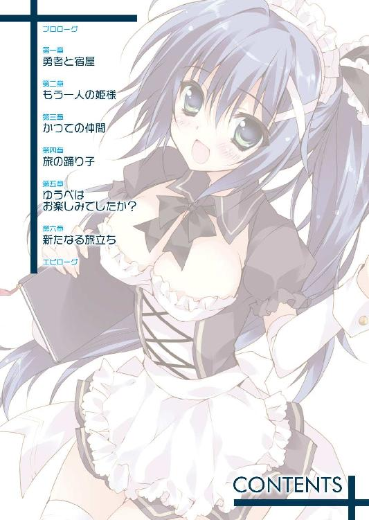
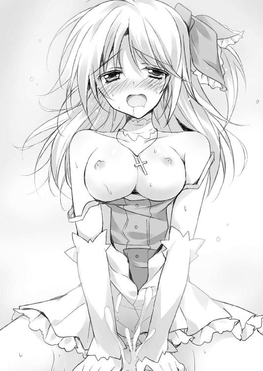

| 勇者よ、宿屋の店主になってしまうとは情けない (あとみっく文庫) | |
| 倉田シンジ | |
| (2013) | |


勇者よ、宿屋の店主になってしまうとは情けない
小説：倉田シンジ
挿絵：へるるん
あとみっく文庫
※本作品の全部あるいは一部を無断で複製・転載・配信・送信したり、ホームページ上に転載することを禁止します。本作品の内容を無断で改変、改ざん等行うことも禁止します。また、有償・無償にかかわらず本作品を第三者に譲渡することはできません。
プロローグ
冒険者が危険な地域を旅するのは日常の風景だし、その過程で魔物やら野獣やらと戦闘になることもまた、日常茶飯事と言ってしまっていいだろう。
だから、闇夜にひときわ白く浮かび上がる月の下、人の通らぬ街道のど真ん中で繰り広げられているこの戦闘もさほど珍しいものではない。
ただ......一つだけ普通と違うことを挙げるとすれば、魔物と戦っているのが一般的な冒険者たちではなく、勇者が率いるパーティーだということだった。
「いくぞ！ 覚悟しろよ！」
そう叫んで駆けだした剣士が、襲い来る巨大コウモリの群れを切り裂きながら一直線、ターゲットの魔物へと走る。
剣を握るのは十代後半の少年。焦げ茶の髪をした彼こそが、つい先日に王様から認定を受けたばかりの勇者様だった。
そしてその相手となる魔物は、黒いモヤが人の形を取っているような、このあたりではちょっと見ない珍しいモンスター。その魔物が魔法の力で生み出した数百匹という巨大コウモリに襲われて、他のパーティーメンバーはすでに満身創痍だ。
勇者パーティーは前衛二人に後衛二人。最前線で戦うのは、勇者ともう一人の女性の剣士。後方からそれをサポートするのは、それぞれ白と黒のローブを羽織った僧侶と魔術師らしき二人。なかなか攻守のバランスがいいパーティーだろう。
だが、さっきまで隣で勇者をサポートしてくれていた女性剣士は、いまは敵の魔法攻撃を受けて地に膝をついている。後衛の二人も魔力が尽きてしまって、敵を避けるだけで精いっぱい、もはや為す術なしといった有様だった。
要するに、ひどく苦戦している。現状でまともに動けるのは勇者だけだ。
（でも......）
少年はそんな状況にもめげていなかった。仲間たちの踏ん張りのおかげでコウモリは激減している。いまならば、敵の本体であるモヤモヤとした魔物に近づくことができる。
（ちょっとピンチだけど、ここは勇者の力の見せどころだよな？ うんうん......燃えてきたぞおおおおぉぉ!!）
めげるどころか、むしろここぞとばかりにウキウキしていた。
「ウィル！ 上から来てるよ！」
後方で突進を見送る女性剣士が彼の名を叫ぶ。
鋭い牙を剥いた巨大コウモリが数匹、勇者の上方から急降下してきていた。
「このっ......！ しつこいぞ！」
攻撃を剣で受け、急降下の勢いを弾き返す。すると、勇者が動きを止めたところに向けてさらに数匹、今度は左右からコウモリが挟み撃ちしてくる──。
さすがに反応が遅れ、槍のように尖った牙がすぐそこに迫っていた。
しかし彼だってただの人間ではない。冒険者であり、そして勇者だった。
巨大とはいえ、このコウモリは現在戦闘中の魔物が作り出した使い魔みたいなもの。数さえ揃わなければザコ。魔物相手に戦う冒険者なら、この程度、問題にならない。
「はあぁぁぁぁっ！」
まずは左のコウモリを叩き落とし、刃を返して右も一刀両断。
剣技はまだまだ荒削りだが、若さを感じる力強い剣捌きで周囲のコウモリをあっさり片付けると、ウィルという名で呼ばれた勇者が魔物めがけて一気に走り抜ける。
もうターゲットは目の前。ようやく魔物も迎撃の構えを取るが、間に合わない。
「うぉぉおおおおおっ！ 覚悟っ......！」
ザシュッと小気味よい音を残して、そのまま剣が振り抜かれた。派手な音のわりに手応えは薄いが、剣で斬りつけられた魔物は真っ二つになっている。
そのまま数秒。
『ぎぃあああああぁぁぁぁぁ......』
遠くから響いてくるような断末魔の悲鳴を上げて、人体を模した黒いモヤモヤが霧散していく。残っていたコウモリたちも灰になって、パラパラと崩れ落ちているのが見えた。
「ふうぅぅ......妙に手ごわい魔物だった」
それでウィルはようやく、魔物を倒したと確信したのだった。
（ともかく、これでシルベリアに入ることができるんだ......）
ここはシルベリア王国の最辺境。正確には隣国との国境にあたる緩衝地域で、ここの少し先からがシルベリアの領土になる。
この国が魔王の軍勢に襲われたと聞かされたのは、もうふた月ほど前のことになる。その頃ウィルは、シルベリアの隣国であるミルキア神聖王国に住んでいた。
（ミルキアの王様に隣国まで魔王退治に行くように言われて、それから面倒な準備をいろいろこなして、ようやく......ようやくここまで来た......！ 長かったよなぁ......）
出発してからは夜を徹した強行軍でシルベリアを目指し、ようやく国に入るかどうかというところで魔物に襲われ......。それがさっきの戦闘である。
「ああっ！ そうだ！ みんな大丈夫だった？ ケガは？」
それ以上の感慨に耽る間もなく、剣を収めたウィルは背後を振り返った。
女性剣士の傷も、魔術師たちの消耗も、一見してさほどの心配はいらないようだった。多少は顔に疲れを浮かべながらも、みなに目立った負傷は見られない。
「じゃあ、一休みしたらいよいよシルベリア王国に入ろう！ まずはニクスの街だ！」
いかにも勇者らしくリーダーシップを取ってそう宣言したウィル。
その前途は、勇者の称号にふさわしく輝いているように見えた。
※
「はぁあぁぁぁあぁ............」
ウィルは長いため息をついて、ニクスの街の大通りを歩いていた。
街の中は、国が魔物に襲われているわりには人の行き来が多かった。自分のように旅人装束の人間もちらほらと見かけるし、住民たちは普通に暮らしているように見える。
（まあ、このへんはシルベリア王国の端の方だからな。まだ平和なんだろうけど）
ニクスは、隣国ミルキアへと繋がる街道沿いにある、中規模の街だった。
大通りは石畳で整備されていて馬車も通れる立派なもの。市場が開かれているらしい脇道には、いくつもの露天商が並んでいるのが見えた。
これで一人でなければ、初めての街に到着した新鮮さを満喫できそうなものなのに。
「愚痴ってても仕方ない......。よし！ 今日はもう宿を取ろう！ そこで最新の情報を集めて、城までの道も聞いて、シルベリア王に面会して......。明日から忙しくなるぞー」
どこかカラ元気を感じさせる独り言を呟きつつ目指すのは、さっき街の入り口で衛兵から聞いた宿屋だ。時間帯はようやく夕方といった感じだけれど、なんだか疲れた。久しぶりのベッドの上でゆっくり寝てしまいたい。
目的の宿屋は、通りを歩いているとすぐに見つかった。
（なかなか立派な宿屋じゃないか......はは......）
建物はしっかりした作りで、大きさも街の規模からすれば立派。そういえば衛兵は「この街に宿は一つだけ」って言っていたし、さぞかし繁盛しているんだろう。その分宿賃は高いのかもしれないけど、どうせ一人だしそんなに気にするほどのことでもない。
「まあいいや。さっさと部屋を取ろう」
さっきから独り言が多い。と自覚していても、寂しいんだからしょうがない。
ドアを押すと、来客を知らせるためのベルがカランカラン、と鳴り響いた。
採光用の天窓のおかげで中は明るい。入ってすぐはちょっと広めのフロアになっていて、おそらくは客が食事を取るためのテーブルが並んでいる。正面には来客を受け付けるカウンター台があり、そこの壁にぶら下げられた客室の鍵はざっと六、七個くらい。
壁際には二階に上がる階段、その脇には奥に繋がる通路が見える。
客室は上階らしい。というのも、階段脇の通路からいかにも「奥で仕事してました」といった感じの女の子が出てきたからだ。
メイドっぽいカチューシャとエプロンを着けた、自分と同い年ぐらいの女の子。彼女がここで働いているだろうことは、その格好からもすぐ分かる。腕を伝う水滴がポタポタ落ちているところを見ると、奥で洗い物でもしていたらしい。
「はいはい。えーっと、お客様？」
にこっと微笑まれて、なんだか妙にドキドキしてしまった。
「あ、うん......。泊まりたいなーと、思って......」
それを反映して受け答えがちょっとぎこちない。
「お泊まりはお一人......でいいのかな？」
「えっ？ あ、うん、一人で......。まだ予定は立ててないけど、とりあえず一泊......」
「はい、ありがとうございます！ じゃ、こちらに記帳をお願いしますね」
テキパキとした仕事っぷりからも、フレンドリーなくらいのしゃべり方からも、快活な印象を受ける女の子だった。この宿の店主......には見えないから、宿の主の娘か、お手伝いの雇われ人といったところだろう。
スリムな身体つきにメイドっぽさのある服装は、いかにも働き者の看板娘といった感じ。そのくせ妙に洗練されたイメージも持っているのは、町娘にしては肌が白くて上品さを感じさせるからだ。濡れた腕をハンカチで拭いている仕草から、なぜか目が離せない。
少しだけ吊り目がちな瞳は緑っぽくて、髪には青みを帯びている。仕事の邪魔になるからだろう、長い髪は頭の後ろで縛られていて、馬のしっぽのように垂らされていた。
「......どうかしました？」
「あ！ 記帳だよね。えっと......」
渡された羽ペンを持ったままじーっと見とれていたことに気づき、慌てて記帳する。
「私はこの宿で働いてるアニスといいます。よろしくお願いしますね」
「......よ、よろしく」
（だめだめ！ 俺は勇者なんだからしっかりしないと！ ちょっと見ないくらいの美少女が相手だからって、ぽーっとしてる場合じゃないっての！）
ウィル十八歳。職業、勇者。さりとて中身は普通の男の子。可愛い女の子を前にすれば、思春期特有の青臭い緊張もしてしまう。
「そ、そういえば、この街の領主様に会いたいんだけど、どこに行けばいいのかな？ シルベリアの王様に会うために紹介状を書いてほしいんだ」
なんとなく気まずくて、とりあえず口にしたのがそんな質問だった。
「王様に会う？ ......なんで？」
ちょっとだけ反応が変わった気がして、おや？ と思いつつも。
「俺は隣国のミルキアから魔王討伐に来たんだ。その......いわゆる勇者なんだよ」
勇者であることは控えめに、だがしっかりと伝える。勇者ウィル十八歳。中身は普通の男の子。ちょっとくらいは自尊心もある。
なのに、宿屋娘アニスはしばらく無言でいかにも反応が鈍い。それどころか......、
「っはぁ～～～～～」
盛大なため息が返ってきた。
「はいはい、勇者ねぇ。最近多いのよ、あんたみたいなの」
目つきと口調まで変わって、くりっと大きな瞳をジト目に、フレンドリーながらも丁寧な口調がすっかりタメ口に。
「え？ え？ な、なにが多いって？ よく分からないんだけど」
「だから、魔物を倒して名を上げようって冒険者が、よ。魔物の持ってる宝物を集めてコレクターに売るトレジャーハンターとか、魔物を倒して領主に取り入って小遣い稼ぎする傭兵みたいな人とか......。そういう人たち、私あんまり好きじゃないの。冒険者だなんて名乗っておいて、避難して空き家になってる屋敷を狙う盗賊モドキまでいるんだから」
「いやいや！ 俺はそうじゃないよ!? 冒険者というか、魔王を倒す勇者だし、ホントにこの国を救おうと思って......」
「なるほど、熱血バカな冒険者ってこと？ ま、さすがに勇者を自称する人は初めて会ったけど......まさか、勇者のふりしてこの街で詐欺を働こうっていうんじゃないでしょうね？ もしそうなら承知しないわよ？」
「いやいやいやいや！ 俺は本当に勇者なんだよ！ ほらこれ、伝説の剣！」
と言いながら取り出したのは、腰に吊るした剣と比べるべくもない小さなもの。剣という言葉のイメージからかけ離れ、ダガーという言葉すら似合わないくらいの小刀だった。
「なにこれ？ 果物ナイフ？ やだもう、汚いわね。カウンターが汚れるじゃない」
「ひ、ひどい......」
しかも刃こぼれしてボロボロ、柄の部分はすっかり錆びついていて、カウンターに置いただけでポロポロと茶色の錆がこぼれている。
（確かにぼろいけど......故郷の村じゃみんなが知ってる伝説の剣なのに......）
ウィルの生地であるミルキア神聖王国のラーサ村に保管されていたのがこの剣──正確にはダガーだが敬意を込めて剣と呼ばれている──だ。村には「岩に刺さったこの剣を抜く者は勇者の資格を持つ」という伝承が残っていて、年に一度の祭りで若者がそれを試すのが習わしとなっている。
そして、いまから一年ほど前、ふざけ半分でそれにチャレンジしてすっぽり抜いてしまったのが冒険者になりたての頃のウィルだった。
それから宮廷魔術師たちによって伝承が本当かどうかの審査を受け、王様から晴れて勇者認定を受けたのが半年ほど前。
それから数ヶ月後、ここシルベリア王国が魔王に襲われたという知らせを受けた。
そうなると「やっぱり勇者は現れるべくして現れたんだ」という具合に話が進むわけで、いまはこうして、シルベリアまで魔王討伐にやってきているわけだった。
つまりこの剣は自分が勇者であることの証のようなもの。ただしこのボロさからして、アニスのように初めて見る者にはまず分かってもらえないのが常だった。
「と、とにかく！ 俺は本当に王様に会わなきゃいけなくて......」
「そうね......。見た感じマヌケそうだし、少なくとも詐欺師には見えないわね。でも勇者を自称するのはさすがにやめた方がいいわよ。他の国でなら笑い話で済むけど、実際に魔物に襲われてるこの国では逆に信用を失うことになるんだから」
「でもあの......」
「なに？」
「いえ、なんでもないです......もういいです......」
こっちの性格が地だったのかと残念な思いに囚われながら、ウィルはそれ以上説明する気を失ってうな垂れる。しょんぼりしながら伝説の剣をしまい込んでいるウィルを見て、さすがにちょっと言いすぎたと思ったのか。アニスがフォローを入れてくる。
「あれでしょ？ そのナイフって、田舎の村によくある勇者伝承かなんかでしょ？ ああいうのって間違いなく嘘っぱちだから。あんた人が好さそうだから騙されちゃったのね」
フォローじゃないどころか傷をえぐられたような気がする......。
「でも、どっちにしたって王様には会えないけどね。えーっと、ウィル？ なかなかいい名前じゃない。冒険者なんてやめて、まっとうな仕事を探した方がいいわよ」
と、記帳された名前を見ながらアニス。
「ありがとう。そしてご忠告、痛み入るよ。......って、なんで王様に会えないの？」
勇者の使命を説明しようとしても面倒なことになるだけなのは学習した。しかし、情報収集は必要なので聞ける話は聞いておかなければならない。
「シルベリア王は行方不明なの。いまから一ヶ月前、王城が攻め落とされた時にね」
「そんな......！ じゃあ、もうこの国は......」
まさか王城まで落とされていたとは。王様が死んでしまったら、もうこの国は立て直せないかもしれない。せっかく勇者としてこの国に派遣されてきたのに......。
「ううん、それはまだ大丈夫。いまどこにいるのかは分からないけど、王様は死んだわけじゃないと思うし......。国土の半分を残したくらいのところで魔王の侵攻も止まってるし、残った地方の領主が頑張ってくれてるから」
「そうか、それならまだ......。魔王を倒して王城を解放すればなんとかなるよね」
ほっと胸を撫で下ろす。
「本気でそんなこと言ってるの？ 本物の勇者ならともかく、冒険者一人でどうなるものでもないわよ。夢見るのはやめておきなさいよね」
（まずい、また説教が始まりそうな予感......）
「それに、もしあんたが本当に勇者だったら、『来るのが一ヶ月遅い！』って叱りつけて、街の広場で三時間は反省の正座をさせてやるところよ。勇者がさっさと現れて、さささっと魔王を倒してくれれば、この国もここまで蹂躙されないで済んだのに」
「そ、そうですか......」
とりあえず説教は続かないようだが、背中にひやりとしたものが流れた。こちらだって旅のためにいろんな準備があって、それでも急いでやってきたのだ。
「それに、この国に来るまでは一人じゃなくてパーティーも組んでたし......」
「え？ なにか言った？」
「いや、なんでも......。それより、そろそろ部屋に案内してほしいんだけど......」
「あー、そうだったわね。ちょっと待っててくれる？ いま鍵を......えーっと、一人用の部屋はどの鍵だったかな......。あれ？ この部屋ってシーツの取り替え終わってたっけ？」
さっきまでは「フレンドリーながらも心遣いを感じる接客」といった感じだったのに、いまではすっかり扱いがぞんざいになってしまった。
いや、客と従業員の関係どころか、舎弟かなにかぐらいに下に見られている気がする。たぶん自分と同い年ぐらいなのに......。
一応親密になれたと思うべきなのだろうか。違う気がするけど。
......なんてことを思っていた時だった。
「おや？ お客様ですか？」
「あ、おじさん。そうなのよ」
カラン、と入り口ドアが開いて、アニスにおじさんと呼ばれた中年男性が入ってきた。
「これはこれは、やはりお客様でしたか。わたしがこの宿の主です」
物腰の柔らかな人で、ずいぶんと年下のウィルにも丁寧に頭を下げてくる。
「あっ、これはご丁寧に。おじさんということは......アニスさんのご親戚ですか？」
雇われ人が店主のことをおじさん呼ばわりはしないだろうし、親でもないだろう。だから少し離れた血縁者なのだろうと考えて、アニスに「さん付け」したのだけれど。
「いえいえ、アニスさま......さんは、うちで預か......ごほん。雇っているんですよ」
「......まあ、そういうこと。私はあくまでも雇われた宿屋娘よ」
「はあ......そうなんですか？」
妙な空気を感じながらも、本人たちがそう言うならそういうことかと納得した。
それにしても、自分で雇った相手にまでさん付けとは、この店主は本当に丁寧な人だ。そしてアニスは対照的に、雇われ人のくせに店主をおじさんなんて呼んでいる。
「アニスさん、もう部屋にはご案内したんですか？」
「あ、いま案内しようと思ってたところなの。このお客さんが『自分は勇者だ』なんて言うもんだから、ついつい話が長くなってしまって」
（その長くなった話の九割はアニスが喋ってたわけだけど......）
と心の中だけでつっこんでおく。
変に口を出したら、この人の好さそうなおじさんにまで「自分のことを勇者だなんて言うもんじゃないですよ」なんて懇切丁寧な説教を食らいかねない。
だが、それを聞いた店主の反応は予想外のものだった。
「勇者......？ ははは、いや、まさか......」
と、最初はやはり本気にしていない様子の言葉だったのに、
「......そうか勇者か。そういうことにしておこうかな。勇者なら安心だ......うむうむ」
などと、次第に妙な雰囲気になって一人で納得している様子。
「おじさん？ どうしたの？」
「ああいや！ なんでもないよ！ そうかそうか、この人は勇者かー！」
しまいには変な具合にハイテンションになって挙動不審だ。
「もしかして信じてるの？ ウィルが勇者だって」
こちらはこちらで、お客様をいつの間にやら呼び捨てだ。面倒なのでもういいけれど。
「ウィルさんというんですか。これは素晴らしい名前だ！ 勇者様にふさわしいじゃないですか、うんうん」
「ありふれた名前だと思いますが......。ああ、それはともかく！ 俺が勇者だって信じてもらえるんですか!? アニスもそうだけど、なかなか信じてもらえなくて！」
「いえいえ、わたしはもちろん信じますとも！ いえね、ひと目見た時からなんだかこの方は雰囲気が違う、って思ってたんですよ！ いや、本当に！」
「う、嬉しいです！」
男同士でがっしりと握手。そう......信じてくれる人もいるのだ。
なんだかもう、なにもしてないけど苦労が報われた気分で胸がいっぱいだった。
一人首をひねるアニスをよそに、それから二人の盛り上がりは勇者歓迎会と称した食事会に発展した。
ささやかながらも心のこもった料理を振る舞われ、お腹も膨れて気づけばすっかり夜。
そこでようやく自分の部屋に案内されて、ウィルは深い眠りにつくことになった。
バン！ と大きな音を立ててドアが開かれ、アニスが部屋に飛び込んできたのは、窓の外から小鳥のさえずりが聞こえる時間になってからのことだった。
第一章 勇者と宿屋
「様子が変だと思ってたのよ......」
部屋の中を歩き回りながらアニスが呟く。いかにも不機嫌そう。
「......話が見えないんだけど」
そして、なんとなく雰囲気的にベッドの上で正座しているウィルはまだ眠そう。
かろうじて朝と呼べる時間だが、太陽は低く、窓から見下ろす通りにも人通りはない。
「言ったでしょ、おじさんが夜逃げしたのよ」
アニスが同じところをぐるぐる歩き回っている。ポニーテールが右に左に。それをぼーっと眺めながら、再度の質問をしてみる。
「だからそれが分からないんだよ。なんで夜逃げなんか......借金でもあったの？」
夜逃げといえばそれぐらいしか思い浮かばない。ついでに「なんでそれを部外者の俺に？ しかもこんな朝っぱらから？」と言いたいところだけど、それは我慢。
勇者である自分は困った人を見捨ててはならないのだ。たとえ......傍若無人で、妙に上から目線で、そのくせ可愛いから憎むに憎めないこの少女のように、ウィルのことを勇者だとまったく信じていない者が相手だとしても。
「......ほら、これを見てよ」
と言いながら差し出してきたのは、三つに折りたたまれた手紙だった。いわゆる置き手紙のようだ。最初からそれを見せてほしい。
「どれどれ......」
文句の一つも言わない自分に内心で拍手しながら、手紙にざっと目を通す。
なるほど。あの店主が夜逃げするに至った心境が書かれてある。いくつか理由はあるようだが、要約すると「いつ魔物が襲ってくるかと心配でこれ以上は耐えられないので、他の国に逃げます」ということらしい。
「街が平和だから気づかなかったけど......。そうだよね、冒険者でもなんでもない普通の人にとっては、魔物の脅威はこんなにも大きいものなんだ」
みな不安に思いながらもこの街で暮らしている。逃げたくても、まとまったお金がなくては生活基盤を他に移すことなどままならないからだ。
（俺が早くなんとかしないと......！）
勇者としての使命感に火がついた。もう、のんびりしてはいられない。今日中に街を出て魔物に占拠された王城に向かわなくては。いや、その前に仲間を集めないと。まずは近くの街を回って仲間になってくれる冒険者を探そう。......なんてことを考えていると。
「違うわよ」
「......え？」
「だから、そこに書いてあることは嘘よ。少なくとも半分はね」
「嘘？ そうかなぁ......アニスはなんでそう思うの？」
「だいたい、魔物が怖いだけなら堂々と逃げればいいじゃない。わざわざ夜中に、人目を避けて逃げる必要なんてないでしょ」
「それはそうだけど......。ご近所付き合いもあるし、自分だけ逃げるのが後ろめたかったとか......。いつかは戻ってくるつもりなのかもしれないしね」
「こっそり夜逃げする方がよっぽど後ろめたくてご近所付き合いに悪影響を及ぼすわよ。たまに家財道具をまとめて他国に避難する人はいるけど、夜逃げなんて聞いたことない。間違いなく、おじさんはもうここには帰ってこないつもりよ」
「ん～、じゃあなんで......」
ウィルもだんだんおかしい気がしてきた。他にも理由があったということだろうか。
なにも思いつかずに首をかしげていると、アニスが補足してきた。
「しかも昨日はあんなに『勇者様が来てくれればこの街も安泰だー』なんて言って騒いでたのに、その数時間後に夜逃げだなんて。手紙の最後の方だっておかしいでしょ」
「ああ、そういえば確かに......」
アニスの言うように、宿の主は昨日の晩には「勇者様バンザイ！」状態だったのだ。ウィルのことを勇者だと信じていたのなら、魔物を恐れて夜逃げなんてしないはずだ。
それと手紙の最後の方は......。見ると、その部分にはこんなことが書いてあった。
『......というわけでわたしはこの街を去りますが、唯一の心残りはアニス様のこと。ただ、この世界を救ってくださる勇者様ならば姫様のこともきっといいように取りはからってくださるものと信じています。あとのことはよろしくお願いします』
よくよく見ると、この部分はウィルに向けて書かれているようだ。勇者様を持ち上げるようなことを書いておきながらやってることは夜逃げ、という矛盾はここからも読み取れる。が、もう一つ気になる部分が。
「......姫様？」
「私のことよ」
「うん、それを文脈から読み取れるくらいにはバカじゃないよ。で......姫様？」
「だから私のことだってば！ 二度も同じこと言わせないでよ。バカなの？」
「なるほど......そうか、分かったよ。アニスはあのご主人の弱みを握っていて、宿屋の主と使用人の関係が逆転していたんだ。自分に敬語を使わせたり、姫様だなんて呼ばせたり......、あの人がアニスに対して妙に腰が低かった理由がこれで解けた！」
「違うわよ！ 理解力とか判断力が足りないんじゃないの？ 断言してもいいけどあんた、冒険者を続けたら三年以内に死ぬわね」
（く......言わせておけば！ でもただの冒険者じゃなくて勇者だし！ もっと長生きできるし！ ......ん？ でも、危地に臨むことが多いから逆に短くなるのかな？ いやいや、それ以前に死ぬこと前提なのが間違ってる......）
と、心の中だけで子供のような反論と葛藤をしつつ、やっぱり口には出せない。
それはさておき、本当に姫様だというのなら、どこぞの領主様の娘さんということだろうか。確かに、宿屋で働く町娘にしては肌は白いし髪の毛のほつれもない。見た目からして、すごく洗練されている気がしなくもない。性格は別だが。
「私の本来の名前はアニエス＝シルヴィーネ。公の場以外ではアニスと名乗ってるわ」
「アニエス......シルヴィーネ？」
名前はともかく、後ろの方はどこかで聞いたことがあるような。
「やっぱり鈍いわね。シルヴィーネはシルベリア王族が名乗る時に使う家名でしょ」
「王族っていうと......」
「ああもう！ つまり私は王女なのよ！ 現シルベリア国王の第一王女！ この国の王様の娘！ 分かった!?」
「はっ、はい！ 分かりましたっ！」
さっぱり理解できてはいないものの、とりあえず応えておいた。
（......えーっと、アニスは姫様で、この国の王女様で......。領主様どころか王様の娘......）
「ああ、今度こそ分かった。つまりキミには虚言癖があると......」
「違うでしょーが！ 本物よ！ 王城が乗っ取られたからここに逃げてきたの！ ほらこれ、王家の紋章付きのハンカチ！ こっちは紋章付き護身用短刀！ 他にもいろいろあるわよ！ これを見ればバカでも信じるわよね？」
（俺のことは勇者だってちっとも信じなかったくせに......）
でも確かに、見せられた品々にはウィルにも分かる紋章が付いている。王家の紋章付きの品は模造品を作っただけでお縄になるし、いかにも高価そうなそれらは品質的にも偽物とは思えない。どうやら本当のことらしい。
「............うーん」
「なによ？ まだ納得できない？」
「ううん、違うよ。世の中にはこういうお姫様もいるんだなあ、と......」
バシッと後頭部をはたかれて、ますますそう実感した。
「でもなんでアニエス殿下はこんなところに......えーと、いらっしゃるんでしょうか？」
「いいわよ、かしこまらなくて。王女を前にして緊張するのは分かるけどね」
正直に言えばまったく緊張していない。それどころか、相手が王女と判明したいまも、彼女の上から目線に反感を覚えてしまうくらい自然体だ。
「じゃあ、お言葉に甘えて。アニスはなんでこの街に？ 落城が一ヶ月前だったっけ？」
「そうよ。逃げる途中で、王族はみんな離散したわ。私も少しの護衛だけ連れてこの街に逃げてきたの。数年前に亡くなったこの宿の奥さんが昔、王宮仕えの女官だったのよ。その縁でおじさんとも顔なじみだったから」
「それにしたって、なんで？ お姫様なら他の国に......たとえば隣国のミルキアならここからだってそう遠くないし、保護してもらえるだろうに」
と言ってから気づいた。
ウィルの地元であるミルキア神聖王国とシルベリア王国は仲があまりよろしくない。何百年も前にシルベリアの一部が独立する形で成立したのがミルキア神聖王国で、いわば格下。いまでは肩を並べる国力を誇っているものの、神聖王国なんてご大層な名前がついたのも、シルベリア王国に対抗してのものだったという話がある。
そんな経緯があるので、表面上は普通を装っていても互いに仲が悪いことは自覚している国同士だ。いや、現在では仲が悪いと言うよりもライバル視しているというのが近い。
アニスの答えもやはりというか、それを反映していた。
「ミルキアになんか行けるわけないじゃない！ あの国ったら、こっちが魔王相手に四苦八苦してる時に『お前んとこ魔物に襲われて大変らしいじゃん？ このままだとやばいんじゃね？ どうする？ 助けが欲しいなら素直にそう言った方がいいと思うけどー？』なんて書簡を送ってきたのよ！ 冗談じゃないわ！」
「そ、そうだったのか......」
もしかしてその「助け」というのは勇者である自分のことではなかろうか、などとも思いつつ、さすがにちょっと気の毒になった。国民同士はそんなことないのだけれど、国のトップ同士がそこまで険悪だとは。しかも子供じみた方向性で。
なんとなく分かってきた。ミルキアの王様はそうやって助力を申し入れて恩を売ろうとしたものの、それを拒否されて、かといってシルベリアが魔物の勢力下に入ったら次は自分のところが危ないので、渋々ながらも独自の判断で勇者派遣に至ったのだろう。
自分が出発するまで妙に時間をかけさせられたのも、そういういざこざがあったからかもしれない。なんとも面倒なことだ。
「でも、それなら他の国に保護してもらえば......」
「それ以前に、仮にも王族の一員が国を捨てて逃げるわけにはいかないじゃない。それが国を任されている貴族の責任ってものよ」
なら素直に、ミルキアにだろうが助力を求めればいいのに。庶民出身のウィルからすると、責任感がないんだかあるんだか分からない。
「うーん。でも、ここにいたってなにもできないんじゃないのかな？ せめてまだ平和な地域の領主を頼って保護してもらうとか」
「どっちにしたってそれじゃお荷物になるだけだもの。私はここで厄介になりながら、城の奪還のためにまずお父様を探すことにしたの。私の護衛についてきた者たちをあちこちに派遣して、いまは父様の居所を探しているところってわけ」
そういえばシルベリアの王様は行方不明になっていると言っていた。確かに国をまとめ上げるには中心となる人物が必要なのだろうけど。
「生きてるのは確かなの。他国に逃げたって話も聞かないし、お父様はまだこの国のどこかに隠れ住んでるのよ。まったくあの人は、王としての自覚が足りないっていうか......」
「じゃあ、宿で働いていたのは？」
「さっきから言ってるじゃない。お荷物になるのが嫌だったのよ。面倒をかける代わりに、身分を隠してここで働くくらいはしないとね」
「それは律儀だね......。でもようやく分かったよ。つまり宿屋のご主人にとっての姫様は、扱いに困る重荷だったと......」
「まあ、不本意ながらもそういうことね」
もう一度さっきの置き手紙を見てみる。特に最後の部分。
『この世界を救ってくださる勇者様ならば姫様のこともきっといいように取りはからってくださるものと信じています』
宿の親爺さんはこんなふうに考えたんだろう──。
この街から逃げ出したい。でもここを離れたがらないお姫様をほっぽり出していくわけにもいかない。さてどうするかと思っていたところに、自称勇者が現れた。勇者になら姫様を任せることができる。いやむしろ自分が面倒を見るより勇者に任せた方がいいに決まってる。よし決まった、この若者は勇者だ。勇者に違いない。そう信じよう。信じた！
──と、こんな感じ。
（ううぅ......勇者だと信じてくれてると思ったのに......）
信じてないけど信じたことにした、とでも言うべきか。
がっくりと落ちたウィルの肩に、ぽん、と手が置かれる。
「アニス......？」
「というわけで、よろしくね？ たとえあんたが勇者じゃなくても、おじさんがあとのことを任せたのは事実なんだし」
「............は？」
「こう考えたらどうかしら？ 冒険者より安定した職を、労せず手に入れることができた、って。おじさんはお金ぐらいしか持っていかなかったみたいだし、宿はそのまま、家財道具もそのまま。宿屋を営むにはなんの不都合もないわ」
「アニス様がなにを言ってるのか俺にはまったく分かりません」
「いちいち説明が必要なの？ ......まあいいわ、要するに、あんたはこの宿と、ここに住む私を保護する権利と義務を手に入れたってことよ」
「............」
「だって私はお姫様なのよ？ 宿の中の仕事は頑張って覚えたけど、食材の買い出しとか、備品の補充とか、お金の管理とか、細かいところはさっぱり分からないもの。それに力仕事は男手がないと大変だし。あんたには頑張って稼いでもらわないと」
「いやいやいや、待ってくださいよアニスさん？ どうして俺が宿屋を経営しないといけなくなるの？ というか、お姫様ならそんなことしなくても当分暮らしていけ──」
「お金、ないの」
「......えええ？」
衝撃の事実に口があんぐりと開いていくのが自分でも分かった。
「お城を追われたお姫様に収入があると思うの？ なにより、お父様を探すのにお金がかかるのよ。これまではおじさんがそれを工面してくれてたんだけど......」
「うわ、ひどい」
「ひどくないわよ。国を取り戻した暁には何倍にもして返すって約束してたもの」
それがカラ約束にならないという保証はどこにもないが、そこまでは考えていないようだ。はた迷惑なくらいに前向きだ。こんな状況でないなら褒めてあげてもいいくらい。
「というわけであとのことはお願いね。私もこれまで通りにここで働いてあげるから」
にこっと笑いながらそう言ったアニス。言外に有無を言わせぬ強制力を感じる......。
ここで押しきられては面倒なことになりそうだ、と直感した。せめて勇者として困っている人に頼られるならまだしも、これじゃお姫様とそれに仕える騎士......どころか、お姫様と従僕。いくら王女相手とはいえ、男としてここは毅然とすべきだ。承諾するかどうかはともかく、自分の考えはしっかり述べておきたい。
「でも！ 俺にはやらなきゃいけないことが──」
「なに？ それじゃあんたは私を一人にして平気なわけ？ 勇者と勘違いされたとはいえ、おじさんがあんたのことを見込んで頼んだのは事実なのに？」
渾身の決意を込めた言葉をあっさりと遮られてしまって、しかも的確に言い返せない。相変わらずアニスからすると自称勇者扱いだが、こちらとしては勇者なのは事実だし、相手が困っていることは確かだからだ。
それにもう一つ、どうやら自分はこういう押しの強いタイプに弱い。
......いや、もしかして女の子というものに弱いんだろうか。
色恋についてはまったく縁がなくて、幼馴染みのお姉さんに淡い憧憬を抱くぐらいが精いっぱいだった自分にとって、気の強い女性は扱える代物ではないらしい。
（あああああ、どうしよう......）
困ったことになった。やはり、男らしくきっぱり断った方がいいだろうか。
しかし姫様を見捨てるようでそれも躊躇われる。たとえ相手が姫様でなかったとしても、困っている人の頼み事を断るのは......。
「ひ・き・う・け・て、くれるわよね？」
「はい」
目だけが笑っていない微笑みと一緒に迫られて、ついそう答えてしまった。しまったと思ってはみても、覆水は盆に返らない。
返事を聞いて、睨むように微笑んだ顔を寄せていたアニスが、ほうっと息を吐く。
「はぁ～よかったぁ～。もし断られたらどうしようかと思ったわ。他に知り合いなんていないし、一人で宿を切り盛りするのも無理だったし......」
（あれ？ ほとんど強制されてるような印象だったんだけど、本人にそういうつもりはないのかな？ 俺のこと、それなりに信用してくれてるみたいだし......）
それなら、もうちょっと素直に頼んでくれればいいのに。こちらとしてもその方がしっかり考える余地が出ようというものだ。
（そういうところはお姫様っぽいってことなのかもな。命令ばっかりで、本心からの頼み事なんてしたことなかったのかも......。きっと悪気はないんだ）
勢いで返事をしてしまったものの、そう考えると了承したのは間違いではなかった気がする。この国を魔物から解放するのはちょっと遅れてしまいそうだけれど。
喜んでニコニコしているアニスの顔を見ていると悪い気はしない。
ただ......。
「自分が勇者だなんて荒唐無稽なこと言っちゃうぐらいだもの。ウィルなら私を騙したり裏切ったりするような機転はきかないものね。安心して任せられるわ」
「............」
やっぱり悪気も含まれているのかもしれない。
「でもしばらくの間だけだよ。俺はあくまでも勇者なんだ。いつまでもこの街にいるわけにはいかないんだからな」
ちょっと拗ねながら言ってみる。それにアニスは上機嫌で答えた。
「分かってるってば、ゆ・う・しゃ・さま。父様を見つけるまでの間なんだから、きっとそんなに長くはならないわよ」
なにを根拠にそう言っているのか分からない。そして明らかに勇者であることは信じていない。たぶん「駆けだし冒険者が勇者を目指して大きなことを言ってる」ぐらいのニュアンスにしか捉えていないのだろう。
「あっ、そういえば朝食もまだだったわね。今日は特別に私が食事を作ってあげるから感謝しなさい。これからのことはそれを食べながら話しましょ」
上機嫌のまま部屋を出て行くのを見送ってから、ふと窓の外を見る。太陽はすっかり地平線から顔を出して、外の通りにも人の姿が見え始めていた。
（なんだか、シルベリアに着いてからいろいろ大変なことばかりだな......）
勇者としては、頭が痛いことだった。
※
「ぐっ......」
腹が痛い。
嫌な予感がしなかったわけではない。ただ、油断していたのは否定できない。
お姫様が作ったという料理はなかなかに刺激的だった。まだ一口含んだだけなのに腹が痛くなってくるという不可思議な効用まである。
（ど、毒が入ってるわけじゃない。この料理を食べるのかと思うだけで、胃が拒絶反応を起こして痛くなるんだ......！）
見た目はまともな部類だろう。少なくともまずそうには見えない。
だが、どうやら見た目「だけ」を似せるように料理したらしい。
たとえばこの、「牛乳で煮込んだ肉と野菜のシチュー」を真似して作ったらしき「謎の白濁液で煮込んだ肉と野菜のシチュー」、そもそも牛乳で煮込んでいない。様々な調味料をぶち込んで色だけは白いスープを作り、野菜も組み合わせを考えず適当に投入。豚肉は保存用の塩漬け肉が使われていてしょっぱく、ちゃんと香味料を使わないから生臭い。
ちらり、と目を上げると、アニスはさっと目をそらした。自分はパンだけかじっている。
「も、もったいないから、私の分も食べていいわよ」
「......いりません」
さすがにこれは食べられない。本人も食べられないと分かっていてパンだけかじっている。この状況で「せっかく女の子が作ってくれたから......」なんて格好をつけようとする甘い考えは、きっぱりと捨てるべきだ。
というか、そんなことをしても、アニスにはこっちの気遣いは通じない気がする。「ええっ？ あんたこんなものまで食べられるの？ 信じられない......」とか言われそうだ。
「はぁ......。料理できないならできないって言えばいいのに」
「できないんじゃないわよ！ さっきまでの私はできると思っていたのよ！」
違いを理解するのが難解だが、つまり、やったことはないけどなんとなくできそうだから初めてお料理してみた──ということか。
「おじさんが料理してるところは見てたから、これくらいならできるかなーと思って......。まあ、失敗しちゃったものは仕方ないわね。パンがあるんだからいいでしょ！」
最後はもう逆ギレ。とりあえず姫様に料理の腕を求めるのは諦めた方がよさそうだ。
「ちょっと待ってて。残り物でなにか作るから」
「え？ そんなことできるの？」
まるで料理することがものすごい才能ででもあるかのような言い方だ。
こう見えて、勇者に認定される前から冒険者をやっていたのだ。料理上手にはほど遠いが、ちゃんと食べられるものを作るぐらいの腕はある。
「まあ、どっちかっていうと料理下手な方なんだろうけど......」
言いながら厨房に入り、塩漬け肉を発見。オリーブオイルもあったので野菜の残りと合わせてざっと火を通し、ハーブを振りかけて臭みを消した。
たったこれだけでも、とりあえず食べられるものはできた。
厨房からあっという間に戻ってきたことにアニスは目を丸くし、その手に香ばしそうな匂いを漂わせる皿を持っているのを見て、さらに目が見開かれる。
「ず、ずいぶん生意気じゃないの......！ これで勝ったと思わないでよ！」
競争していたわけでもないのに。負けず嫌いなのか。
「いや......ははは。そんなにたいしたもんじゃないんだけどね」
「くっ、好きなだけ言ってなさい！ ほらこれ、今日中に目を通しといてよね！」
本当にたいしたものではないので本心からそう言ったのだが、謙遜かイヤミに取られたようだ。悔しそうにしているアニスが皿をひったくり、代わりに冊子を放り投げてくる。
「帳簿......？ ああ、確かにこれを見れば食材の仕入れ先なんかは分かるかも」
「そうよっ！ 私が見てもさっぱりだったけど、ウィルなら分かるんでしょ！」
すっかりヘソを曲げてしまったようだ。ただ、控えめな仕草ながらもフォークを口に往復させているので、料理は気に入ってくれた模様。
（食事の時って、育ちが出るもんなんだな......）
フォークの扱いが洗練されていて、大口を開けて肉を食べるようなこともない。きちんとナイフで小さく切って、しずしずと口に運ぶ。その様はさすがにお姫様だ。
自分も席に座って一口食べてみる。
（うん、まあまあの味だな......。料理って呼べるほどじゃないけど）
胃が受け入れてくれる味にほっとしつつ、何気なく帳簿をめくってみる。
あの親爺さんは几帳面だったようで、取引先からなにをいくらで仕入れたか、何人の客が泊まったか、素人が見てもそれなりにお金の出入りが分かるようになっていた。
「............んんっ!?」
最初に目についたのは、食材の仕入れ先でも、備品の値段でもなかった。
（これってもしかして......。えっと、数字は間違ってないよな......？）
何度計算してみても間違いがあるようには見えない。そしてそれは間違いなく、この宿が赤字経営といっていいくらい厳しい局面に晒されているということを意味した。
過去にさかのぼってみると、数ヶ月前からガクンと収入が減っている。ちょうどこの国が魔物に襲われたというあたりだ。そこからじわじわと客数が減り続け、一週間くらい前から赤字ラインギリギリのところになっていた。
（もしかして、親爺さんが夜逃げした理由って、これが一番でかいんじゃ......？）
この街はまだまだ平和で住民は普通に暮らしているように見える。とはいえ、魔物の出現は宿屋にとってかなりの打撃になったようだ。
よく考えてみると、それはそうだろう。半分が魔物の支配下に落ちた国を好きこのんで旅するのなんて、一攫千金を狙う冒険者ぐらいなもの。街から街に移動して商売している商人や、旅芸人、巡礼者やその他もろもろの旅人は数を減らしているはず。なまじっかそれなりに立派な宿屋だけに、維持費だって馬鹿にならないだろうし。
しかも雑費に分類される金額が妙に多い。たぶんこれがアニスに供出していた王様探しの費用なんだろう。この経営状態でそんなお金まで出て行っては、将来の見通しなんて立たず、夜逃げもしたくなろうというもの。
「どうかした？ なんだか顔色が悪いように見えるわよ？」
「ははは......」
乾いた笑いがこぼれる。
（これは、本当に大変なことを引き受けてしまったのでは......）
背筋に冷たいものが走ったのを感じてしまったウィルだった。
第二章 もう一人の姫様
宿屋主人の朝は早い。
まずは早朝から街の市場へ食材の買い出しだ。必要なものとそうでないもの、それがどれくらい日持ちするか、今日はなにが安く出ているかを見極めなければならない。
ちなみに街の人には、ウィルが宿を任された経緯として実際と少し違ったものを伝えている。つまり、ウィルは元の宿屋主人の甥っ子で、伯父が病を患って地方療養している間、宿の経営を任されたということになっていた。
そして買い出しが終わったあとは、泊まり客を見送り、室内を清掃し、洗濯物を片付けて。その間に客が来ればそれに応対し、食事を望む客があれば朝夕に料理もして......。
アニスも手伝ってくれるものの、とにかく忙しい。
今日は泊まり客がなかったので、朝の空いた時間を使って料理の練習をしている。
客に出せるだけのものを作るにはウィルも経験不足だった。せめて見栄えのいいものを作れるようにならなければ、と毎日勉強の日々である。
「さて、こんな感じかな？」
しかしこれは、それなりにうまくできたのではなかろうか。
などと一人で悦に入るウィルの前には、焼きたてのパンとじっくり煮込んだクリームシチュー、新鮮なポテトを使ったサラダが上品な皿に載って並んでいる。
特にシチューには気合いを入れた。一見すると普通のシチューだが、野菜を煮込む時間から調味料のわずかな量の違いまで、かなり気を遣って仕上げた一品である。
（でも......。うーん、なにかが足りない気がする）
家庭の食事ならまだしも、お金を取る料理としては華やかさが足りないというか......。
「まあいいや。アニスの意見を聞いてみよう」
仮にもお姫様。一緒に暮らすうちにすっかり慣れてしまって「王女様」といったイメージは皆無になってしまったものの、それなりに上等なものを食べてきたはずだし、足りないものが分かるかもしれない。料理の腕はからっきしだが。
「おーい、アニスー！ 朝食ができたから試食してみてー！」
と、厨房から顔を出して一階のアニスの部屋に呼びかける。
「ん......？」
反応がない。まだ寝ているのだろうか。
アニスの部屋に向かい、コンコン、と控えめにノックした。
「おーい、早く起きないと料理が冷めちゃうよー」
反応なし。朝早く夜も遅くなりがちな仕事なので、休める時に休んでおくのは悪いことではないけれど......と、何気なくノブに手をやると。
（あれ？ 開いてる......）
カチャリ。と、あっさり隙間が開いてしまった。
なんとなくそのまま開いて、中を覗き込むと......。
いた。ベッドで人の形に盛り上がったシーツが、寝息に合わせて上下している。
（............）
けっして下心があったわけではない。
だが、ちょっとした好奇心は抑えることができなかった。
足音を忍ばせてそっと部屋に入り、近づいてみる。もしかして熟睡状態だろうか。
（それなら、顔にいたずら書きでも......いやいや、そんなことしたらあとが怖いな）
などと思っていたウィルの足が、ぴたりと止まる。
横向きで寝て、寝乱れたシーツからは肩口までが覗いている。そこにかすかに見えるのは白いブラジャーの肩紐だ。よく見えないが、その上には上質なシルク地を思わせる薄布を羽織っている。キャミソールだろうか。
少し前までお姫様として暮らしていたわけだから、寝る時にはそういう格好で、なんて習慣がしっかり染みついているのかもしれないけれど。
（寝てる姿は......確かにお姫様かも......）
「んっ......」と、かすかな寝息を漏らして仰向けになったアニスの健やかな寝顔。その顔をじっと見て、いや、その寝顔に魅入られて。ごくり、喉が鳴ってしまった。
気を張っていてツンケンした面影があるいつもと違って、寝ている顔はまるで子供のように健やかで、純粋なイメージがあって。それなのに、いかにもお姫様といった上品な下着は異様に大人びて見える......。
（は、早く出ないと。見つかったら大変なことに......！ でも、もうちょっと......）
目を閉じ、わずかに開いた唇からは緩やかな寝息が漏れている。その唇がふっくらとして、つやつやしていて......。
（こうして見ると、アニスってお姫様ってだけじゃなくて、ホントに美少女だな......）
目鼻立ちの整った顔立ちだけでもそうだし、すっと一筆で描いたような眉も、白いシーツに広がった髪すらも、一本一本がしなやかで洗練されて見える。
そして少し目を動かすと。かろうじてシーツに隠れた胸部分にはふっくらとした盛り上がり。どちらかといえばスリムな印象の身体つきなのに、そこだけはいかにも女の子らしく、柔らかそうな膨らみがある。
（たぶん、女の人としては大きい方じゃないと思う、けど......）
そこは確かに膨らんでいて、手に包んだら心地よい感触が味わえるという予感がある。
思わず手を伸ばしそうになって、危うく止めて。
（ゆ、勇者がこんなこと！ でも勇者っていっても人間だし！ お、女の子に興味がないわけでも、ないんだから、もっと見てみたくなるのもしょうがないっていうか......いやいやいやいや！ それは勇者とかじゃなく人としてダメだ！）
激しい葛藤に見舞われてしまう。
少し手を伸ばせば、まるで触られるのを待っているかのような膨らみが。
いや、そこまでしなくとも、シーツをずらすだけでアニスの可憐な下着姿を見ることができる。肩から緩やかな胸の膨らみに続く白い肌、すべすべしたお腹と腰の曲線。きっとそこは贅肉を感じさせないほどくびれていて、お尻や伸びやかな太腿も......。
見るだけならイタズラとして許される範囲かもしれない。
「いや、やっぱりダメだ！ 勇者がそんなことしちゃいけない！」
かろうじてこらえて背を向ける。まるで強敵と戦ったあとのように憔悴した顔で。
「そもそも、女の子の部屋に勝手に入っちゃった時点でマイナスなんだ。これ以上、勇者として恥ずかしい行為なんて許されないよ、うん」
自分を納得させるために無理やりに結論づける。
「そんなことしちゃいけない、って、どんなことしようとしてたの？」
「だから、シーツをずらして下着姿を......。んん!?」
突然の問いかけに反射的に答えながら、ハッとして振り返ると。
（ああ......やっぱりアニスってスタイルいいんだなぁ......）
ベッド上で仁王立ちになったアニスがいた。
身体を隠すために胸の上にシーツを押さえている。しかしその身体のラインまでは隠せていない。胸の膨らみはそれなり、全体的にはやはりほっそりとした印象ながら、腰のくびれは見事なもの。それでいて腰からお尻にかけてはしっかりと女の子していて、覗き見える太腿は息を呑むほど白い。ちらちらと見えている股間を守る下着も、ブラジャーに合わせて上品なもので、これで鬼のような形相でなければ、さぞ......。
「ま、待った！ 違うんだ！ 朝食ができたからアニスを起こそうと思って......」
「このヘンタイ......！ 勝手に部屋に入ってくるなんて......！」
シーツを押さえるのと反対の手で花瓶を手に取るアニス。
これはまずいと思いながらも、ウィルは蛇に睨まれた蛙だった。必死に抗弁する。
「か、鍵をかけないのが悪いんだろ！ だ、だいたいこんな時間まで寝てるアニスが悪い！ 宿の経営者として雇い人の怠慢を見逃すわけには......」
「鍵が壊れたから直してって言っておいたでしょ！ それに、今日はお客がいないからお昼まで寝るって、昨日の夜に私ちゃんと言ったわよね!? 寝られる時に寝ておかないと、急に忙しくなった時に対応できなくなるって、これも以前に教えた気がするけど！」
「え？ そ、そうだっけ......？ うーん、そうだったかなー」
そうだったかもしれない。部屋の鍵を直しておいて、と言われたような。少なくとも、今日の午前はゆっくりする予定だという話は聞いた覚えがある。寝られる時に寝ておくべきだという話も、さっき自分でもそう思っていたくらいだからその通りだ。
「はーやーくー、出ーてーけー」
花瓶を振りかざしながらの言葉には、抑揚があるようでまったくない。すごく怖い。
「ご、ごめん！ あの、その......」
頭の中では警報が鳴っているのに、身体が動かない。
ならばせめて言い訳しなければ。勇者として、人として、あまりにこれは格好悪すぎる。
「............」
分かっているのに、泳いだ視線が行き着いたのは......アニスの身体。見ちゃいけないと思いつつも、シーツからちらちら覗く胸の膨らみに目が吸い寄せられる。
ぷちん、と。アニスの我慢が限界を迎える音を聞いた気がした。
※
「ちょっと！ シーツはしっかり張らないとダメでしょ！ なにやってんのよもう！」
「そ、そうかな？ シワなんて見えないし......。いえすみません。やりなおします」
頭にできたこぶの痛みを我慢しながら、「これはアクシデントなんです。もう二度と勝手に部屋に入りません」と言い訳してなんとか許してもらえたわけだが......。
そのあと、起こしてしまったアニスと一緒に朝食を取りながら「食べられるレベルだけど、もうちょっと種類が欲しいわね。前菜とかメインディッシュとか、食べる時の抑揚を考えて料理しなさいよ」と偉そうな指導を受けることになった。
そしてお昼からは二階の客室で仕事の指導時間だ。
基本的に力仕事や料理がウィルの担当ではあるものの、働き手も少ないことだし、その他の仕事も覚えておいた方がいいだろうとウィルが言い出して教えてもらっているのだが、今日は教官役のアニスがいつもより厳しい。
（まだ怒ってる......。というか不機嫌だ......）
アニスはよく宿屋の仕事をこなしていた。経験値が圧倒的に足りない料理は別として、掃除や洗濯はここに来ての一ヶ月でほぼ完璧に覚えたらしい。
基本的に物覚えがよく、大雑把に見えて実は器用で、よく気がつくお嬢さんなのだ。
これなら料理だって......とも思う。しかし、どうにもならない相性というものはあるようで、こっちは早々に諦めてしまったようだった。
「今日はこのくらいかしらね。そろそろお客さんが来てもおかしくない時間だし」
「そうだね......うん、今日はこのくらいで」
ようやく終わったー！ と内心では快哉を叫びながら、ウィルはよっこらせと腰を上げる。窓の外を見るともうすぐ夕方になろうという時間だった。
カラン、とドアベルが鳴る音が聞こえた。ちょうど客が来たのだ。
「ああ、いいわ。私が応対に出るから」
と、ドアのそばにいたアニスが階段を下りていく。
何気なく窓から外を見下ろすと、宿の前には馬車が停まっていた。他にも数人、馬留めに乗ってきた馬を繋いでいるところを見ると、団体のお客らしい。
（あれ？ あの紋章って......）
ここらでは見かけない、天蓋付き三頭立ての立派な馬車だった。その車体には、ウィルの地元ミルキア国の紋章が描かれている。
と、バタバタした足音が階段を上がってきた。たぶんアニスだろう。
「ウィルっ！ あんたが応対してっ！」
戻ってくるや開口一番に叫んだアニスは見るからに慌てている。何かあったのだろうか。
理由を尋ねる前に、アニスが口早に説明を始めていた。
「お客が知り合いなのよっ！ 私がここにいるって知られたくないのっ！」
「知り合い？ ああ......昔の、お姫様時代の......」
「ちょっと、亡国の姫様みたいな言い方しないで！ 私はいまも王女よっ！ って、それはいいから！ はやくっ！ はーやーくっ！」
背を押されるようにして部屋を追い出される。
「分かった、分かったから。そんなにしなくても行くってば」
あまりに必死なのでちょっと面食らいつつ、階下へ。
（でも、ミルキアの人だったら俺の知り合いという可能性も......。勇者が宿屋で働いてるなんて、俺だって知られたくないんだけどな......）
まあ、国の紋章付きのあんな立派な馬車に乗っているということは貴族だろう。そうであれば、知り合いの人数は限られている。顔見知りと呼べるのは王様と宮廷魔術師、謁見時に会うことがある側近の貴族が数人くらい。
（大丈夫だよな......たぶん）
階段を下りていくと、カウンターに客と思われる男がいた。
「いらっしゃいませ。えーっと、お客様ですよね？ お泊まりになる人数をお聞かせいただいてよろしいですか？」
「ああ、全部で八人だ。一番上等な部屋を一つと、あとは従者用の部屋を数日間借りたい。部屋が足りないなら従者の分は相部屋でも構わない」
「かしこまりました」
（この人数なら宿全体が貸し切り状態じゃないか。ああ......家計が助かる......）
ついでにこの一週間で宿の主人として客とやりとりできるようになった自分をちょっと誇らしく思いつつ、相手を観察......その顔に見覚えはない。ひと安心だ。
やはり馬車に乗っているのは貴族様らしい。この人はその従者で、護衛役といったところだろうか？ 腰に剣をぶら下げ、軽装鎧を着込んでいる。
「ではリーゼロッテ様を呼んでこよう。案内を頼む」
と言って踵を返した客がいったん宿を出て行く。
（この人のご主人様は女の人か。でもリーゼロッテって聞いたことがあるような......）
聞き覚えはあるのだが、いまいちハッキリしない。どこで耳にした名前だろう？
カラン、とドアベルが鳴り響く。
「あ、いらっしゃいませ......」
入ってきたのは、ウィルがなんとなく予想していたよりもずいぶん若い女の子だった。
第一印象は、いかにもお嬢様といった感じ。歳はウィルとも大差ないはずだ。
ふんわりとボリュームがある髪は金色で、肩にかかる程度の長さで上品に揺らいでいる。外出用のドレスは薄い朱色と黄色とを組み合わせた若々しい色合い。ちょっと見ただけでも分かる上等な仕立てで、平民に手が出せる代物ではない。
「この宿のご主人ですか？ わたくし、リーゼロッテと申します。これから数日間、よろしくお願いしますわ」
「いえ、あの、こちらこそ......よろしくお願いします......」
物腰も上品かつ柔らかで、応対するこっちが恐縮してしまう。
そしてなにより、ついつい緊張してしまうくらいの美少女だ。整った目鼻立ちは気品すら漂わせ、透き通るような白い肌はスベスベ。ドレスの胸元の膨らみは、十代後半の少女としてはかなり発達した方ではないだろうか。
そして優しげな微笑みには、触れれば壊れてしまいそうな繊細さを同居させていて......。
（ああ、そうだ。こういうのがお姫様なんだよ）
アニスのせいで忘れつつあった、高貴な身分の者だけが持つ雰囲気がここにある。貴族のお嬢様としては、むしろこっちの方が普通なのだ。
それぞれ方向性は違えど、美少女という点ではアニスもこのお嬢様も共通していると言えなくもない。だが、身にまとう空気はまるで逆だ。
そんなふうにウィルが見とれていると。
「ふう......、ずっと馬車に揺られて疲れてしまいましたわ。夕食の前にお風呂でゆっくりしたいのですけど、浴室はどこですか？」
「え？ 入浴ですか？ これから湯を沸かすとなると、それなりに時間が......」
突然の申し出にちょっと慌ててしまった。
ちなみにこの宿にはちゃんと浴場があるのが自慢だったりする。普通の宿ならそこまでの施設はないし、客も行水で済ませることが多いためだ。お湯を沸かすのにたくさん薪が必要なので、もちろん別料金でそれなりのお金をいただいている。
それをまるで「浴場があって当たり前」といったふうな態度をするあたり、やっぱりいいところのお嬢様なのだろう。
「ああ、そうでした。わたくしったらつい、いつもと同じ感覚で......」
ハッとした顔になったリーゼロッテお嬢様がぺこりと頭を下げる。
「ごめんなさい。四六時中お湯を沸かしておくなんて、そんな宿屋あるわけないですものね。国の邸宅と宿屋では比べるべくもないのに、わたくしったら」
「はあ......」
態度はとっても殊勝なのに、言葉には妙なトゲがある気がする......。
「と、とりあえずこちらへ。部屋にご案内しますので、しばらくおくつろぎください。夕食のあとには入浴できるように準備しておきますので......」
と言いながら二階へ案内しようとすると、視界の端にちらっとアニスが映った。
もう引っ込んでしまったが、物陰で様子を窺っていたらしい。
（そういえば、知り合いって言ってたけど、たぶんこのリーゼロッテって人のことだよな。シルベリアの王女様であるアニスの知り合いってことは、やっぱりそれなりに高い身分の女の子なんだろうけど......。シルベリアとミルキアって仲が悪いから、知り合いだってそう多くはないんじゃないのかな......）
「どうかなさいました？」
階段の一段目に足をかけたまま、つい物思いに耽ってしまった。背後に付いてきたお嬢様が首をかしげている。
「あ、いえ......。つかぬことを伺いますが、リーゼロッテさん......様は、ミルキアの方ですよね？ ずいぶん身分の高い方とお見受けしたんですが......」
「あら、従者が説明しませんでしたの？ わたくしはリーゼロッテ＝ミリクリス。ミルキアの王女ですわ」
「ああなるほど。王女様で......っえええええ！」
階段の方に後ずさって危うく転びそうになりつつも、あらためて相手の顔を見る。
「あら？ そんなに驚くことかしら？」と言わんばかりに不思議そうな表情、そして相変わらず綺麗な顔立ちが自分を見ている。
（ミルキアの王女様で、名前がリーゼロッテ......お、思い出した）
このお嬢様がミルキア王女だったということも、驚いてしまった原因ではある。だがウィルにはそれ以上に驚愕を隠せない理由があった。
（こ、困ったことになった......）
ぎこちない動作でリーゼロッテとその従者たちを部屋まで案内し、ようやく階下に戻ってきたウィルは、これからの数日を思ってグッタリしてしまうのだった。
※
「というわけで、わたくしはこの国の内情を視察しに参りましたの。聞けば、少し前に王城が落ちて、シルベリア王やアニエス姫は行方不明になっているとか......」
「ええ、まあ......そうらしいです。ははは、困ったもんですね」
貸し切り状態ということで、一階フロアの食堂部分にはリーゼロッテの一行しかいない。とはいうものの、テーブルについているのはミルキアの王女様一人。従者はその周囲に控えて護衛やお毒見役に徹している。
（普通の宿屋なのに、なんだかここだけ王宮の食堂みたいになってるな......）
食事しながらいろいろ話を聞きたいと乞われて、そこにウィルも同席していた。
いまは、こうして話をしながら食事ができ上がるのを待っているところだ。
（アニス......大丈夫かな......）
つまり、食事を作っているのはあのアニスである。
一応、下ごしらえはウィルが済ませ、料理の仕方を事細かに指示したレシピを渡してある。余計なことをせずレシピ通りに作るだけで食べられるものにはなるはずだ。
『気を遣わずに、いつも食べているもので構いませんわ。シルベリアではあまり食文化が進んでいないと聞きます。庶民がどんなものを食べているのか、興味がありますの』
とは、少し前のリーゼロッテの言だった。貴族をもてなせるだけの料理などウィルには作れないので、それはある意味すごく助かった。
言葉の端々にトゲを感じるのは、意地が悪いとかそういうことではなく、このお姫様が素直すぎて言動がストレートなのだということも理解した。
浴場についても、宿屋と王宮が違うという当たり前のことをそのまま口にしただけ。「シルベリアの食文化」うんぬんも、両国の王族の仲が悪いことが影響しているようだ。小さい頃からそんな中傷めいたことを真実として聞かされていたのだろう。
だから、そこに悪意はないのだ。身分の差を気にせず素直な物言いをしてくれるのはむしろ好感が持てる。これはアニスにも言えることだが、王族や貴族というともっと堅苦しいイメージだったのに、すっかり印象が変わってしまった。
（とはいえ、やっぱり疲れる......。あのこと、話しちゃった方がいいかな......）
ウィルにとって、このリーゼロッテという姫様は特別な存在だった。そしておそらく、リーゼロッテにとってのウィルの存在も。
それを彼女に説明してしまっていいものかどうか、ウィルはずっと悩んでいた。
なにしろ、まず自分が勇者であることを明かさねばならない。それを信じさせるのが難しいということは、アニスや宿屋の親爺で実証済み。たとえ信じてもらえたとしても、勇者が宿の主人をしている理由まで話さなければならなくなるのはちょっと恥ずかしい。
「そういえば、お名前をお聞きしてませんでした」
「えっ!?」
いきなり話が変わったせいで、物思いに耽っていたウィルはびくっと肩を跳ねさせてしまった。変に思われなかっただろうか。
「ですから、あなたのお名前です。見た感じ、わたくしと同じくらいの歳ですよね？ それで宿の主人として働いてらっしゃるなんて、いろいろ苦労も多そうですわ」
「あっ、いや、それほどでも......ええと、名前ですよね。ウィルといいます」
（あああっ！ しまったあぁぁ！ 普通に名前を言っちゃったよ！）
同じミルキアの出身、しかも王族ともなれば、勇者の名前くらいは知っているかもしれない。どうせだ、このまま全部話してしまおうか。まずは自分が勇者であることを──。
「まあ！ ウィルさんとおっしゃるの？」
ぱんっと胸の前に手を打ち合わせ、嬉しげなリーゼロッテ。ウィルが口を挟む余裕もなく、彼女の言葉は続けられてしまう。
「それは奇遇ですわ！ わたくしが探している方と同じ名前ですもの。その方、なんと勇者様ですのよ？ すごいでしょう？」
見る者まで微笑ましくなるくらい楽しそうな笑顔だ。
（ああああ！ もうだめ！ 言えない！ 言えなくなっちゃった！ いや、いまならまだ間に合うか？ もっと言い出しづらくなってしまう前に──）
しかしその葛藤の間にも、リーゼロッテは話し続けていた。
「わたくし、その方と許嫁の関係にありますの。とはいっても、お会いしたことすらありませんから、正直なところ結婚しろと言われて困っているのですけど......」
「............」
時すでに遅し。ウィルは完全に後手に回ってしまった。
「実は今回の視察は、この国に旅立ったという勇者様がどんな方なのか調べにきたというのが本当だったりしますのよ？」
「え!? そ、そうなんですか......？」
子供が他愛ないイタズラを告白するような、なんだか背中がムズムズするような笑顔を向けられて、もう「自分がその勇者です」なんて絶対に言い出せない。
「うふふ、さすがにそれはちょっと言いすぎかしら。でも、確かにそれも目的のうちにあって、お父様に隣国の視察を申し出たのです。わたくし、最近まで神殿に住まいを移して魔法の修行をしていまして、その間に勝手に婚約が決まってしまったものですから。結婚は自分で決めると昔から言ってましたのに、お父様ったら勝手なんですから......」
「はあ......そうなん、ですか」
つまりはそういうことなのだった。この王女様と自分は、許嫁の関係なのだ。
半年ほど前のこと。勇者の認定を受けたウィルは、なぜかはよく分からないが王様に気に入られてしまった。それだけならまだしも、王様から「我が娘の一人と婚約させてやろう」なんてことも言われてしまったのだ。王様の気まぐれというよりも、勇者の血を一族に取り入れたいとか、そういう思惑があったのかもしれない。
ただ、その王女様には会ったこともないし、なりたてほやほやの勇者としてはなにか偉業を成し遂げたわけでもないので、一度は断ったのだが......。
それから数ヶ月が過ぎた頃には「勇者とリーゼロッテ姫様が婚約したらしい」とか「勇者が姫様に求婚したらしい」とか「いや、姫様が勇者に一目惚れしたらしい」とか......あることないこと、ミルキア国内で噂になってしまった。
いまから思えば王様がそれを狙って噂を流したとしか思えないが、とにかく、そんな噂まで流れているのに断られては姫に傷が付く、結婚してもらわないと困る、なんてことをさんざん言われて、強引に婚姻の約束を取りつけられてしまったのだった。
（でもさっきの口振りからすると、結婚に乗り気ってわけでもないのかな）
それならありがたい。こちらとしてもいきなり結婚がどうのこうのと言われてしまって、どうしたらいいか戸惑っていたのは同じだ。王女様の方からこの話をなかったことにしてくれるなら、各方面に角が立たない、かもしれない。
（でも......、こうして姫様を前にしてみると残念な気もする。俺ってゲンキンだなぁ......）
なにしろ、こんなに綺麗な女の子だとは思っていなかった。
さすがに王女様だけあって世間とずれたところを感じなくもないが、たまに出てくる辛らつな言葉ぐらいは愛嬌のうちと言えなくもないし。
なにより、悪意があっての言葉ではない。これで王族の一員にもなれるとなれば、普通は望外の喜びというものだろう。
「だからこれはいい機会なんじゃないかと思いましたの。シルベリア視察をするついでに勇者様がどんな方か確かめられますし、この国ならば魔物相手に学んだ魔法を使ってみる機会もあるのではないか、と思いまして......」
話を続けていたリーゼロッテが顔を向けてくる。
「そういえば、なにかお聞きになっていませんか？ 勇者様はおそらくこの街を通ったと思うのですけれど」
「さ、さあ......それはちょっと、聞いたことがないですね......」
どちらにしても、いまさら本当のことを言うわけにはいかない。
たとえば「いやあ、俺が勇者なんですけど人助けで宿屋の主人をしてまして！」なんて説明しただけじゃ意味が分からない。詳しく説明するには、実はこの宿にシルベリアの姫様がいて、それを助けるために......といったところまで話さないといけなくなるだろう。それだとアニスから半殺しにされそうだ。
そして適当な理由を作ってごまかすにしても、時すでに遅し。いまさらそんなこと言っても、嘘をついているとしか思われないわけで。
（このまま宿の主人としてやりすごすしかない......）
この視察期間で勇者に会えなければ、やっぱり結婚は嫌だとリーゼロッテが言い出してくれるかもしれない。いや、「結婚は自分で決める」なんて言うくらいだから芯は強そうだし、きっとそうなる。であれば、なにも問題はない。
（それでいこう。そうだよ、わざわざ勇者だって告白して混乱させることもないよな。ちょっともったいないけど......）
腹が決まったところで、ちょうど厨房の方から呼び鈴が鳴った。あらかじめアニスとの間で決めておいた合図だ。
「あ、食事ができたようです。運んでくるのでリーゼロッテ様はこのままお待ちください」
そそくさと厨房へ向かい、用意してあった料理をワゴンに載せていく。
（うん。料理の見た目は......前回と同じく普通だ。匂いも普通だな）
皿をワゴンに載せながら観察してみるが、とりあえず問題ない。問題なのは味だ。
「......で、大丈夫？」
とは、傍らのアニスへ向けた言葉だ。
「なによ、そんなに心配なわけ？ 大丈夫に決まってるでしょ。ちゃんと作ったんだから」
「そ、そっか......ならいいんだけど」
だが、一抹の不安はぬぐえない......。そーっと指を伸ばして味見しようとして。
「ちょっと！ なにしてるの!? 仮にも王女に出すものをつまみ食いなんて！」
「つまみ食いじゃなくて、毒見......いや、味見を」
「いいから早く持っていきなさいよ！」
「はい」
しっかり叱られて厨房を追い出された。
そのくせ、料理を載せたワゴンを押す背後から、じーっとこちらを窺う気配。
（自分だって心配なんじゃないか......。まあ、アニスも味見しただろうし、大丈夫か）
テーブルに皿を並べておいしそうな匂いが漂うと、リーゼロッテの目が丸くなった。
「あら、意外とおいしそうですのね。びっくりしてしまいました。王宮料理とまではいかなくとも、わたくしだって食べたことのあるものばかりです」
「そうですよ。ミルキアもシルベリアもたいして変わらないです」
それはそうだ。すぐお隣の国同士、食べるものにそうそう違いはない。
「これなら毒見は必要ありませんわ。ウィルさんも悪い方には見えませんし」
「しかし姫様、それが私どもの仕事ですし──」
「構いません。だいたい、魔物に襲われている国に、わたくしを毒殺しようとするような輩なんていませんわよ」
従者との間にそんな会話を交わしながら、リーゼロッテがスプーンを手に取る。
「さ、ウィルさんも一緒にいただきましょう」
「はい、恐縮です」
やっぱり心根の優しいお姫様だなー、なんて思いながら、ウィルもお言葉に甘えて鶏がらを煮出した野菜スープを掬う。今朝アニスに言われたので、メイン料理の前に舌を慣らす前菜を意識して、味も舌触りもあっさりめにしてある......はずだったのだが。
（よく見たらこってりドロドロだ......そしてすごく甘ったるい！ な、なぜに？）
原因は明らかだった。薄くスライスして浮かべる程度でいいはずのカボチャの量が多い。しかもかなり煮込んでドロドロに溶けている。
見た目はともかく、これじゃ味の方は野菜をぶち込んだカボチャのポタージュだ。多すぎるカボチャの甘みが他の野菜の芯まで染みて、完全に元の味を殺してしまっている。
薄くスライスの「薄く」の度合いが分からず適当に切った挙げ句、他のことをしている間に煮込みすぎてカボチャが溶けちゃった。まあいいか。
......そんなアバウトな判断をしたアニスの思考が手に取るように分かる。
（くっ......！）
ぎゅんっと音が出そうな勢いで首をひねり厨房の方を見ると、アニスが慌てて頭を引っ込めるのが見えた。やっぱり大丈夫じゃなかった。というか、さすがに本人も「ヤバそう」くらいには思っていたはずだ。
（な、なんて意地っ張りな姫様だ......！ いや、いまはそんなことより......！）
見ると、同じスープを口にしたリーゼロッテも変な顔をしている。
「......やっぱり、ミルキアのものとは味が違いますわ」
「ですよねー！ ミルキアと違ってシルベリア料理は濃い味付けが特色なんですよ！」
さっきとは全然違うことを言って全力でごまかした。
これはまだ食べられるからいい。しかし、この調子だと次も......。
（うあああ......肉が！ じっくりコトコト煮込んだはずのシチュー肉の味が薄いぃぃ！ そしてなぜか焦げてる！）
シチューに肉を入れるのを忘れていた。でもいまさら煮込むだけの時間はないから、これだけ別に火で炙れば柔らかくなるはず。......ああっ、焦げてる！ でもシチューに入れてしまえば分からなくなるはず。えい！
......そんな具合に、してはならない判断をしたアニスの思考が透けて見える。
（だめだ。焦げた肉が......いや、炭の塊が浮いてる。これを食べさせるわけには......）
リーゼロッテを見ると、ちょうどその皿をすーっと横にどけたところだった。
「これはちょっと口に合いませんわ。特にこのお肉は硬くて、申し訳ありませんがわたくしでは食べられません」
「も、申し訳ありません。説明を忘れていました！ これはその、見て楽しむだけの料理なのです！ シルベリア的に！」
口から出任せを言いながら必死に頭を回転させる。
「見て楽しむ......ですか？」
「ええ。昔......すごくすごーく昔に、この地方が魔物に襲われた時のことです。娘を生け贄として差し出すよう求められた村の村長が、このような料理で魔物をもてなして、その隙に、えーっと、なんだかんだで娘を救ったという逸話が......あったような」
作り話をしてごまかそうとするウィルの背筋には、冷たい汗がつーっと流れている。
「なるほど、そうでしたの。いかにも化け物が好みそうな、粗野な料理ですものね。魔物を厨房に立たせて無理やり料理をさせたらこんな感じになりそうですわ。うふふっ......」
リーゼロッテの楽しそうな笑顔にほっとしたのも束の間。厨房の方からバキッと音がした。こっそり目をやると......魔物呼ばわりされた少女が放っているであろう剣呑なオーラが、物陰からゆらゆらと漂い出ている錯覚があった。
（と、とにかくこれはまずい）
この調子だとまともに食べられそうな料理はない気がする。
「そうだ。口直しにこれはどうですか？ この地方特産の果実を搾った飲み物なんです」
これだけは瓶入りだし、確実にアニスの手が加えられていない。今朝の仕入れで見つけて買ってきたものだ。
「まあ！ これ、すごくおいしいです」
「そ、それはよかった......。少々席を外しますね」
ごまかしながら厨房方面へ。待っていたのは鬼の形相をしたアニスだった。
「なんなの!? あのリーゼロッテの言いようは！ 私が魔物ですって？」
「いや......その怒りは自業自得として抑えてほしいところなんだけど」
バキッ！ さっきと同じ音が鳴った。そして、アニスの手からなにかが落ちる。
床を見ると、木製の調理スプーンが二本、真ん中から折れて転がっていた。
「と、とにかく！ このままじゃまずいから、買い出しに行ってきて！」
「買い出しって言っても、いまから料理してたら間に合わないじゃない」
確かにそうだ。だが、いざという時に使おうと思っていた秘策がある。
「ほら、市場の方で夜になると食べ物の屋台が出るでしょ。あそこで食べられるものを買い集めて皿に載せれば料理っぽくなるはず！」
「むー。なんだか癪に障るけど......いいわよ、行ってくるわよ」
アニスは不満げながらも裏口から出て行った。
これでなんとかなるはず。あとはアニスが戻るまで時間稼ぎだ。
リーゼロッテのもとへ戻ると、よほど飲み物が気に入ったのか、従者に二杯目を注がせているところだった。
（さて、時間稼ぎでなにか話をしなくちゃ......。っていっても、共通の話題なんて知らないしなぁ......。勇者話はなるべく回避したいし......）
「そういえばリーゼロッテ様は、アニス......ごほん。アニエス姫とは旧知の関係なんですか？ そんな話を聞いたことがあるような気がするんですが」
半分嘘というか、推測である。勇者話がダメならアニス話ということで、ついでだから知り合いらしき二人の関係を聞いてみた。
「ええ、隣の国の、しかも同い年の王女同士ですから、なにかにつけてお目にかかる機会は多いです。ただわたくし、あまりあの方は好きになれなくて......」
「え？ そうなんですか？」
「だってあの方、いかにもシルベリア的というか、上品さが感じられないんですもの。それに、なまじ同じ年齢なために比較されてしまうことも多いのです......」
なるほど、第三者に比較されてしまうのはなにかと不愉快だろう。それがシルベリア的なのかはさておいて、アニスはあの通りのおてんばだし、大人しそうなリーゼロッテとは反りが合わないのも納得できる。同じ王女という立場で正反対なのだからなおさらだ。
「わたくしが神殿へ神聖魔法の修行に出たのも、アニエス姫に攻撃魔法の才能があるからですのよ？ お父様ったらそれに張りあって『お前もなにか魔法を使えるようになれ』なんておっしゃって、無理やり修行させられることに......」
と言いながらぐいっとグラスを傾けるリーゼロッテ。飲んでいるのはお酒ではないはずだが、愚痴っぽい雰囲気に酔っている感じ。
「それは災難でしたね......」
うすうす気づいてはいたが、ミルキアの王様は強引な性格のようだ。同じように、ほとんど無理やり婚約させられたウィルとしても同情を禁じ得ない。
「さっきも言いましたけれど、勇者様との婚約だって勝手に決められたものですし......。お父様は自分勝手なのですわ......！」
そう断じて、再びぐいっとグラスをあおるお姫様。ウィルの背筋に嫌な予感が走る。
（話の流れが......行ってほしくない方向に......）
「ですから勇者様の実力をこの目で見ようと......。それで、もしかしたら勇者様を好きになれるのではと......。ううっ、わたくしだって女ですもの。恋をしてみたいです......」
（あああ、ただでさえ口を出しづらい話題なのに、いわゆる絡み酒な雰囲気になってる！）
それからアニスが戻るまでの小一時間、ウィルは彼女の愚痴を聞き続けたのだった。
※
波乱含みの夕食を終えて湯浴みしたリーゼロッテが寝室へと入った頃には、空に丸い月が浮かんでいた。いまはアニスと二人で反省会の真っ最中。
「分かったわよ、もう料理はしないから。それでいいんでしょ？」
「うん。頼むよ......」
明日からはなにがあってもウィルが料理当番、ということで意見が合致したところだ。
「でもさ、アニスには他の仕事に回ってもらうとして、それでも六対四くらいで俺の方の仕事が多くなるような......。精神的な疲労の分も含めると、七対三くらいかな......」
「仕方ないじゃないの。なに？ 肩もみ券ぐらいなら発行してあげるけど？」
「うううぅ......にべもないとはこのことだよ」
「しかも精神的疲労ってなによ。数日とはいえ可愛いお姫様に仕えることができるなんて、女の子の部屋に忍び込むのが好きなウィルにとっては、むしろ喜ばしいことでしょ」
「もうそれ、言わないでよ......」
ついでに容赦もない。
「ああ、そういえば。リーゼロッテには許嫁がいるんだっけ？ ホントに勇者なんているのかしらね？ ちょっと嘘っぽいけど......」
「ん？ なんでそのこと知ってるの？」
「夕食の時の話をこっそり聞いてたもの。でも残念ね、もう本物の勇者様がいるんなら、ウィルがいくら憧れたところで永遠に勇者にはなれないかもしれないわね」
アニスはそう言って「あははっ」と面白そうに笑っているわけだが、ここでウィルに一つの疑問が。
「リーゼロッテ姫の許嫁の勇者様って、俺と同じでウィルって名前らしいよ？」
「ええ、そんなことも言ってたわね。よくある名前よね」
「そ、そうだね......一つの町に一人はいるくらいありふれた名前だよね......。あ、でも、その勇者は少し前にこの国にやってきたって話も聞いたよね？ それって俺と同じだ」
「うん。だから？」
「............」
そこまで符合点が多いことに気づいたら、普通は「ああっ！ もしかしてウィルがホントに勇者なの!?」となってもいいはずなのに......。
（アニスの頭の中で俺がどういう扱いになっているのか......。想像するだけでなんだか悲しくなってくる......）
たぶん「バカ。そしてむっつりスケベ。でもお人好しのバカだから危険性はなし」とか、この程度で固定されてしまっているような気がする。
「まあそんなに落ち込むことはないわよ。私がこの国を取り戻した暁には、あんたを姫様付きの執事に取り立てる用意があるわ！ どう？ なかなかの報酬でしょう？」
「宿屋娘に身をやつしたお姫様に『用意があるわ！』なんて自信満々に言われても......」
それに勇者としては、宿屋の主人から執事にジョブチェンジさせられても困る。
「うるさいわね。従僕は大人しく『ありがとうございます』って言っておけばいいのよ！」
さっきは執事だったのに一瞬で召使いにランクダウンした。
「うぅ......まあいいや、とにかく今日はもう寝ようよ。明日も早いしね」
とりとめがなさそうなので、これで切り上げようとした時だった。
──ドーン！
「な、なんだ!? 外からだよな？」
窓の外から大きな音が響いてきた。
月明かりが差し込む窓に慌てて駆け寄ると、遠くでうっすらと土煙が上がっている。
「珍しいわね......。たぶん、はぐれ魔物が迷い込んできたのよ」
「魔物が!? 大変じゃないか！」
土煙が見えるのは城壁の門がある方向だ。街の中に入られたら大変なことになる。
「大丈夫。こういう時のために衛兵がいるんだもの。それに、はぐれ魔物は言葉通り魔王の軍勢からはぐれた知能の低い魔物だから、たとえ力は強くても単独でしか行動しないものなの。この街は衛兵も多いし余裕で片付けられるわよ」
「そうなの......？ でも一応、手助けに行った方がいいんじゃ？」
「そりゃ私だってこの国を守る貴族の端くれだもの。行けるものなら行ってるわよ。でも、宿屋の娘が魔法を使ったら変に目立っちゃいそうな気がするし......」
「いや、アニスがじゃなくて、俺が行った方がいいんじゃないかってことなんだけど......」
「なんであんたが行くわけ？ むしろ他の人の足を引っ張りそうな気がするし、やめておきなさいよね」
「お......俺は悲しいよ」
そういえばアニスには攻撃魔法の才能がある、とリーゼロッテが言っていた。
「アニスって、どれくらい魔法が使えるの？」
「え？ そうねぇ、先生だった宮廷魔術師にお墨付きをもらったわよ？」
それはたいしたものだ。自分なんて勇者なくせに魔法関係の才能はさっぱりだというのに......ますます自信を喪失しそうだ。
「ん？ アニス、なんだか外が騒がしいような？」
ふと、人の話し声が聞こえた気がした。
よく聞いてみると、話し声は外からではなく宿の内側から聞こえてくる。となると、リーゼロッテたち一行だろう。さすがにさっきの音で異常に気づいたらしい。
「ほら、お客が不安がってるわよ。心配ないって伝えてきて」
「はいはい。いってきますよ」
客室は二階、ウィルやアニスが使う部屋は一階だ。部屋を出ると、ちょうどリーゼロッテが階段を下りてきたところだった。
だが、なんだか様子がおかしい。
ミルキアのお姫様は昼間と違って華美なドレスを脱いでいた。代わりに上品なワンピースタイプの普段着ドレスを着ていて、いまはその上にゆったりとした白いローブを羽織っている。そしてその手には宝珠が付いた魔術用の杖。
「お待ちください！ リーゼロッテ様！」
「先に行ってますわよ！ あなたたちも急いで来なさい！」
その服装とお付きの者たちとのやりとりからすると、外出しようとしているらしい。
「あの、リーゼロッテ様？ こんな時間にどちらへ？」
「あらウィルさん。さっきの音を聞きましたでしょう？ 街が魔物に襲われたのですわ」
それは確かにそうらしいのだが。もしかしてリーゼロッテ姫は、魔物と戦いに行きたがっているのだろうか。もしくは見物しに行くつもりか。
「大丈夫ですよ。衛兵がいますから、はぐれ魔物くらいは処理してくれるはずです」
と、アニスが言っていたし、たぶんそうなのだろう。
しかし、リーゼロッテの目は燃えている。
「でも、わたくしだって国を守る貴族の一員ですわ！ それが隣国の民であろうと、危険に晒されている民を放っておいて自分はなにもしないでいるなど我慢できません！」
すごく立派な考えだと思う。世間とずれた大人しいお姫様かと思っていたが、これでなかなか、しっかりした気概があるようだ。
ただちょっと思い込みが強いというか、無鉄砲すぎる気がする。
「でも一人では危険ですよ。せめてもう少し様子を見てから、お付きの人たちと一緒に」
さすがに放ってはおけないので、なだめるつもりでそう言ったのだが。
「む～......ウィルさん、なんだかお父様みたいですわ。自分のことは自分で決めたいのに過保護にして......わたくしだって魔法を学んできたのです！ 一人前に戦えます！」
むしろ気分を害してしまったようだ。
口を尖らせて拗ねた顔をすると、ぷりぷり怒りながら出て行ってしまった。
（意外とおてんばだなあ......）
アニスとは正反対なのかと思っていたが、似ている部分もある気がする。こうと決めたら一途なくらいに頑固だとか、変なところでプライドが高いところも、お姫様らしいと言えばらしい特徴だし。
（と、こんなことしてる場合じゃないや！）
従者たちが慌てて部屋に戻っていったのは戦闘準備をするためだろうが、いまから鎧を着込んでいたのでは追いつけない。
「まったく、しょうがないなあ......」
ウィルは急いで自分の部屋に戻り、置いてあった愛用のロングソードだけを掴むと宿の出口にとって返した。
※
「汚れし者たちを縛す清浄の光！」
バシッ！ と激しい音を立てて弾けた光の粒が、モンスターの身体にまとわりついて足を止める。衛兵と戦っていた魔物は突然の乱入者に怒りの眼差しを向けてきた。
背丈が人の三倍くらいはありそうな、巨人系のモンスターだった。
牛の頭に人の胴体、手には剣ほどの長さを持った鋭い爪。それでいて全体の大きさは人間とは比べものにならない。アニスが言っていた、力は強いが知能が低いタイプの魔物だ。
ただ、アニスの説明と違うところもあった。はぐれ魔物は単体行動をすると言っていたのに、ここにはそれが二体いる。
そのせいで衛兵たちは苦戦を強いられていた。
「わたくしが魔物の動きを止めます！」
リーゼロッテは衛兵たちにそう言うと、自らは魔物の注意を引きつけるためさらに前へ。彼らをかばうような位置に入ると、杖を掲げてさらに呪文を強める。
麻痺の魔法で動きを止められた魔物が、ガクンと膝をついて地響きを鳴らした。
「しばらく魔物の動きを封じ込めます......！ いまのうちに！」
突然現れた少女による助力に戸惑っていた衛兵たちも、毅然とした姫の声にハッとしてそれぞれに剣を振りかぶる。
しかし、完全に動きを止めることができたのは一体だけ。
「なかなか、しぶといですわ......」
もう一体に対しては魔法の効きが弱く、動きは鈍ったもののいまだに腕を振り回して暴れている。このままでは衛兵たちが近づけない。
「もう少し......！ 清浄の光よ、わたくしに力を貸してください......！」
片方を衛兵が倒してくれればもう一方に魔法を集中できる。少しだけ時間稼ぎが必要だ。その間、自分一人で抑え込んでみせる──。
そう思い、魔力を強めた瞬間だった。
ぶおん！
麻痺の効きが弱い魔物が、腕を思いきり振り回した。
リーゼロッテも、その攻撃が当たらないだけの距離は測っている。
だが、その振り回された腕が掴んだものまでは、予測することができなかった。
「あっ......！ いけない！ よけてください！」
破壊された門に使われていた丸太が、もう一方の魔物と戦う衛兵たちへ投げつけられる。そして、衛兵たちはまだそれに気づいていなかった。
「くっ......魔法障壁！」
一瞬だけ迷い、すぐに麻痺の魔法を中断した。代わりに衛兵たちを守る魔法の壁を展開し、飛んできた丸太を直前で防ぐ。
バキバキバキッ！ とものすごい音がして、魔法の壁にぶち当たった丸太の方が砕け散った。どうやら最悪の事態は免れた......と姫が思った瞬間。
「あぶない！」
「えっ!? な、なんですの......!?」
リーゼロッテの目の前に人影が飛び込んできて、彼女は視界を塞がれた。わけが分からないまま押し倒されてしまう。
そのまま抱きあうようにしてゴロゴロと地面を転がって、今度は姫様が上に。
「......あら？ ウィルさんではありませんか」
自分の下にいるのが宿屋の主人だと分かると、少女は不思議そうに首をかしげた。なんでここにいるの？ とその目が問いかけている。
「いや、助けようかなーと思って追いかけてきたんですけど......。あいたたた......それより、早く逃げないと！ ほらほら、立って！」
状況が呑み込めないリーゼロッテだったが、立ち上がろうとしたウィルを見てようやく悲鳴を上げた。
「まあ！ 背中にケガをしてますわ！」
「うん、痛いから言われなくても自分で分かってるよ......っていうか、大げさに言われるとなんとなく余計に痛くなってきちゃうから、あんまり言わないで？」
ヨロヨロしながら立ち上がろうとしたウィルだが、足に力が入らず倒れそうに。
麻痺魔法の中断によって自由を取り戻した魔物が、ここぞとばかりにリーゼロッテに襲いかかり、間一髪でウィルが助けに入った。こんな状況でなければその行動を少しは誇りに思えるところだが、いまはそれどころじゃない。
「で、でも......血が出てますのよ？ ああっ、ほら、ドクドク出てきて止まりません！」
あまり意識したくないことをガンガン言われて、否応なく注意が向いてしまった背中がズキズキと痛みだす。傷はたいしたことはなさそうなのに、血が出ていると言われれば言われるほど、リーゼロッテが慌てれば慌てるほどに、痛みが増して感じられてしまう。
「だ......大丈夫ですよ、これくらいなんでもありませんから。いやぁ、ホント、これくらい俺にとってはかすり傷ですよ、ははははは......」
「ああ、ウィルさん......わたくしをかばって......！」
必死に自己暗示をかけて痛みをごまかそうとするウィルの強がりに、リーゼロッテは目を潤ませて泣きそうな顔。
ウィルは剣を杖代わりにしてようやく立ち上がった。その目前に、まだ痺れの残る足を引きずりながら魔物が迫っている。いや、すでにその太い腕が振り上げられていた。
「やば......逃げて！」
ウィルが叫ぶ。我に返ったリーゼロッテは杖をかざして呪文を唱えようとするが、この間合いでは詠唱より魔物の腕の方がどう考えても速かった。
「くっ......！」
前に出たウィルの剣がかろうじて魔物の爪を受け止めるが、その一撃で唯一の武器は吹き飛ばされてしまった。リーゼロッテの詠唱も遅れている。これでは絶体絶命──。
ドォォォン！
そう思ったと同時に、目の前で大爆発が起こった。
「な、なんですの!?」
もうもうとした煙が漂う。見れば、いまにも第二撃を繰り出そうとしていた魔物は横に吹き飛ばされて唸り声を上げている。
「ボーッとしてないで逃げなさい！ ほらウィル！ さっさとする！」
「アニスか！」
煙の向こうから現れたのは、宿にいるはずの青い髪のお姫様だった。
「アニス？ もしかしてアニエス姫ですか？ どうしてです？ なぜこんなところに？」
ウィルはまだしも、宿にいるアニスの存在自体を知らなかったリーゼロッテは混乱の極み。シルベリアの姫の登場に目を丸くしてしまった。
「詳しいことはあとで話すから、あとは私に任せて逃げなさい。ほら、シッシッ！」
「な、なんですの？ 失礼ですわね！ よく分かりませんが、わたくしだって戦えますわ！ あなたこそ余計な手出しはしないでくださいます？」
この切迫した状況で言い争いが始まってしまうのは、余裕があると言うべきか。
「リーゼロッテは神聖魔法しか使えないらしいじゃない。そんなの役に立たないでしょ？ ここは私の攻撃魔法で片付けてあげるって言ってるの！」
「また失礼なことを言ってくださいますわね！ あなたが神聖魔法のなにを知ってるんですか！ アニスさんこそ引っ込んでてください！」
アニスはアニスで掲げた手の上に火の玉を浮かべ、リーゼロッテはリーゼロッテで閃光を生み出し魔物へと杖を向ける。
戦闘が始まった。というか、一方的に魔物がボコボコにされている。
もう片方の魔物も衛兵たちに倒されたところだった。この調子ならもう大丈夫だろう。
（やれやれ......）
周囲の状況を確認し、ウィルはため息をこぼした。
背中の傷からずいぶん血が出ていたようだが、見た目より浅い傷だったようだ。
（俺も戦闘に参加するか......。早く浄化してあげないと、魔物がかわいそうだしな）
二人の姫がきゃんきゃん言い争う声を背中に聞きながら、ウィルはどこかに飛ばされた自分の剣を探すのだった。
※
「さっき、衛兵さんがお礼を言いにきたわよ。はいこれ、お見舞いですって」
山盛りの果物を持ってアニスが部屋に入ってきた。
「なんだか悪いなあ......もう全然痛くないのに。アニスにも仕事押しつけちゃってるし」
「まったくよ。もう傷も消えちゃってるんでしょ？ 休んでいいのは今日だけだからね」
なかなか容赦がない。けれど、実際に背中の傷はリーゼロッテの治癒魔法で完全に治ったと言ってもいいくらいになっている。
しかも、「一日くらいは休んでなさいよ」なんてぶっきらぼうながらに心配してくれて、今日一日の休養を申し渡したのは、他でもないアニス自身だ。
元がせいぜいその程度の傷だったのだ。一日の休暇を許しただけでも、アニスにとってはものすごい気遣いのような気がする。
「いいえ、大事を取ってください。あと三日くらいは寝ていてもらわないと」
それに反論したのはリーゼロッテだった。
昨夜の戦いのあと、この姫様は魔法で傷の手当てをしてくれた上に、ずいぶんウィルのことを心配してくれた。ウィルからすると本当に休養する必要はないのだけれど、心配されて悪い気はしないものだ。
（まあいいや、今日一日ゆっくりしよう）
この宿に来てからはなにかと忙しい日が続いていたので、息抜きにはちょうどいい。差し入れの果物をかじりながらウィルはそう思っていた。
「でも、まさかアニスさんがここで働いていたなんて......。言ってくだされば、わたくしだって力になりましたのに」
「嫌よ。どうせ恩着せがましくされた挙げ句、さんっざんイヤミを言われるもの」
アニスが宿で働く理由はすでにリーゼロッテにも話してある。さすがにごまかしきれないと思ったのか、昨夜のうちにアニス自身が事情を説明していた。
「凋落した王族を馬鹿にするなんて、そんなの、気の毒すぎてわたくしにはできませんわ」
「くっ......このお姫様は......！ だからそれが馬鹿にしてるっていうのよ！」
「え......どこがですか？」
相変わらずの性格な二人だが、毛嫌いしているというよりも、互いにライバル視しているのだろう。基本的にそう仲は悪くないようだ。
「でも......感謝してますのよ？ ウィルさんはもちろんですけど、アニスさんにも」
「な、なによ......いきなり」
「だって、アニスさんが来てくれなかったら、昨夜は大変なことになってました」
「ちっ、違うわよ？ 私が魔物を倒してやろうと最初から思ってたのよ。そうしたらちょうど二人がピンチになってたから、ついでに助けただけで......。わ、私はこの国の王女なんだから、この国の街を守るのは当然でしょ！」
アニスがちょっと尻込みしたのが伝わってきた。
（照れるアニスというのはなかなか見られないのではなかろうか......）
ニヤニヤしていると、アニスから「黙ってなさいよ？」と言わんばかりの眼差しで睨まれてしまった。
昨夜は魔物が二体いて、衛兵だけでは手に負えなかった。アニスがそれを誰かから聞いて正義感によって駆けつけた可能性もあるが、少なくとも「私が魔物を倒してやろうと最初から思ってた」という部分は嘘だ。魔法を使って目立ちたくない、とアニスは思っていたわけだし、実際にそう言ったのをこの耳で聞いている。
「さて、お仕事お仕事......。まったく、ウィルが働かないせいで忙しいわー」
照れ隠しなのか、アニスは独り言を呟きながら部屋を出て行ってしまった。
「ウィルさんにも、このご恩は必ずなんらかの形でお返ししますわ。わたくしのためにケガまでさせてしまったんですから......」
あらためてウィルに頭を下げるお姫様は、やっぱり素直で好感が持てる。
「いやー、昨日から何度も謝りすぎですよ。結果としてたいしたケガじゃなかったんだから、気にしなくていいです」
「わたくし、口ではこの国の民のためなんて言いながらも、心の中ではうぬぼれていたんです。魔法を学んだ自分ならなんでもできる、それを試してみよう、きっと一人で大丈夫だ......なんて思い込んでしまって......いま考えてみるとぞっとします......」
「ははは......そこまで言わなくても。リーゼロッテ様はご立派でしたよ？」
本当に反省しているようで、少女はしょんぼりしてしまっている。
今日も貴族っぽいドレスではなく、インナーとセパレートになった普段着タイプのワンピース。派手とはほど遠いながらもシンプルな上品さがあり、それでいてやぼったい袖はなく、肩紐部分以外は細い肩とすべらかな腕が露出していた。
こうして落ち込んでいると全然お姫様という気がしない。せいぜい、放っておけない年下の可愛い女の子、育ちがいい商家の娘といった感じだ。
「でも、ウィルさんが来てくれて嬉しかった。あの時は混乱してしまいましたけど、いまこうして思い返すと......うふふっ、なんだか、ウィルさんって勇者様みたいですよね。わたくしの危機に駆けつけてくれるなんて......」
「うっ、ゆ、勇者ですか？ でも、それを言うならアニスだって助けてくれたわけですし」
「でも、そのあとだって。しぶとく暴れていたあの魔物に一撃でとどめを刺したウィルさん、とっても格好よかったですわ」
（それは、二人の魔法合戦に巻き込まれてすでに瀕死だった魔物への、せめてもの慈悲で......。いや、これは言うまい）
また勇者の話題になってしまった、と冷や汗を流す。
「あの、一つお願いしていいですか？」
突然顔を上げたリーゼロッテがじっと見つめてくる。
「わたくしに敬語なんて使わなくていいです。名前も呼び捨てで構いませんし......。なんだか、丁寧な言葉遣いだと距離感があるというか......アニスさんに対するみたいに、わたくしにも気軽に話しかけてください」
「でも、さすがにそれは失礼じゃないかと......」
「アニスさんだってこの国の王女ですのよ？ わたくしには距離を取ってアニスさんには親しげで......なんだかそれって、寂しいです」
「え、でも......アニスは」
シルベリアは半分国がなくなっているような状態だし、あの性格だし、そもそも最初がアレだったので、王女様という気がしないだけで......。
「いや......リーゼロッテ様がいいならそれでいいですけど......」
「ええ、構いません。親しい間柄なら名前の呼び捨てぐらい当たり前ですものね」
（親しい間柄......。親しい、と思ってくれてるのか......）
この街に来て初めて人に認められた気がして、なんだか無性に嬉しい。
しかも......。ウィルの反応を探るようにじーっと見つめてくるリーゼロッテの瞳が、うるうるして乙女の瞳になっているような。
（言っちゃおうかな......？ いまなら言っても大丈夫な気がするぞ......）
自分が勇者で、許嫁でもあること......。いまなら信じてくれるような気がする。
いろいろ説明しなくちゃならないし、許嫁として関係をどうするかとか、面倒なことになるかもしれない。でも、信頼してくれる相手に隠し事があるのは、とても心苦しい。
（よし、言おう！ 言ってすっきりしちゃおう！ あとはどうとでもなれだ！）
腹を決めてお姫様に向き直った。
「あの、リーゼロッテ。言っておかなきゃいけないことがあるんだ」
「まあ......なんですの？」
ニコニコしている少女を見ていると、ものすごーく緊張する。まるで愛の告白だ。
「うふふ......やっぱり呼び捨てって嬉しいですわね」
「そ、そう？ いや、それは置いといて。本題に入るけど、実は俺......勇者なんだ」
リーゼロッテの目が丸くなった。「は？ なにを言ってますのこのお馬鹿さんは？ 意味が分かりません」と言われているような気がして、一瞬だけ嫌な予感。
しかし数秒の間を置いて返ってきた言葉は、その逆。
「嬉しいです......」
信じてくれた。
そうだ。思い込みが激しくて、とぼけたところがあって、たまにキツイことを言う子だけど、いつだって素直だった。最初から本当のことを話しておけばよかったのだ。
「わたくしのために、そんなことを言ってくださるなんて......」
ん？ なんだかリーゼロッテの言葉がおかしかったような。微妙な違和感がある......。
「自分こそが勇者なんだ、って。自分こそリーゼロッテの許嫁にふさわしいんだって、言ってくださってるんですよね？ わたくしが勇者の許嫁だから......」
「あ、あれれ？ なにか勘違いしてるよね？ 俺は本当に勇者で......」
「分かっておりますわ。でも、そんな嘘をつかなくてもいいのです。顔も知らない勇者様より、ウィルさんの方がわたくしにとっては本当の勇者様なのですから」
（んんん～？ どうしてこうなるわけ？）
要するに、リーゼロッテは自分のことを勇者だと信じたわけではない。
そして、ウィルが「自分が勇者だ」と嘘をついたと思っている。
その嘘をついた理由を「リーゼロッテのことを好きだけど、姫様にはすでに勇者という許嫁がいる。そんなの嫌だ！ なら自分が勇者だと嘘をついてしまえ」だと考えた。
......そういうことか。
「ウィルさんもわたくしのことを想ってくださってたなんて......嬉しい......」
ベッドで上体だけ起きていたウィルの腕の中に、ぽふっと身を投げ出してくるお姫様。
「ち、違うって。あの、リーゼロッテ？ 勘違いしてるよ！」
「うふふ。照れなくてもいいのです......きっとこうなる運命だったのですから。......初めてお会いした時から、なんだか特別なものを感じていましたもの」
特別なものを感じていたというのが本当かどうかは知らないが、もしそうなら、それを「この方が勇者かも」というベクトルで感じ取ってほしかった。
（ああっ、だめだ！ この子はホントに思い込みが強いなあ、もう！）
すっかり潤んだ瞳で見上げられていると、どう訂正したら誤解が解けるのか、まったく考えられなくなってくる。
（うわああ！ ぷにゅって。腕にぷにゅぷにゅ当たってる......！ や、柔らかいものが！）
混乱の中、腕に感じるおっぱいの感触だけが先鋭化していく。
彼女の上品なワンピースには、その感触を妨げるだけの厚みはない。
ふんわり漂う香りは柔らかそうな金髪から。恥ずかしそうな上目遣いは見た途端に心臓が飛び跳ねるほど愛らしくて、ほんのり開いた唇は美しく艶めいて見える。
「わたくし、好きになった人とこんなふうになるのが夢でしたわ......。それに、お慕いする方の......ウィルさんの胸の中にいることに、なんだか運命を感じるのです......」
さっきから心臓が跳ねまくっていてうるさい。余計に混乱してしまう。
「ですから、いまだけは......。わたくしが王女であることなんて、忘れてくださいませんか......？ 普通の女の子だと思って、接してくれると......嬉しいです......」
そう言って、リーゼロッテは目をつぶった。
愛らしい美少女が、そっと目を閉じ、唇を委ねるように少しだけ顎を持ち上げている......。ほんの少し動くだけで口と口が触れてしまうくらいの目の前で。
しかもよく見ると両手は緊張でぎゅっと握られていて、肩を震わせていたりして......。
ガラガラガラ......頭の中の理性が音を立てて崩れていく。
（か、可愛すぎるんだけど......）
さすがに我慢できない。相手が王女様ともなれば少しは自制心が働きはするものの、心のどこかでは「この子は自分の許嫁」という甘えもある。
気づいた時には唇が触れあっていた。
ふわりとしたよい香りと、ぷにゅっとくっつく唇の感触......。隙間からちょっとだけ舌を伸ばしてリーゼロッテの唇に触れた途端、彼女がふるるっと震えたのが分かった。
「あんっ......ふぁ......」
軽い接触を終え、夢見る乙女といった具合にうっとりと目を開くリーゼロッテ。
（キ、キスしてしまった......初めて......）
なんだか気恥ずかしくて俯いていると、同じように目を伏せた姫様が遠慮がちに呟いた。
「あの......硬くなってますわ......」
「えっ？ うああっ！ こ、これは、その......」
恥ずかしながら、さっきの軽いキスだけですでに下半身がギンギンに充血している。その勃起が、身を寄せる少女の腰のあたりにぶつかっていた。
だが、慌てて身を引くウィルを押しとどめたのは王女様だ。
「ウィル様はケガをしてらっしゃいますもの。今日のところはわたくしが......」
そう言いながら、起こしていた上半身を押し倒される。呼び方が「ウィルさん」から「ウィル様」に格上げされていることに気づいて、胸の奥がムズムズした。
「大丈夫です。初めてですが、ベッドでの営みは一通り学びましたわ」
なんだかお姉さんぶったリーゼロッテに導かれるままベッドで仰向けに。シーツをどけて身体にまたがってくる。こちらの太腿の上に乗って、少し前かがみになっている感じだ。
「すごく......大きくて、張り詰めて......。なんだか苦しそう......」
緩やかな寝衣の股間が、そこだけぎゅんっと勢いよく盛り上がっていた。それを見てリーゼロッテは自分の行為をようやく自覚したらしい。顔を赤らめていく。
しかし元から物怖じしにくい性格なのか、好奇心の方が強いのか......。そこで行為を止めることなく、指先はズボンの端へ。ずりずりと引き下ろしていく。
着衣の押さえが消えた瞬間、少女の鼻先へびんっと屹立が跳ね起きた。
「きゃっ！ あ、あの......、こんなに腫れています......」
顔を近づけて勃起を観察し、まるで本人に確認を取るように呟かれる。まだ亀頭部分に包皮を三割ほど残してはいるが、ビキビキと音がしそうなほどに張り詰めていた。
（こ、これは......じっと見られると恥ずかしいぞ。けど、ものすごく興奮する......）
端整な顔を恥ずかしげに上気させた美少女がうっとりと、それでいて好奇の視線で股間を眺め回している。異性にこんな状態の部位を見せるのは初めてで、もちろん恥ずかしさはある。でもそれ以上に興奮していて、ペニスはなにもせずとも脈動するほど。
むしろもっと見てほしいような気持ちになって、ますます腰を疼かせてしまう。
（ううっ！ さ、触ってる？ リーゼロッテの手が......）
つんつん、さわさわ......。
肉茎の反応を探るような、控えめな刺激が下半身を包んでいる。
上を向いた勃起を倒すように指先で押して、放した瞬間にぴんっと跳ねる様をしげしげと眺め。血管の浮き上がりに沿って根元から先端までをそっと撫でてみたり。
ぞぞぞっ......と背中を走った感覚にウィルは思わず「うあっ！」と漏らし、その表情に気づいた手が止まった。
「ごっ、ごめんなさい！ あのっ、わたくし、初めて見たものだから......」
なにか不手際があったと思ったのだろう。
だが、寝そべるウィルに心配そうな上目遣いをする表情がまた愛らしい。視線に心臓を射貫かれてドキドキしながら、こちらも慌てて弁解する。
「いやっ！ ち、違うんだよ。なんというか、気持ちよすぎて反応しちゃったというか。俺もこんなことされるの初めてだから、変に緊張しちゃって......」
「そうなのですか？ ウィル様は、決まった相手の方はいらっしゃらないのですね......」
それが望んだものかそうでないかはともかく、「決まった相手」なら目の前にいる。ただ、この期に及んでそれはもうどうでもいい。
「だから、もっと触っても大丈夫だよ......。いや......もっとしてほしい、かも」
「まあ、ウィル様ったら......！ うれしいです......」
求められる喜びに瞳をうるうるとさせながら、リーゼロッテはもう一度手を触れさせ、伸び上がったペニスの頭を撫でるように、包皮から出た亀頭部分を指先でなでなで......。
とぷっと先走りが漏れ出た瞬間。びくくっ！ と震えてひときわ体積を増し、ペニスがひとりでに包皮を下ろしてしまう。
「でっ、でも！ ううっ、あ、あんまり、触ると......で、出ちゃうから......」
他人から触られるだけでこんなにも過敏な反応を返してしまうとは。
情けないが、このままではあっさり出てしまう。なんだかそれはもったいない。
「それは困りますわ......。だって、殿方はそう何度も精を出せないと聞いています。わたくし、ウィル様のお情けはここにいただきたいのです......」
と言いながら、下腹に手を当て身を起こすお姫様。相変わらずストレートな物言いだ。
（正直に言えば、一度や二度出したくらいじゃ収まりそうにないんだけど......）
ウィルが見下ろす自分のイチモツは、これでもかとばかり張り詰めて欲望を吐き出したがっている。ここまで興奮するものかと、自分でも信じられないくらいだ。
うっとりとした表情と言うべきか、あるいは恥じらいの中に発情を忍ばせていると言うべきか。彼女はほんわりと上気した頬、揺れる視線で膝立ちになった。
彼女がワンピースのスカートをまくり上げたせいで、白い上品な下着が見えている。その真下には天を向くペニスがそびえていた。
（なんだか濡れてるみたいな......リーゼロッテも興奮してるのか？）
「あの中を見たい」というウィルの心の声を聞いたように、姫様の指が下着の端へ。じっとりとした湿り気を帯びた股布が横にずらされていく。
「あ、あんまり見られても......恥ずかしいですわ......」
「う......。でも、見たい......」
そのわがままに気分を害するでもなく、むしろ自分を求める言葉に小さく肩を震わせて、少女の指先が股布を引き寄せる。
（ああ......女の子のあそこって、綺麗だ......）
髪質と同じに、ほわほわとした陰毛が薄く恥丘を飾っている。その中に埋もれた恥裂も、仰向けのウィルからはかろうじて見ることができた。
「わたくし、はしたないです......。でも、ウィル様に見てもらうのが嬉しくもあって......」
恥ずかしさに声を震わせ独り言のように呟きながら、リーゼロッテは臆することなく指を動かす。思いきりのよさはこんな時にも発揮されるものらしい。
閉じられた花弁を開く指に合わせて、にちゃりと。確かに密やかな音を聞いて、ウィルの興奮は最高潮に達した。
「きゃんっ！ ウィルさまぁ......んあんっ！ はぁ、あぁ......！」
腰をほんの少し浮かせただけだ。それで、亀頭がにちゃりと秘裂を押し分けた。左右に押し開かれた割れ目の中は、初めて感じるサーモンピンクの感触をぬめらせていた。
（うあぁ......ネトネトしたものが......ぴたっと貼りついてくるみたいな......ううっ！）
早く入りたいとねだるように、亀頭で入り口を探るように。にちゅにちゅと音を立てながらペニス先端が秘裂を掻き分けて擦りまくる。
「す、少しだけ、あうんっ！ こ、このままで......」
敏感になった下腹の感覚に耐えられないのか、リーゼロッテがきゅっと身体をすくめて動きを止めてしまう。必死に息を整えている。
（ううっ......これじゃ生殺しみたいだ......！）
ウィルだって、初めての挿入に向けてペニスが疼いてしょうがない。
目を上げると、少女のワンピースが乱れ、肩紐がずり落ちて半脱ぎになっていた。露出した肩には下着の肩紐だけ。元が上品な佇まいなだけに、妙にいやらしい。
（そうだ、リーゼロッテの裸を見てみたい......！）
ウィルは少女を支えてやりながら、指を引っかけ、胸の下着をずり下げる。
「あんっ！ な、なんだか目つきがいやらしいです......」
「ご、ごめん......」
謝りながらも、はだけられた胸にその目が向かっている。
真っ白な乳房に、ふわりと浮かぶように淡く赤い乳首。乳房全体は適度な膨らみを誇る絶妙な形で、お椀型に盛り上がった柔肉を指で支えると、ぷにりと沈む感覚が。
「綺麗だなあ......。それに、こんなに柔らかくて......すべすべして」
「うう......そ、そんなことおっしゃらないで」
つい口に出してしまった感想に頬を赤らめ、リーゼロッテ姫は俯いてしまった。
その胸に手を当てる。手のひらを吸いつかせて持ち上げるようにすると、確かな重量感が心地よい。少し力を加えると、ぷにぷにと形の変わる感触が胸を疼かせる。
早く腰を下ろしてほしいと催促するように、乳首を指に挟んでみた。
途端、少女の身体がふるるっとわなないた。
「ひゃんっ！ んっ、そこは......ぁ！」
（あれ？ なんだか......柔らかかったのにクリクリした感触が......）
乳首も充血して勃起するのだということを実感しながら、挟んだ指の間できゅっと転がしてみる。わずかにひしゃげる柔らかさの中に、確かな感触。
「ふああっ！ だ、めぇ......、なんだか、胸の中が......むずむずしますぅ......んんっ！」
軽く潰れた感触があった途端、「ひゃんっ！」と甲高い声で喘いだリーゼロッテの唇からは......つううっと涎が垂れ落ちている。
いまいち焦点が合っていない視線がウィルを見下ろし、腰がゆらゆらと揺れる。さっきから擦りあわされている性器同士の音が、心なしか大きくなっているような。
「ひっ、んあ......ふ......。はぁう、んっ、く......もうだめぇ、んっ、ああぁぁ......」
今度はリーゼロッテから動いた。
「はぅ、んん......っ！ はぁ、は......ウィルさまぁ......！ わたくしを、はしたないと思わないでください......ませ、っふ、んんん......っ」
押しつけられたペニスの胴に、そっと指先が寄り添った。
（あっ、く......！ さきっぽが、ぬめりの中に......入っていく......！）
膣口だろうか、亀頭がぬるっとした狭まりに締めつけられた。かと思うと、すぐにその狭まりが亀頭全体を押し包んでくる......。
すでに軌道を定めたペニスから手を放し、その代わりにウィルの胸に手をつくと、リーゼロッテは息を荒らげながら前かがみで少し腰を浮かせた体勢に。
「はぁはぁ、ふはぁ、はんっ、く......うぅ」
オオカミの遠吠えのように背を反らし、そこでぷるるっと震えて止まってしまう。
「だ、大丈夫......？」
思わず聞いてしまったのは、柔らかな圧迫に歓喜の声を上げるペニスの先端に、行き止まりを感じたから。処女の証が亀頭に押しのけられつつある。
「だ、大丈夫ですわ......わたくしは、とても嬉しいのです......むしろ嬉しすぎて、感じすぎて......あんっ！ はぁ、はぁ、あ......っく、あんん～っ！」
ぷちっ、ぷちちっ！ と、時間にすればほんの一瞬。
彼女がわずかに腰を下ろしただけで、亀頭は処女膜の領域を突破していた。
（うおおおお......！ い、いきなりっ......すご、中で......締めつけられるうっ......！）
ずるるるっ、と進入していくペニス全体が、中に入った先からぬるついた柔肉に包み込まれていく。ねとついた肉にしごかれているような、ネトネトの舌に舐められているような......。未経験の感触に男性器が呑み込まれていく。
「はうぅ......っはあ、はぁ......！ ウィル様が入ってきます......っうん！」
ぎゅうぎゅうに締めつけながらも、グチグチと音が鳴るほど中は濡れている。すぐにでも達してしまいそうな柔らかさが蠢いて、ペニスにみっちりとまとわりついてきた。
リーゼロッテがふるっとわななき、最奥まで男根を呑み込むと同時に倒れ込んできた。顔を触れそうなほどに近づけて、じっと潤んだ瞳を向けてくる。
「ウィルさまぁ......んっ、ふ。っは、あむ......」
たまらなくなって唇を擦りあわせ、少し乱暴にキスしながらぎゅっと抱き締める。
「す、ごい......。リーゼロッテの中、気持ちよすぎて、もう動けない......！」
キスの合間にそう囁くと、ひくひくっと震えた膣内の締めつけがますます強く。
「わたくしが......あんっ！ して差し上げますから......っはぁ、はぁ......う！ ウ、ウィル様はそのままで......」
リーゼロッテがゆっくり身体を起こしていく。それに合わせて腰も浮き、さっきとは逆方向に男根が逆撫でされていく。
「うっ！ なんだこれ、きもちよすぎ......うううぅっ！」
幾重にも連なるような細やかな肉ヒダに掻き擦られ、イチモツが歓喜の悲鳴を上げる。
自分は確かに彼女の中に入っていた。いまはそれが引き抜かれつつあり、みっちりと広がった膣口がそれに追従しようとしている感触までもが伝わってくる。
（抜ける瞬間までぎゅうぎゅうに圧迫されて......まとわりついて......）
この上なく心地よく、同時に、射精をこらえるので精いっぱいだ。
もう少し彼女の中に入っていたいし、早く欲望を解放したくもある──。純潔を失った痛みに耐える彼女に無理をさせたくはないし、もう少しだけ甘えてもいたい──。そんな葛藤の中、少しでもリーゼロッテの手助けになればと手を伸ばし、その腰を支えてやる。
「リーゼロッテ、ゆっくりでいいから......」
すると彼女は少しだけつらそうな微笑みを向けて、その手に体重をかけながら、くねくね、ぐちぐち、腰を上下左右に動かし始めた。
はだけた乳房が小刻みにぷるぷると跳ねていて、誘われるように再び手をかぶせる。
「はぅ......。お願いします、そのまま......っん！ はぁ、ひゃうぅんんっ！」
迫り出された乳房を、きゅっと手に押し包んで激しく揉み込む。柔肉をかき集めるように揉んでは乳首を引っ掻き、乱暴なくらいの愛撫でせめてもの快楽を送り込んでやる。
「あぁ......わたくし、ウィル様のものを受け入れながら、胸を愛していただいてます......。こんなにはしたない格好で......、んっ！ はぁぁ、くふ......！」
まるで自虐のような言葉を呟きながらも、腰の動きはもう止めようとしない。
ぐちゅっ！ ぷちゅ......！ ずち、ぬぷぷぷ......っ！
緩やかだった水音がだんだん強く激しく、やがて室内に大きく掻き鳴らされる。
「ひふぅ......はぁ、はぁ......！ あんんっ！ ふぁ......！」
荒々しく乱れた吐息は短く速く、王女様の表情もうっとりして。
（くううっ！ もう......出そうだ！ 俺も......っ）
わずかな理性が限界を超えてしまう。もう我慢していてもしょうがない。
「リーゼロッテ......。すごく締まって......くうっ！ すごく気持ちいいよ......。もうすぐ......ううっ！ だから......！」
囁くように言いながら腰を大きく突き上げる。
ぐちゅんっ！ ずちちちっ！
「ふぁああっ！ ウィル様っ、んあっ、んん！ はぁ、くぅ......！ ひあっ！ わたくしっ！ ああぁ......もう、だめぇ......！」
顎を反らしてひときわ高く叫んだ姫様が後方へ倒れそうなほど背を反らした。
それを支えてやりながら、ラストに向けてあえて突き込みを浅く。
（うううっ！ で......出るっ！）
どくんと脈動を感じた瞬間。精の迸りと同じ速度で腰を押し上げた。
ずるずるになった膣内の肉を掻き分けるペニスが、最後の瞬間に向けて胴震い。最奥に到達した瞬間、ただでさえ狭く圧迫してくる膣粘膜が攻め寄せてきた。
ざわりと総毛立つ、どこまでも心地よい感覚......。ウィルの手が彼女の腰を引き寄せる動作に同期し、リーゼロッテの嬌声が響く。
どくどくどくどくっ！ びゅるっ！ びゅるるるるっ！
「ひんんんんっ......！ ウ、ウィル様が中に、っあ！ ふああぁぁぁぁ......！」
大きく叫んでガクンと背を反らし、反動で前のめりに倒れてきて、
「あっ、ああ......！ とてもたくさん......まだ、わたくしの中で......」

どくんどくんと脈打つ感覚を下腹に感じているのか、うっとりと目蓋を閉じていく。
ぎゅっと抱き締め、抱き締められながら。
二人はそのまましばらくの時間をかけて息を整え......。
（リーゼロッテのおっぱいが......ぴったりくっついてる......）
ふと気づいたのはそんな感触だった。自分でも気づかぬうちに寝衣の胸元を掻き開いていたらしい。そこにペトッと乳房が密着し、ふにふに転がっている。
生の乳房が自分の胸板でひしゃげる密着感に意識がいった途端、ムクムクと盛り上がっていく自分の下半身。節操がないことに、やはり一度では足りなかったようだ......。
（ふにゅって潰れてて......柔らかい......そしてあったかい......）
休んでいたリーゼロッテがそれに気づき、嬉しそうに目を細めて微笑みながら、
「ウィル様が満足するまで、何度でもお付き合いいたしますわ......」
と甲斐甲斐しい言葉をかけてくれたのは、その十数秒後のことだった。
※
「立派になりましたわね。少しはウィル様にふさわしい宿になりました」
リーゼロッテが見回した宿屋一階には、以前に比べていろいろな調度品が増えていた。
宿を建て替えるほどのお金はないものの、なにかお礼がしたい。せめて持参しているお小遣いでできることを、とのリーゼロッテの厚意だった。
店を印象づけるカウンターにはなかなか高級そうな壺が置かれ、食事を取る広間には風景画が。あちこちに採光窓が新たに取りつけられ、こうしてあらためて見てみると以前とは別の宿屋の印象さえある。他にも、客室の収納具やベッド、その備品も新しくなり、「ウィルの宿屋」と書かれた立派な看板まで用意してもらった。
「はぁ......なんでこんなことになってるわけ？」
しかし、満足そうなリーゼロッテとは対照的にアニスの表情は暗い。
それもそのはず。ミルキアのお姫様がやって来てからもう何日も経っているのに、リーゼロッテは故郷に帰らず、この街で視察を続ける名目で宿に居座っているからだ。
「従者は国に帰しましたし、一人くらい食い扶持が増えたところで変わりませんでしょう？ わたくしもウィル様のために庶民として暮らす修行をしなければいけませんし......」
「んん？ リーゼロッテ、なにか言った？」
「いえ、なんでも......。とにかく心配いりません。わたくしもアニスさんを見習って、この宿のお手伝いをしますわ」
「しなくていいわよ。どうせなにもできないくせに......」
「む......失礼ですわね。いまは仕事ができなくとも、これから覚えるのです！ むしろアニスさんの方こそ、わたくしにしっかり教えてください！」
「なんで教えを乞う方が偉そうなわけ？ これだから苦労知らずのお姫様は......」
「ここで働くとはいっても、わたくしはこの宿の出資者でもあるわけです。ただの雇われ人にとやかく言われるのは心外ですわ」
「宿の改装は、魔物に襲われた時のお礼だって言ってたじゃない！」
「いま付け足します。それは建前でしたの」
言い争いは終わりそうにない。
（これからどうなるんだろう......。俺、勇者なんですけど......）
どんどんドツボにはまっていっているような、嫌な予感を感じながら、ウィルは宿の奥で掃除当番に励むのだった。
第三章 かつての仲間
「じゃあ見本を見せるわよ。こんなふうにシーツをたたんで、水と洗剤を入れて......」
大きくて平べったい桶に入ったアニスが、体重をかけて足踏み洗いを始める。
ふむふむ......と頷きながらそれを見ているのはウィル。
足踏み洗いにもコツがあるらしく、シワがつかないようにたたみ方を工夫するとか、汚れのつきやすい側を下にして汚れを押し出すとか、いろいろ指導されている最中だった。
（アニス、なかなかサマになってるなぁ......）
ウィルは傍らに座り込みながらそう思った。
手洗いもそうだが、足で洗うのだって全身を使う重労働。ひと仕事終わる頃には汗だくになるのだが、それをアニスはそつなくこなしている。
（それに......こういうの、なんかいいなあ......）
水に濡れないよう腕まくりしてスカートをつまみ上げるその姿は、いかにも仕事に励む可憐な町娘といった風情。無性に惹かれるものがある。
すうっとまっすぐに伸びた生足は白くてなめらか。女の子の柔らかさを誇るようにふんわりと肉付いた太腿が、見えそうで見えない絶妙のラインで視線を釘付けにする。
この足に踏まれるならシーツだって本望だろう。ぴしゃぴしゃと跳ねる水だって、まるで湖畔で水遊びしているかのようだ。
「そういえば、ずいぶんリーゼロッテになつかれてるみたいじゃない」
そんな時にいきなり話しかけられて、ドキリとしてしまった。
不審げなアニスの目が、じとーっとこちらを見下ろしている......。
「えっ!? そ、そうかなあ......？ そんなことはないんじゃないかな、うん」
とりあえず口から出たのは、自分でも適当だなあ、と思ってしまうような曖昧な言葉。
「でも、ウィルのことを様付けで呼んでるじゃない。なんであんなに好かれてるわけ？」
「そ、それは......。たぶん、はぐれ魔物を倒した時に助けた恩義があるからとか、そんな感じで......？ そう、たぶんそれだよ。礼儀正しいお姫様だから」
「ふ～ん......そうかしら？ それにしては妙に甲斐甲斐しいのよねぇ......。だってお姫様なのよ？ それがこんな宿屋でほとんど給金なしで働いて......」
アニスは納得いかないとばかりに首をひねりながら、じゃぶじゃぶと豪快に足踏み。この子だってとてもお姫様とは思えないが。
（アニスには言えないな......。どう思われるか、想像しただけで怖すぎる！）
正直、リーゼロッテにはどう接していいものか自分でも迷っているのだった。
二週間前のあの日から、ミルキアの姫様は身分を隠してここで働く宿屋娘になっている。ウィルとの関係は極めて良好。仕事も一生懸命やってくれている。
もちろんウィルからすれば許嫁なので、彼女を邪険にするつもりはない。かといって、リーゼロッテの方は自分を勇者とは思っていないわけだし、アニスだってそうだ。それぞれの意識に微妙な食い違いがあるので、手に負えないし身動きできない。
（まったく、どうしたもんかなあ......）
などと他人事のように考えながら毎日を過ごしているウィルなのだった。
「まあそれはそれとして......アレはちょっと意外だったわね」
「な、なにが？」
ついつい構えてしまう。
「この前、魔物が襲ってきた時のことよ。ウィルも意外に剣が使えるんだなー、って」
「ああ......あの時のことか。そりゃ、一応勇者ですから......」
「はいはい、まだそんなこと言ってるのね。勇者に憧れるのもいいけど、ほどほどに」
相変わらずのアニスの反応だ。まったく信じてない。
「だいたい、勇者っていったらそんな程度じゃないでしょ。もっとこう、剣の一振りで山を割っちゃうとか、さらさらっと唱えた呪文で時間を止めちゃうとか......」
「そういうのはあくまでも伝説の中のお話であって......たぶん、実際はそこまですごくないと思うよ？ それじゃ勇者っていうより神様じゃないか......」
でも、そういう伝承のたぐいというのは誇張されて伝わっていくものだ。だからこそウィルもミルキアの宮廷魔術師にいろいろ調べられて、王に認定されてようやく勇者として名乗ることを許されたわけだし。
（実際のところ、自分でも勇者っぽくないなー、とか思っちゃうこともあるしなあ......。そりゃ戦闘ではそれなりに戦うけど、魔王と戦うってのは正直まだ想像できないし......）
しかもいまは宿屋の主人だし、人間関係も面倒なことになってるし......。
ああ、なんだか胃が痛くなってきた。
「それに勇者って言うからには、パーティーの仲間も超一流って印象があるわね。どこかの誰かさんみたいに、一人旅してる寂しい冒険者とは違うわよ」
「ひ、ひどい......。俺だって、この国に来るまではパーティー組んでたんだよ......」
「え？ そうなの？ それは初耳ね」
アニスはそれが意外だったように目を丸くしているが、実はそうなのだ。
シルベリア国に入るまでは実力のある仲間がいて、彼らと一緒に戦ってきて......。まがりなりにも勇者としての体裁くらいは整っていたはずなのだ。
「でも、シルベリアに来てすぐに魔物に遭遇して、それと戦ったあと、パーティーを解散することになっちゃって......」
「えっ？ このあたりで魔物に遭遇したの？ はぐれ魔物と？」
「いや、はぐれって感じじゃなかったなぁ......もっと強い魔物だったよ。モヤみたいにふわふわした人型の魔物で、使い魔まで使役してたから頭もよさそうだったし......」
あの時、勇者パーティーは限りなく湧いてくるコウモリの使い魔にさんざん苦しめられたのだ。なんだか遠い昔のような気もするが、まだ数週間しか経っていない。
だが、アニスは説明に納得していないようだ。
「そんなに強い魔物が近くをうろついてたら、この街でも騒ぎになってそうなもんだけど......」
しかも失礼なことまで言ってきた。
「ホントはザコのはぐれ魔物だったんじゃないの～？ それで、あまりにもウィルが不甲斐ないもんだから、パーティーの仲間に愛想を尽かされたとか」
「うっ、ホントに強かったんだよ！ そりゃ苦戦はしたけど、戦闘後にレオノラだって『よくがんばった』って褒めてくれたし！」
「レオノラ？ って誰？ パーティーの人？」
と、ここで聞き慣れない名前が出てアニスが首をひねる。
「あ、そっか......。レオノラってのはパーティーの仲間の一人で、ミルキアの冒険者の間では手練れの女剣士として結構有名な人なんだよ。同郷で昔からの顔なじみなんだ」
「ふ～ん。昔なじみの女剣士、ねぇ......」
ウィルは勇者になる前、少しだけ冒険者として働いていた。その頃からずっとパーティーを組んでいたのがレオノラだ。
ウィルの二歳年上で、冒険者としての先輩。父親が冒険者だったせいか彼女は昔から剣術が得意で、働き始めてからはあっという間に有名になった。
ウィルとは同じ村で暮らしていたこともあって、昔から姉と弟のような関係。というか、同世代の中では一目置かれる、村の子供たちの英雄だった。
ウィルが冒険者になろうと思ったのも、一足早く冒険者になって勇名を馳せていたレオノラの影響があったからかもしれない。
「でも......。そのレオノラが、パーティーを解散しようって言い出して......」
このニクスの街を目指している途中のことだった。
理由はよく分からない。ただ彼女は「勇者なんだから一人でも大丈夫だ」とかなんとか、いま考えても納得できない理由でもって強引にパーティーを解散させてしまった。
「で、一人でこの街に来ることになったんだよ」
「いまいち釈然としない話ね。そんなに強い魔物がいたっていうのも変だし、理由もなくパーティー解散っていうのも納得できないわ」
「そんなこと言ったって、事実なんだからしょうがないじゃないか......」
話しているうちにその時のことを思い出して、どんどん暗い気分になってきた。
「......はあぁぁぁ」
ため息と共に、どよーんとしたオーラが吐き出されて周囲に漂い始める。
「ま......、まあ、そう落ち込むことないんじゃないの？ そのおかげで、いまは宿の主人という定職を得られたんだし」
おや。珍しくアニスが気を遣ってくれたらしい。
でも、あんまりありがたくない。そもそも、勇者なのに本職をほっぽって宿屋の主人をやってるってこと自体......いまさらながらに......。
「......はあぁぁぁぁぁぁぁ」
余計にどんよりしていくのを止められない。
「ああもう、うざったいわね！ ほら、ウィルも洗濯しなさいよ！ 交代よ交代！」
「うん......。そうだね。しっかり働かないと......宿屋の主人として......」
のそーっと立ち上がったウィルが、洗い桶に入ろうと足を洗い流していると。
ウィルたちがいる建物の裏手に、宿の中から声が聞こえてきた。
今日はカウンター当番の──というよりも、他の仕事ができないのでほぼ毎日カウンターで客の応対に当たっている──リーゼロッテの声だ。
「ん？ お客様かな？」
客が来たことを感じて瞬時に気分のスイッチが切り替わるウィル。好むと好まざるとにかかわらず、すっかりこの仕事に順応している。
『最上級の特別ルームはいかがですか？ 高級な調度品に囲まれた専用バスタブでのご入浴が、ゆったりした安らぎのひとときを演出いたしますわよ？』
『いや、そこまでの部屋じゃなくても......』
やはり客が来たようだ。リーゼロッテご自慢の部屋をお勧め中だ。
ミルキア王女の発案でしつらえられた特別ルームは、特に旅の商人に好評を得ている。ウィルからすると、宿代は高いし不必要なくらいに調度品が置いてあるし、さすがにやりすぎな気がするのだが、何泊もしていく客がいるからには狙い通りなのだろう。
ふと、引っかかるものを感じた。
リーゼロッテの声はともかくとして、客の声にもなんだか聞き覚えがあるような......。
「まさか！」
ウィルはハッとして宿の中へと向かった。井戸のある宿の裏手から裏口を通り、厨房を抜けてカウンターのあるフロアへ。
つい、大声で叫んでしまった。
「レオノラ！ やっぱりレオノラだ！」
「......！ ウィル!?」
そこにいたのは、いまさっきアニスとの話に出たばかりの女剣士だった。
顔を合わせたのは数週間ぶり。ずいぶん会っていなかったような気がする。
でも......その姿は相変わらずだ。
背丈はウィルと同じか、ちょっと高いくらい。
動きやすい短めのスカートに胸を覆うインナー、その上にジャケットを羽織っただけの格好は、戦士としてはかなり軽装だろう。ただ、それによって強調されるしなやかに引き締まった身体のラインはとても活動的で、彼女によく似合っていた。
（ははは、ホントにレオノラだ......）
赤みを帯びたミドルショートの髪はさらさら。なのに毛先には無造作なイメージがある。故郷の村一番の美少女と称えられた顔立ちながら、可愛いよりむしろ格好いいと感じさせる佇まいで、髪と似た色に輝く瞳には戦士らしい鋭さが秘められていた。
でも、ウィルをはじめとして彼女をよく知る者は、レオノラの意外に親しみやすい性格を知っている。口調からして男っぽいものの、彼女にとってはそれが普通だし、戦士然として引き締まった身体つきだって、胸やお尻にふくよかな女性らしさが潜んでいるのだ。
昔から村の子供たちの間ではよきお姉さん役であり、サバサバした性格で面倒見のよい彼女に憧れてしまう者は、男女問わずたくさん存在した。
冒険者としての後輩で、二歳年下のウィルも同様。レオノラは優しいお姉さんだった。たまに見せる人なつっこい笑顔に、何度ほっとさせられたことか。
いまだってそうだ。
きっとレオノラは、その顔をちょっと不器用そうな笑顔に変えて、にっこりと──。
（ん？ なんだか睨まれているような気が......する）
もしかして、パーティー解散のことを気にしているのだろうか。
（そ、そりゃそうか。解散を言い出したのだって理由があってのことだろうし。もし俺のことを怒っているなら謝らないと......。でも、なにを謝ればいいんだ？）
ウィルからすれば久しぶりに顔なじみに会えて純粋に嬉しかったのだが、軽々しく声をかけたのは間違いだったろうか。
などと、いまさらながらに戸惑っていると。
「............お前」
宿のカウンターでじっとこちらを睨みつけていたレオノラが、小さな声でなにかを呟きながら、ゆらりゆらりと近づいてくる。
「こんなところに、いた......。よくもあの時......あたしを......」
「え？ な、なに？ そんなに怒らないでよ。というか、なんで怒ってるのかよく分からないんだけど......。いや！ やっぱごめんなさい！ 俺が悪いんだよね？」
ハッキリと認識できるようになった憎悪を向けられて、とりあえず謝ってみた。とはいえ内心ではなにがなんだかさっぱりだ。
「とぼける気？ なんて往生際の悪い......！」
レオノラからの反応はそれだけで、ただひたすらに睨みつけられる。
物心ついた時から十年以上の付き合いがあるレオノラなのに、こんなに怒っている彼女は見たことがない。自分なんかよりよっぽど人格者なのに。
（ええぇぇ!? なんでこんなに怒ってるの？ もしかして俺が勇者の仕事をほっぽってることをどこかで聞きつけたとか......？）
それにしたっておかしい。そもそもパーティーを解散させたのはレオノラだし、それがなければもっと順調に旅を続けていたかもしれないのに。
「きゃっ！ ちょ、ちょっとお待ちになって！」
リーゼロッテが悲鳴を上げた。事情は分からないものの、レオノラが腰の細剣を抜いたのを見て、さすがにただごとではないと気づいたらしい。それはウィルも同じだ。
「待った！ ちゃんと話してくれれば謝るから！ なんかおかしいよレオノラ......！」
そこまで言ったところで、ヒュン！ と鼻先を剣がかすめていった。とっさに飛び退かなければ、いまごろ大変なことになっているところだ。
続いて二撃目、三撃目の剣が振り下ろされてくる。
「うわあああっ！」
壁際に追い詰められそうになり、カウンターの上に飛び乗ってそれを避けた。しかし次々と剣が襲ってきて、話をする時間すら与えてもらえない。
「す、少しは話を聞いて......ってあぶなっ！」
剣先が届く寸前でカウンター台を飛び降り反対側へ。すかさず追ってきたレオノラから逃げ回りながらも、それ以上どうしたらいいのかは全然分からない。
テーブルをひっくり返して隠れた瞬間に、ズドン！ とそれが真っ二つにされた。慌てて残骸から転げ出たところに先回りされて、危うく剣を突き立てられる寸前に飛び退く......。相手の剣の腕を考えれば、このままいつまでも逃げ回れるわけもない。
（あっ、やばい......！）
そう危機感を抱いた矢先、壁に背がついてしまった。左には同じく壁が立ちふさがり、右にはテーブルの残骸が転がって逃げ道を塞いでいる。
そして前方からは、冷たく瞳を光らせたレオノラが迫っていた。
殺される──。と、ウィルは直感していた。
（な、なにか武器は......!?）
愛用の長剣は部屋に置いてある。いま武器と呼べるものはただ一つだけ。ウィルが勇者と認められる原因となった伝説の小剣だけは、専用の鞘に入れていつも腰にあった。
（こんな刃こぼれしたボロボロのナイフじゃ、レオノラの剣捌きを受け止められるとは思えない......。でもこれだって、うまく急所に投げつけられれば......）
そこまで考えたところでハッとした。
（って！ なに考えてるんだよ！ レオノラにそんなことできるわけない！）
......だめだ。万事休すだ。
「あの時の恨み......、晴らさせてもらう......」
レオノラの呟きと共に振り上げられた細身の剣が、剣先をキラリと閃かせる。
ああ、死ぬ──。俺、ここで死んじゃうのか──。
そう感じて目を閉じた。
「............くっ」
しかし、がくりと膝を折ったレオノラの手から剣がこぼれ落ちる。彼女は地に膝をつき、手をついて、そのままずるずると倒れ伏していった。
「な、なんだ？ どうしたんだよ、レオノラ！」
この状況は明らかに異常だ。いまのいままでウィルを生命の危険に晒していた相手とはいえ、ついつい心配する声を出してしまう。
「沈静化の魔法をかけましたの。意識が混濁して動けないのですわ......」
「リーゼロッテ......そっか」
ウィルの戸惑いの声に応えてくれたのは、急いで杖を持ってきたお姫様だった。
ちょうどその時、騒ぎを聞きつけたアニスも飛び込んでくる。
「どうなってるの!? それに、このひと誰？ お客さん......じゃなさそうだけど？」
ぐちゃぐちゃになった室内と倒れた女性を交互に見て目を丸くしている。
しかし状況を説明しようにも、ウィルにだってなにがなにやら分からないのだった。
昏睡状態にあったレオノラをひとまず客室の一つに運ぶと、ウィルはとりあえず、アニスとリーゼロッテに彼女のことを説明した。
彼女の名はレオノラといって、かつての仲間であること。アニスにはちょうど話したところだったが、シルベリアに来た時の、パーティー解散のいきさつ。そして、なぜ自分があそこまで恨まれているのか、まったく身に覚えがないということ。
「とにかく、レオノラさんにも事情を聞いてみなくちゃ分からないわ」
「そうですわね。ウィル様のことをあんなに目の敵にするなんて......」
というわけで、意識が戻るのを待ってアニスとリーゼロッテの二人が事情を聞いてみることになったのだった。
※
レオノラの意識が戻ったということで、二人が部屋に入っていってずいぶん時間が経つ。ウィルはその間、仕事も手につかず部屋の前でじーっと立ちんぼだった。
数分が経ち、数十分が経ち......部屋の中からは「ええっ」だとか「そんな......」だとか、たまに大きな声が聞こえてくるぐらいで、いったいなにが話されているのか。
やがてぼそぼそ漏れ聞こえていた声が途切れ、足音が近づいてくる。ドアを開けて出てきたアニスとリーゼロッテは、どことなくよそよそしい感じがした。
「アニス、レオノラはなんて言ってた......？」
「し～っ。とりあえずこっち来なさい！」
そうだった。レオノラに対しては「あの男は斬られそうになってどこかに逃げていった」とごまかしているので、ウィルがここにいることがバレるとまずい。
すぐに三人で違う部屋に移動して、バタンとドアを閉め、
「さて......」
アニスがギロリとこちらを睨む。
「ウィルのこと、馬鹿だけどそれなりに正直でそれなりに真面目だと思ってたのに......見損なったわよ！ この、女の敵！」
「ええ、まさかそんなことなさるなんて！ ウィル様、どうしてそんなことを......！」
いきなり二人して責められた。
「え!? は？ なにが？ なんのこと？」
ウィルにはなにがなんだか。アニスは頭から湯気でも立てそうな鬼の形相、リーゼロッテは口元を覆いながらよよよ......と泣き崩れそうだ。
「説明してくれないと俺にはさっぱり......」
「へぇ......とぼけるの？ レオノラさん言ってたわよ。無理やり貞操を奪われたって！」
「ええ。一緒に旅する仲間だと信頼していたのに、卑怯な手段で陥れられたと......」
「えええええええええっ!?」
寝耳に水とはこのことだ。どこからそんな話が出てきたのか、誓って身に覚えがない。
「そんなことしてない！ ホントにレオノラが言ってたの!? 俺がそんな、襲うとかなんとか......するわけないじゃないか！」
必死に抗弁してみるものの、少女二人から注がれる冷たい視線は変わらない。
「私だって何度も確かめたわよ。でも、人違いではなさそうだし、嘘を言っているようにはとても見えなかったわ」
「はい。パーティーの仲間に裏切られたことに、彼女はひどく傷ついていました。いくらなんでも、あれが嘘でないことくらいは分かります」
「く......」
アニスもリーゼロッテも、こんな時だけ息ぴったりで自分を責め立ててくる。
しかし屈するわけにはいかない。なにしろ無実なのだ。
知らない間に傷つけることを言ったとか、意識しない言動で裏切っていたとか、そういうレベルの話ではない。レオノラを襲ったことなんて、絶対にないのだから。
二人が「さあどうするの？」と言わんばかりのジト目を向けてくる。
「ちょ、ちょっと落ち着いて、まずは俺にも詳しい話を聞かせてよ」
「だーかーらー。いまから三ヶ月前、一緒に旅してたレオノラさんの食事に麻痺毒を盛って、抵抗できないようにして、それでその......ほらリーゼロッテ、続けて」
「はい。それでも抵抗するレオノラさんを見たウィル様は、暴れる彼女を押さえつけ、殴りつけ、服を引きはがして......獣欲のままに彼女を犯し、何日も監禁したのですわ......！ 彼女はそれ以来、冒険者として働きながら復讐の旅を続けていたと......」
レオノラの話によれば、どうやらそういうことになっているらしい。リーゼロッテの説明はちょっと悲劇のヒロインの境遇に感情移入しすぎている気がしないでもないが。
（でも、なんでそんなことに......？ それが事実じゃないことは自分がよく知ってるし、かといって、昔からの知り合いなのに人違いもあり得ないし......）
それに......。
「三ヶ月前っていったら......まだミルキアにいた頃なんだけど」
「だからなに？ ウィルがこの街に来たのは三週間くらい前でしょ。それ以前になにをしてたかなんて、誰も知らないじゃない」
「知ってる人はたくさんいるよ。アニスには話したと思うけど、レオノラはミルキア国じゃ腕利きの冒険者で通ってるんだ。だから知り合いだって多いし、たとえば......一ヶ月前に俺と一緒に旅してたのを知ってる人だって、たくさんいるはずだよ」
そうだ。面倒なのでここでは言わないが、なにしろ自分たちは勇者パーティーだったのだ。ほんの数週間前のことだし、レオノラとウィルが一緒にいたのを証言できる人間は多い。
「三ヶ月前にそんな乱暴をされて俺のこと恨んでるはずのレオノラが、いまからほんの一ヶ月前には一緒に旅してるなんて、さすがにおかしいよね？」
「なによ、自信満々じゃない......。嘘だったらすぐバレるわよ？」
「そりゃもう、絶対の自信があるよ。自分のことなんだからね」
自信に満ちたウィルを見て、さすがにアニスもおかしいと思い始めたらしい。首をひねって考え込んでいる。
「そりゃ、おバカなウィルがそんなことするとは思えないけど......。でも、あの人だって嘘をついてるようには......。あーもう！ どういうこと!?」
「わたくしだってウィル様のことは信じたいですわ......。でも、レオノラさんだって......。ああ、よく分からなくなってきました......」
レオノラの説明はよっぽど真に迫ったものだったらしい。
「うーん。レオノラになにかあったのは確かなんだろうけど。たとえば頭を打って記憶が混濁してるとか......。いや、それでもおかしすぎるか......」
もしかしたら、それはあの強引なパーティー解散にも関係があるのだろうか。理由がさっぱり分からなかっただけに、なにか関連がありそうな......。
「ああ、そういえば一つ気になることがありました」
ぽん、と手を打ったのはリーゼロッテだった。
「先ほどレオノラさんにかけた沈静化の魔法についてです。あれはそもそも治療に使う神聖魔法で、身体の感覚を鈍らせてケガの痛みを緩和させるものなのですが......」
「それがなにか関係あるの？ ちゃんと効いてたじゃない」
アニスが言うように、確かに効果はあった。あれをかけられたレオノラはしばらく意識混濁で身体をぐったりさせていて、だから空き部屋に運ぶことができたのだ。
「それが効きすぎているのですわ。あの魔法をかけても、せいぜい身体が動かなくなる程度のはずです。なのに、まるで麻痺の魔法をかけたように衰弱してしまっていて」
「そういえばそうだったわね......。魔力の加減を間違えたとか？」
「わたくしもそう思ったのですが、ウィル様の話を聞いたあとだと、違う可能性も......」
なんだか奥歯にものが挟まったような言い方のリーゼロッテは、こちらを窺うように上目遣い。なんだろう？
「どういうこと？ よく分からないんだけど......」
先を促すと、ちょっとだけもじもじしてからようやく口を開いた。
「その......。レオノラさんは、なにか呪いをかけられているのではないかと......」
「「ええっ!? 呪い!?」」
アニスとウィルの声がシンクロした。
「はい、おそらくそれで間違いないと思います。神聖魔法は闇の生物にとっては相性の悪い魔法ですから......闇の影響を受けた呪詛を身に帯びている場合は、人間に対しても効き目が強く出てしまうのです。気のせいかと思っていたのですが、そう考えてみるとあの方の周囲には暗い気配がまとわりついていたような気も......」
不穏な話になってきた。まさか呪いとは......。
「推測ですが、呪詛によって記憶を書き換えられた......ということかもしれません。なぜそのような呪いをかけたのかは分かりませんが、なにしろ魔物のすることですし......」
「というか！ 呪詛だったら神聖魔法を勉強したリーゼロッテの専売特許でしょ！ なんですぐに気づかないのよ！」
「む。わたくしだって、まさか呪いがかけられているだなんて思いもしなかったのです！ しかもあれが呪詛なら、低俗な魔物によるものではなく、かなり力を持った者による巧妙な呪いです！ すぐに気づけというのは無茶ですわ！」
二人は相変わらずの言い争いを始めてしまった。だがウィルは......。
（そういうことか......！）
ようやくすべてが繋がった気がした。
呪いをかけたのは......あの時の敵だろう。シルベリア国に入ってすぐ戦闘になった、妙に強い魔物。あの時は倒したと思ったのだけれど......。
「ねえリーゼロッテ。呪いって、術者を倒せば解けるんだよね？」
「ええ、そうです。神聖魔法による強制解呪や術者に解呪させる方法もありますけれど、術者自体を倒して元を絶つのが一番手っ取り早い方法ですわ」
ということは、あの敵はまだ生きている。
「あとでもう一度調べてみますが......おそらく、解呪するにも一筋縄ではいかないと思います。幸い、疫病をまき散らすとか、命が吸われるといった悪質な呪いではなさそうですし、時間さえいただければわたくしがなんとかしてみせますわ。少しでもウィル様を疑ってしまったんですもの、罪滅ぼしにそれくらいはさせてください......！」
「うん、助かるよ......」
とはいうものの、解呪がそんなに簡単なことでないのは素人のウィルでも知っている。
もし運よく解呪できればよし。できなければ、どこにいるか分からないあの魔物を探し出して、どうにかして倒さなければならなくなる。
どちらにしても、多大な運と労力が必要だった。
※
トントントン、と階段を下りる軽快な足音と共に、女剣士が宿の階下に姿を現す。
レオノラはここ数日、この宿に逗留していた。
まだ体調は戻っていないはずだが、いつもの格好で今日は剣の代わりに弓と矢筒を背負っている。こぼれそうな胸元の膨らみと、露出したほんのり日焼けの太腿がまぶしい。
（おっと、隠れないと......）
買い出しの食材を整理していたウィルは、厨房に引っ込んで聞き耳を立てる。
「リーゼロッテさん、おはよう」
下りてきた彼女を出迎えたのは、カウンター係のリーゼロッテだった。今日は天気がいいだとか、狩りにはちょうどいいとか、二人の雑談が聞こえてくる......。
「今日の夕飯は期待してくれていいよ。いつも世話になっているお礼といってはなんだけど、たくさん獲ってくるから」
寝てばかりでは身体がなまるからと、今日は狩りに出るつもりらしい。
（ああ、いつものレオノラだ......）
ちょっとぶっきらぼうな口調に聞こえるけれど、それでいて親しみやすさがあって......。
病気にかかっているから、数日間はこの宿で休んでいった方がいい──沈静化の魔法で体調を崩したのをそういうことにして、この宿に彼女を留めているのはむしろウィルたちの方だ。真面目なレオノラはそれを恩に感じてくれているらしい。
（騙しているみたいで、ちょっと良心が痛むな......）
でも仕方ない。解決法が見つかるまで、彼女にはここにいてもらわなければならない。
現在、リーゼロッテとアニスが解呪法を探してくれている。宿の中にいることを知られるわけにいかないウィルは裏方仕事ばかりなので、二人の仕事量は増えてしまっていた。それでも毎晩遅くまで文献を漁って、二人がかりで解呪法を探してくれている。
成果はいまだ皆無だが、やはり記憶を歪ませる呪詛だということだけは判明した。
見つからないように物陰から覗くと、リーゼロッテ相手に微笑むレオノラは、昔の面影のまま。怒りをあらわに剣で襲いかかってきた面影はかけらもない。
「レオノラさんも大変ですわね。一人で旅をしているのでしょう......？」
何気ない会話を交わす二人の声が聞こえてきて、また頭を引っ込めた。
リーゼロッテがウィルの話題に触れようとしているのは、わざとやっていることだ。
こうやってレオノラの歪んだ記憶を引き出すことには意味がある。会話の端々から解呪の糸口を探しているのだろう。
「ん？ そうでもないよ」
レオノラは何気なく応え、ふと、思い出したように言葉を付け加えた。
「でも......たまに寂しくなることもあってね。冒険者になる前から仲がよかった仲間と、以前は一緒に旅をしていたから」
それは間違いなく自分のことだと思いながら、ウィルは物陰で唇を噛む。
（そういえば、冒険者になってからも、そのあと勇者に認定されてからも、レオノラには世話になりっぱなしだったっけ......）
自分がなんとかしてやらなければ、と思う反面、ちょっと不思議に思うこともあった。
（仇敵のことを話すにしては、ずいぶん穏やかな声だな......）
リーゼロッテもそれが気になったのだろう。
「その方は、きっと頼りになる仲間だったんでしょうね......」
「いや、アイツはあたしのことを裏切った。昔から一緒で、弟みたいに可愛がってたのに、あんなことして......あたしはそれが悔しい......！」
途端に声色が変わった。その表情を見なくて済んでよかったと思ってしまう。
（ううぅ......やっぱり恨まれてる。俺は無罪だ！ えん罪なんだよ......！）
聞くんじゃなかった。自分への歪んだ記憶は理解していたつもりでも、本人の口から聞くとなんとも言いがたい衝撃がある。普段は必要なこと以外はあまり喋らず無口なくらいなのに、ウィルをけなす言葉は饒舌になっているのもショックだった。
「で、でも、その方は......」
「リーゼロッテさんには話したよね？ あたし、ソイツに卑怯なやり方で襲われたんだ。そのまま犯されちゃってさ......初めてだったんだ、あたしは」
（や、やめてえええ！ 聞きたくない、聞きたくない！ っていうかレオノラってば、サバサバしすぎだよ！ そんなこと他人に話すもんじゃないよ！）
そういえばレオノラ、昔からこんなだった。
顔は美形なのに、性格は竹を割った感じだし、口調も所作も少し男っぽくて......。裏表がなくてそれをいやみに感じさせないから、男女問わず好かれてたっけ。
年頃だし、言い寄る男はそれなりにいただろうに、色恋沙汰の話はとんと聞いたことがない。処女だった、というのはさすがに初めて聞いたけれど......。
（いや、記憶が操作されてるだけで俺は実際には襲ってないんだから、現在進行形で処女ってことか......？ たぶん、そうだよな......？）
なんだかホッとしてしまうのはなぜかと言えば、やはりウィルも彼女に憧れていた一人だからだ。いつの間にか始まっていつの間にか終わる、初恋の淡い思い出というやつだ。
「ソイツ、昔は頼りなかったのに、最近はいっぱしの冒険者になって......。それどころかもっと大きな使命を得て、自分がシルベリアを救うんだ、なんて。......それなのに！」
ガン！ と壁を殴ったらしきレオノラの声が怖い。
「そ、そうですの......。つらい思い出ならもう話さなくてもいいですわよ......？」
自分から聞いたくせに、リーゼロッテもちょっと怯えている様子。
「それなのに、卑怯な手で無理やり襲うなんて......！ あたしはウィルのことを信頼してたし、あんなことさえなければきっと......」
ウィルの名前まで出して罵ったところで、ハッとしたらしい。声が止まった。
「......ごめんリーゼロッテさん。少し感情的になってた」
「い、いえ、構わないですわ......。帰ってきたらまた旅のお話を聞かせてくださいね」
ミルキアの姫様はすっかり怯えてしまっている。それだけ怖い表情だったのだろう。
「うん......そうだね。それじゃ行ってくるよ」
控えめな笑顔を残して宿を出て行く彼女の背をこっそり覗き見ながら、ウィルは長いため息をついてしまった。もう二度とさっきみたいなことは聞きたくない。
（それにしても「あんなことさえなければ......」か）
その先になにを言おうとしたんだろう。
彼女は、恨みがあるウィルのことを捜して旅をしている。そう思い込んでいる。
だが、それは呪いが進行して歪んだ記憶だ。最初は別の理由があって旅を始めて、おそらくパーティーを解散したのもその理由があってのことだろう。
（いつまでもこんな、不自然なままにしておくのはよくないよな......）
女剣士が出て行ってからも、しばらくそのままぼーっと考え込んでしまった。
※
一日過ぎ、二日過ぎ、あっという間の一週間が過ぎて。
「ごめんなさい......ウィル様のお役に立てなくて」
ウィルの部屋でテーブルを挟んで、リーゼロッテが申し訳なさそうに縮こまっている。
その隣ではアニスも、いかにも居心地悪そうに座っていた。
「そんなに謝らないでよ......。レオノラはどうしてる？」
「横になって少し休むって言ってた。解呪に失敗したとはいえ少しは効果があったみたいだから、混乱しちゃったんでしょうね」
アニスが言った通り、ついさっき、レオノラに対する解呪治療が失敗したところだった。
リーゼロッテたちが一週間かけて調べに調べた解呪法だったが、呪いを消すには及ばなかった。いまできることはすべて試して、もう打つ手なし、といったところだ。
「そっか......。レオノラも旅に出たがってるし、そろそろ限界かな......」
病気だから療養するべき、と嘘をついてこの宿に引き留めていただけに、すっかり体調が戻ってしまった現在ではそれも無理があるだろう。
レオノラはまた旅に出て、仇敵であるウィルをあてもなく捜し歩くことになる。
「わたくしの力が足りないばかりに......。ウィル様はもちろん、レオノラさんにも申し訳がなくて......。わたくし......わたくしは、どうすれば......」
「ちょ、ちょっと！ リーゼロッテがそこまで責任を感じることはないよ！ そもそも命に関わるような呪いじゃないんだし......」
と、慰めてはみたものの、リーゼロッテはしょぼんとしたまま俯いている。
「でも、呪いが解けない限り、ずっとウィルは恨まれるんだよ？ それでいいわけ？ レオノラさんとは昔から仲がよかったんでしょ？ なのに一方的に嫌われて......」
アニスも、ウィルを宿に縛りつけている負い目を感じているようだ。
「ねぇウィル。もしあんたが魔物捜しの旅に出たいって言うなら......もう、それでもいいわよ。しばらく宿をお休みにするとか。私も手伝ってあげてもいいし......」
「そ、それなら！ わたくしだってもちろんお手伝いします！」
呪いをかけた魔物さえ倒せば問題は解決する。いまとなってはそれくらいしか解決法がないと、アニスも理解しているようだった。
むろん、二人がそう言ってくれるのはありがたいのだが。
「いや、そういうわけにはいかないよ。アニスのお父さん......王様だって捜さなきゃいけないんだし。捜索費用に定期的な収入が必要になるだろ？」
「それはそうだけど、そっちは後回しにしたっていいわよ。どうせお父様なんて、どっかで隠棲を満喫して、のほほんとしてるんだから」
宿を押しつけた時はあんなに強引だったわりに、らしくないことを言う。そんなアニスを見ていると、こっちが悪いことをしている気分になってくる。
「だめだよ。それに、俺たちが魔物を捜している間、レオノラを放っておくことには変わりないしね。めちゃくちゃ恨まれてるから一緒に連れて行くわけにもいかないし......」
「じゃあ、誰かがレオノラさんとこの宿で留守番するとか......」
「レオノラが納得しないよ。『呪いがかけられてるからこの宿で留守番してて』って言っても、たぶん信じてくれないよ......」
結局のところ、いますぐ解決できるような方法でもない限り、レオノラは放っておくしかないということだ。少なくともしばらくの間は。
ただ、それでいいとは思っていない。ここ数日、ウィルだっていろいろ考えたのだ。
「もう夜だし、これからのことを考えるのは明日にしよう」
とりあえず、そう宣言して今日は解散することにした。
しょんぼりしたリーゼロッテと、いつもより無口なアニスが部屋を出て行くのを見送りながら、ウィルは一人で考え込んでいる。
（行動に移すなら早い方がいいよな......）
もしリーゼロッテの魔法による解呪が失敗した場合はどうするか──それを考えた結果、ウィルはすでに一つの結論を出していた。
（つまり、レオノラに謝って謝って謝り倒す！）
呪いが解けないなら、もうそれはそれでしょうがない。と、開き直った結論だった。
（さすがに殺されるのは嫌だけど......な、殴られるくらいなら我慢するし！）
幸い、レオノラにかけられた呪詛は極めて効果が限定的。記憶が改変されるだけだ。その結果としてウィルを恨んでいるけれども、普段の生活には支障がない。
なら、恨みが晴れるまで罵倒されて、殴られてあげればいいのではないか。無実の罪を着せられることになるのは悔しいけれど、このままずっと恨んだり恨まれたりするよりはずっといい。もし許してもらえたとしても嫌われていることには変わりがないだろうけれど、いまのまま放っておくよりは──。と、考えたのだった。
（最初から平身低頭、不転退の覚悟で臨めば......さすがにレオノラだって、いきなり斬りつけてきたりはしないはず......。たぶん......）
この宿で再会した時にいきなり剣を抜かれたのは、ウィルが状況を把握できていなかったからだ。その態度が彼女の怒りの炎に油を注いでしまったからだ。......と、思いたい。
よし！ と勢いをつけて立ち上がると、部屋を出る。
他の二人に気づかれないようそろそろと廊下を歩いて、階段を上がり、レオノラの部屋の前に立った頃には......心臓がバクバクしていた。
（や、やっぱり、緊張してきた......！ いきなり剣を抜かれたらどうしよう......）
手のひらに嫌な汗をかきながら、コンコン、と小さくノックしてみる。
「............」
返事はないが、部屋の中で人が動く気配があったような......。ますます緊張してくる。
「......起きてる？ もし寝てるんなら、わざわざ起こすのも悪いよね。うん、また明日にした方がいいような気がしてきたなー......」
途中からは自分への言い訳になっていたが、少なくとも今度は確実に動く気配があった。やはりレオノラは起きているようだ。
（よ、よし......計画通りじゃないか。それならまずは土下座だっ！ これによって、ドアを開けたレオノラの機先を制す！ そしてそのまま謝りまくって......）
バキッッッ！
「ひっ！」
土下座しようと身をかがめた瞬間、直前までウィルの上半身があった場所に剣があった。
見上げると、ドアを突き破って細身の剣が突き出ている......。
事前計画では「ドアを開けるとそこには土下座したウィルが！ 無抵抗の相手に剣を突き立てるわけにもいかず、レオノラは戸惑う！ その隙にとにかく謝りまくってあとは野となれ山となれ！」だったのに......呪詛の力を甘く見ていた。
「ちょっとまっ......！ うわあっ！」
剣が引かれたと同時にドアが開けられ、怒りの形相でレオノラが飛び出してくる。初めから起きていたのか、服はいつものジャケット姿だ。
（怖い！ やばいやばいやばい......！）
剣を突き出してくる彼女の脇をすり抜けて部屋の中へと転がり込み、振り返った瞬間に横薙ぎの剣の閃きを感じて飛びすさる。
「やっぱりウィルだった......。今日は逃がさない！」
後ろ手にドアが閉められ、撤退路を塞がれてしまう。背中に冷たい汗が流れた。
「今日は謝りにきたんだって！ だから話を聞い......わあ！」
「うるさいっ！」
また一歩後ろに下がって剣先をかわしつつ、周囲に目を走らせる。
（逃げ場がない......。このままじゃ追い詰められちゃうし......！ ど、どうする!?）
この前と違って、狭い部屋の中では逃げられる場所がほとんどない。
ただ、狭いだけにレオノラも思うように剣を振ることができず、その軌道も読みやすかった。思いきって前に踏み出すと、虚を衝かれた彼女は一瞬動きを止めてしまう。
「くっ！ この......放せっ！」
「は、話を聞いて......あたっ！ 暴れるなってば！ いててて！」
その隙に彼女の身体に組みついて、そのまま腕を押さえて剣を奪おうとしたのだが......さすがはレオノラと言うべきか、そう簡単にはいかない。
「い、痛い痛い！ 蹴らないで！ ぐふ！ ううぅ......！」
かろうじて腕は押さえているものの、自由な脚を使って蹴りを入れようとしてくる。
「うるさい！ よくもあたしを......！ あの恨みは忘れてない......！」
「だからそれは違うんだってば！ ......じゃなかった！ それを謝りにきたんだよ！」
もう誤解を解くことは諦めて謝りにきたのだが、とはいえ、これでは謝り倒すどころの話じゃない。手を放した瞬間に斬られてしまうだろう。
「あ、暴れないで......うわっ！」
ベッドの上にもつれ込みながら、じたばた暴れるレオノラを全身で押さえつける。いくら腕が立つ戦士といえど彼女もまだまだ女の子。力だけならウィルだって負けていない。
それでようやく蹴りも封じ込めることができたものの......。
（うわ！ ベッドに押し倒して、これじゃホントに襲おうとしてるみたいじゃないか！）
呪詛が植えつけたトラウマが、ごうごうと音を立てて再燃する音を聞いた気がした。
「はっ、放せ！ その手を放せぇっ！ さわるなっ！」
「レオノラ......」
悔しくて悲しくて、弱々しく表情を歪めた彼女の目の端に、涙の雫がみるみる膨れ上がってこぼれそうになっている。
レオノラのそんな顔なんて初めてで......ウィルの心がズキリと痛む。優しい笑顔が彼女には似合うのに、自分への恨みのせいでそんな表情になってしまっている。
（してもいないことを謝って許してもらおうなんて......間違ってた。どうにかして誤解を解きたい......！ こんなの嫌だ！ ずっと嫌われたままなんて......！）
だから、ここにきてそんなことを思ってしまった。
（どうにかして......レオノラの呪いを解きたい！ なんでもいい！ なにか......！）
それだけを切実に願い、頭の中が焼き切れそうになるほど回転させる。
なにか方法はないか。こうなったらもう、なんでもいい──。
「んっ！ く......！ ふぅ......うぁああっ！」
すると、自分のすぐ下から苦しげな声が上がった。
「え......？ レオノラ？」
なんだろう。確かに押さえつけてはいるけど、苦しむようなことはしていないのに。
......と、思ったところでようやく気づいた。
「な、なんだこれ。光が......」
腰にぶら下げたナイフの鞘からまばゆい光が漏れ出している。正確には、由緒正しき伝説の剣なのだが......それが直視すらできないほどの光を発している。
「え？ ええ？ どういうこと？」
それに......むずむずと身体の中が熱くなってきた。
不快ではない。それどころか、とてもすがすがしい気分だ。
（感覚が研ぎ澄まされていくみたいな......。この充実感、いまならなんでもできそうな気がする......。大魔法を使うことだって、呪いを解くことだって......できそうな......）
「ウィ、ル......？ ううっ！ 違う、違う......！ あたしは......どうして......！」
年上の少女の声で我に返った。
レオノラはさっきのように苦しみこそしていないが、極度に混乱しているのか、わけの分からないことを呟いて首を振りたくっている。見るからに尋常ではない。
「あたし、どうして？ どうしてウィルのことを憎んで......。く、ううっ！」
彼女の手から剣がこぼれ落ちる。
さすがにウィルにも理解できた。レオノラに正しい記憶が戻りかけている。
「俺のこと......本当のこと思い出したの!? レオノラっ！」
詳しいことはわからないが、腰の伝説の剣のおかげで呪いを解くことができるのかもしれない。もう少しだ。あと少しでレオノラを元に戻せる。
「あたし、魔物に呪いを、かけられて......。簡単に解ける呪いじゃない、って、あの魔物に言われて......。でも、迷惑が......かかるから......」
うわごとのように漏れ続ける言葉は、レオノラの真実の記憶だ。
まだ混乱の中にありながら、それを辿るように彼女は言葉を紡ぎ続ける。
（もしかして、このまま正しい記憶を自分で確認させたら元に戻るかも......！）
ひとつひとつの出来事をたぐるように呟いているレオノラを見ていて、そう思った。
「それじゃ、どうしてパーティーを解散させたの？ 思い出せる？」
「みんなと別れたのは......一人であの魔物を捜そうとして......。解散しても、魔物を倒せばすぐにみんなと合流できると......ううっ！ なのに、どうしてあたしは、ウィルを恨んで......」
「分かってるよ、レオノラは悪くないって、分かってたから」
やはりあの戦いで呪詛を受けていたらしい。
しかし彼女は、それを仲間に話さず隠すことを選んだ。呪いにはいろいろな種類があり、周囲の人に影響を及ぼす凶悪なものもあるからだろう。
それを恐れて、あんなに強引にパーティーを解散させて一人でいることを選んだのか。
「ち、違うんだ。憎んでなんていない。あたしはウィルに何日も犯され続けて......。ううっ、違う！ お、犯されてなんて......いない」
「うん。それは知ってるよ......ははっ......」
犯しただの、犯してないだの、自分のことを言われているだけに異常に気恥ずかしい。 少し混乱が収まってきたのだろうか。彼女の吐息の乱れもなだらかになってきた。
「それに、あたしはウィルのこと、好きだから......。もし本当にあんなことされたって、憎んだりしない......。なのに久しぶりに顔を見たら、胸の中で黒いものが膨れ上がって......ううっ、あたしの中の呪詛が『こいつを憎め』って命令してきて......」
「そっか、そんなに強力な呪詛だったのか。そこまでは知らなかった......って、えええぇ？ す、好きって言った......？ ああ、うん、そっか、たぶんコレだな。一応聞いておくけど、それって弟分として好きとか、肉親の親愛の情とか、そんな感じ......だよね？」
「ちがう......。あたしは......」
繰り返されるレオノラの吐息がゆっくりになって。その瞳から憎悪も消え去っていく。
「あー、ごほんごほん！」
慌てて大きな咳払いで場を濁しつつ。
「さて、そろそろおいとましようかな......なんて思ってるんだけど、どうだろう？」
「............」
無言でじーっと見つめてくるレオノラは、まだ頭の中の整理がついていないようだ。たぶん、自分がなにを言っているのか自覚できてない。
（このままだと、呪いが解けても気まずいことになりそうな気が......。というかレオノラも落ち着いてる感じだし、もうほとんど解呪されちゃったんじゃないか......？）
そんな予感に囚われてウィルは彼女の腕を放して身を起こそうとした......のだが。
今度はレオノラから手を伸ばしてくる。
顔を挟むように押さえられて、彼女の上にまたがったまま動けない。
「............？」
ひたすら無言のまま、じーっと、それこそ穴が空きそうなほど見つめられる。
「ははは......な、なんでしょうか？」
真っ正面から見つめられることがこんなに気まずいとは。乾いた笑いを漏らすウィルの顔を確かめるように、レオノラはためつすがめつ眺めている。
その表情が、年上のくせにすごく幼く見えて......。感じたことのない愛らしさに心臓がどくどくと脈打ってしまう。
「ほんとにウィル？ なんで？ どうしてこんなところにいるの......？」
疑問に疑問を重ねる口調からしてまだ混乱は残っているようだが、その頬がほんのり色づいている......。どこかとろんとした眼差しはまっすぐ自分に向けられていて......。
「はは、残念ながらホントにウィルだよ......。ちょっと訳ありで、宿屋の主人をすることになっちゃって......。それで、ここにいるというわけなんだけど......」
「そう、なの？ そうなんだ......あたしと別れてから、そんなことに......」
と呟きながら、レオノラの手に力が入った。挟まれた顔がギリギリと圧迫される。
「いたたっ！ ちょっと、レオノラ......！ い、いたいんだけど」
「......ご、ごめんウィル。自分でも、制御できない！ あううっ！ 頭が割れそう......」
「レオノラ!?」
「どれが作られた記憶で、どれが本当なのか......まだ、ハッキリしなくて、っくううっ！」
急に苦しみだしたレオノラがベッド上で激しく身悶える。
「まだ完全には呪いが解けてないんだ......！」
ウィルはもう一度腰の剣の力を借りようとしたが、今度は光ってくれない。
「た、確かめて......」
「え？ なにを？ どうすればいい!?」
苦しげに喘ぐレオノラが何事かを囁いている。
「あたしの記憶が正しいことを......ウィルも確かめてほしい......」
「わ、分かった！」
さっきやったように記憶を辿って、それが正しいか、作られたものなのか、一緒に確認してやればいいということらしい。
「じゃあ、あたしがまだ処女なのかどうか......調べて」
「よっしゃまかせとけ！」
一拍おいて。
「......マジですかっ!? ししし、調べるって言っても！ み、見て調べろってこと!?」
心臓が跳ねて口からコンニチハしそうになった。
「それでいいから......。見てもいいから......調べて」
言いながら、押し倒されたままの姿勢だったレオノラがふっと身体の力を抜く。ベッドの上で「さあどうぞ」と言わんばかりの無抵抗ぶり。
「で、でも本当にそんなことしていいのかな......って、なにこれ？」
ウィルが戸惑っていると、彼女は傍らにあったハンカチーフを差し出してきた。
「まだ記憶がもやもやしてて......。呪詛のせいで、ウィルに対する憎悪が再燃するかもしれない、から。これで縛ってくれていいよ......」
「な、なるほど......」
さっきベッドに押し倒した時のことを思い出して納得してしまった。レイプされたという偽の記憶のせいで、そういう行為には拒絶反応が出てもおかしくない。
「じゃ、じゃあ縛るよ？ んっと、このくらいでいいのかな......」
ベッドの頭の方に手を縛りつけて、レオノラは寝たまま両手を上げたような格好になった。同時に彼女が、すすっと足を広げる。
（あれ？ 俺、ホントにそんなことしちゃうの？ いいのか？）
いつの間にかそういう空気になってしまって、いまさら「やっぱりやめよう」とも言い出せない。いや、そもそも呪いを解くためなのだから拒絶するのはいかがなものか......。
ごくり、と喉が鳴ってしまった。
ベッドの上で寝そべる彼女の腰をまたぐような格好だったので、少し下がって足の方へ。広げられた足の間に正座して、ドキドキする胸を叱りつける。
（レオノラが......寝そべってる）
小さい頃から一緒だし、裸なわけでもないし、そんな姿なら何度も見たことがあるのに。
（身体は引き締まってるのに、胸は結構大きいんだな......）
仰向けのせいか、こんもりと盛り上がった二つの膨らみに目がいってしまった。
彼女は動きやすい格好を好むから、その服も身体のラインに沿ったデザインだ。しかもジャケットを除けば、布地は胸とスカート部分だけ。胸元では膨らみがきゅっと布地に押し込められて、いかにも柔らかそうに揺れている。
そこから少し目を下ろしていくと......。
（スカート部分は......少しめくらなきゃ中が見れないよな......）
足が広げられ、隙間の空間に暗がりができていた。そこには、昔なじみのウィルでさえ見たことのないレオノラの秘密の場所がある。
「............いいんだよね？」
少しだけ躊躇して、一応確認しつつ。そっと手を伸ばしていく。
くいっとスカート部分を持ち上げると、中に淡い桃色の布が見えた。
（レオノラって、こういう下着をつけてるんだ......！）
少し男っぽいイメージがあっただけに、いかにも女の子っぽさのある下着は意外に思えた。布面積はそんなに大きくなく、むしろおしゃれでキュートな印象がある。
もっとよく見てみようと顔を近づけていくと、もぞりと腰が動いて女剣士の声が。
「ど、どうしたの？ なにかおかしいのか......な？」
「そんなことないよ。レオノラってこういう下着つけてるんだな、と思って......」
思っていたことをそのまま口にすると、はっと息を呑むような気配があった。慌てて見上げると、レオノラはぷいっとそっぽを向いている。
「あの......変な意味じゃなくて......えーっと」
「お、怒ってない......」
ぎこちない会話を交わしながら、もしかして恥ずかしいのか、とようやく思いつく。
（そ......そりゃそうだよ。レオノラだって女の子だし、俺と二歳しか違わないし、男っ気だってなかったんだから。あっ......、や、やばい）
ズキンズキンと痛むような感覚が下半身から湧いてきてウィルは前かがみに。気づけばムスコがすっかり起き上がってしまっている。
「そ、それじゃ確認させていただきます！」
それをごまかすように再び股間に顔を近づけ、指でぷにっとした膨らみに触ってみた。
小さな息を漏らし、ふるるるっとレオノラの腰が震えた。おそらくそのすぐ下には柔らかい恥部があって、この薄布を少しずらすだけでそれが......。
（ああっ！ 早く見たい！）
ここにきて若い牡欲は我慢の限界。パンツの端に指をかけ、一気に横へとずらす。
（うわ......すごく綺麗だ......）
ボーイッシュな幼馴染みのソコは、意外なほどに女の子っぽい。
わずかにヒダを覗かせて閉じている、恥ずかしい割れ目。ふっくら盛り上がった恥丘がそれを左右から挟み、髪と同じくさらさらの恥毛がその上を飾っている。
恥裂を押し割るように、柔らかさを確かめるように、その脇に親指を当てた。
「んっ、うん......」
そのまま少し圧迫してみると......レオノラが声を漏らすと同時に、ぷりっと割れてサーモンピンクの中身を覗かせてくる。
ふわりと漂う女の子の匂いに、頭がくらくらした。
（すごい......こんなふうになってるんだ......）
よく考えてみたら、女の子のこの部分をこんなに間近で観察するのは初めてだ。
今度は両手で親指を当てて、柔肉の裂け目を大きく押しやった。左右に小陰唇を掻き分けると綺麗な色をした部分が広がり、小さな穴が見えるようになる。
（こんなところに入ったんだ......）
リーゼロッテとの一夜が頭にちらつき、交わした行為が目の前のレオノラに重なって、下半身がたまらなく疼いた。
（ここのはずだけど......。処女膜ってどの部分のことだ......？）
穴というか窪みというべきか、その中はさすがに暗くてよく見えない。というか、入り口とおぼしき場所は複雑に小さなヒダが折り重なるような構造で、こうして見ただけではよく分からなかった。中もすぐ先で窄まっているような気がする。
（そういえば中はかなり狭かったし......）
いまだ一夜だけの経験に照らしあわせてみるも、やはりよく分からず。
（もっと触ってもいいよな......？ これじゃ分からないし......）
どちらかと言えばそっちが本音だった。伸ばした指先で窪みあたりを撫で上げてみる。
くち......っ。ちゅ、く......。
「あぅ、んっ！ な、に......？ 触られただけで......っ、んん！」
途端に震えた声が上がり、レオノラの身体も小さく震えていた。
「ごめん！ でも見ただけじゃよく分からなくて！」
「そ、それにしたって......いきなりさわるな......んっ！」
叱責する言葉のわりに全然迫力がなく、それどころか甘えるような響きがある。
試してみたくなって、もう一度、今度は少し強く押してみた。
にゅぷ、ちゅぷっ......！
「あ......。濡れて......る」
少し指先を埋めるようにして押し当てた途端、とろりとしたものが指に絡みついてきた。それが感じている証だということくらいはウィルにも分かる。
それをにゅるにゅると塗り広げるようにして、周囲を何度も何度もなぞってみた。
「ひっ、あ......！ そ、そんなにっ、んんんっ！ はぁ、くっ......うぅ」
しばらく続けると、明らかに声質が変わってきていた。
戸惑うような声に混じって、鼻にかかった甘い声や、短い悲鳴のような声も混じってきている。しかも、膣口の付近をヒクヒクさせていて──指先が秘裂の上端をかすめた途端、ビクンと腰全体が浮き上がった。
「ひっ！ そこ、うううっ、やっ、だめぇええ......っ！」
抑揚のきつい喘ぎが迸った瞬間、ぷちゅっ！ とひと筋のしぶきが飛んだ。
「えっ？ うわわっ！」
続いて、二回目、三回目と潮吹きが連続。かなり勢いのある水流は手に当たって弾け、ウィルの顔にまでぴちゃぴちゃと水滴を飛ばしてくる。
「はぅ、んんっ......！ バカ......、さわるなって、言ったのに......っ！」
秘裂の上端の小さな膨らみは、特に感じてしまうらしい。八つ当たりというか、ますます甘えるような声になって、レオノラが文句を言ってくる。
（おしっこ......じゃなさそうだ。声だって、初めて聞いた可愛い声だったし......）
彼女の熱に当てられてしまったようにぼーっとしていると、膣口がピクピク動いて少し広がったからか、その奥まった部分を囲むような小さなヒダがあることに気づいた。
（たぶん、これが処女膜だ......。女の子の純潔の証なんだ......）
頭の奥がじんっと熱くなってくる。それ以上に、前かがみの股間もズキズキと熱を発し始めている。なにもしなくても漏らしそうなほど勃起して、牡の欲求を激しく訴えてくる。
「レオノラ......あの......」
顔を上げると、彼女は相変わらず顔をそらしたままだった。
だが、短めの髪がかかるその頬は髪の色と同じに赤くなり、わずかに開いた唇からは、つうっとひと筋の唾液がこぼれているのが見える。
ちらりとこちらを見た彼女は、見られているのを知って慌てて再び顔をそらす。しかし、その瞳がうっとりと潤んでいるのを見てしまって、ますます抑えがきかなくなった。
彼女とは長い付き合いだし、どうせごまかしなんてきかないだろう。
「レオノラの中に入りたい」
自分でもびっくりするぐらい素直に、ストレートな言葉を言うことができた。
「バッ！ バカ！ そんなことしろなんて、言ってない......！」
「まあ、言われてはいないんだけど......もう我慢できないというか」
覆い被さるようにして股間をくっつける。ズボンを穿いたままだが、その硬さは充分に伝わっているはずだ。
「......っ！」
こちらを向いた顔が、目をまん丸にしてますます真っ赤に茹で上がってしまった。
「ウィルは......そ、そんなことするヤツじゃない！ そんな......エッチな、ことは......」
やはりレイプされた記憶の方が正しかったとでも言うつもりだろうか。
しかしそんなことを言われても、ウィルはすでに確信があった。レオノラにかけられた呪いはもう消えている。
あそこをいじられて甘えた声を出したのも、潮を吹いてしまったのも、さっきからの反応はすべてレオノラ本来の反応だ。
（こんな顔するなんて......可愛いなあ。なんだか楽しくなってきたぞ......！）
だから下半身に切迫感を感じながらも、このじゃれあうようなやりとりが楽しかった。
「レオノラが可愛いから、したくなっちゃったんだってば」
「そそ、そんなこと......言うな、バカ......」
と言いながら、レオノラはモジモジと腰を揺らめかせている。
腰と腰がますます密着して、擦れあって、まるでウィルを求めるような動きだ。
とどめとばかりにとっておきの言葉を投げかけてみる。
「さっき、俺のこと好きだって言ってくれたよね？」
「そっ！ そんなこと言ってない！」
すかさず否定が入ったが、その反応からして心の中の想いを認めているようなものだ。
「あー、それが言っちゃったんだよねー。ちょっとぼんやりしてたみたいだけど」
「っ......」
少しは自覚があったのか、ちょっと悔しそうな顔。これも魅力的な表情だ。
「......す、好き......だよ。なにか文句でも!?」
さすがレオノラ、あっさり認めた。少しだけ往生際が悪い逆ギレがあったものの、それくらいは愛嬌だ。
「いや、ないよ。むしろ嬉しいよ。もっと早く言ってくれてもよかったのに」
「そ、そんなこと、言えるわけない。あたしより弱かったくせに......いつもあたしの後ろにいたくせに......」
「んー、そうだったね。だから俺はレオノラに憧れてたんだけど......」
「それがいつの間にか冒険者になって！ それどころか勇者になって......！ どんどん偉くなって強くなって......あたしは、どう接したらいいか分からないのに......」
そうだったのか。偉くなったり強くなったりといった自覚は少しもないのだけど、レオノラに言われるとすごく誇らしい気分になる。
「レオノラってこんなに可愛かったんだ。ごめん、もう......」
言いながらズボンを下ろしてイチモツを取り出す。太腿に触れたペニスの熱気と、その言葉に耳まで真っ赤になって、彼女は口をぱくぱくさせている。
「だからっ、可愛いとか言うな......バカ......」
ようやくそれだけを言い捨てると、くたっと全身の力を抜いてしまった。股間が離れた代わりに、足が開かれ間に迎え入れられる。すべてを受け入れるという意思表示だ。
胸元に手を伸ばしても、もちろん拒絶はない。ジャケットをずらして肩をはだけさせ、邪魔なインナーも引きずり下ろして、美しい鎖骨のラインから乳房までをあらわに。
秘められたすべすべの肌が露出し、綺麗なお椀型に盛り上がった山が現れた。
「レオノラのおっぱい......着やせするのかな？ 想像より大きくてぷりぷりしてる......」
「そんなこと想像してたのか。ウィルは......」
呆れたように呟きながらも、やはり恥ずかしいのか、身体を揺らして視線から逃れようとしているように見える。
「そりゃまあ、男だし。憧れてたからみんな妄想してたと思うよ......。でも、予想以上に綺麗なおっぱいだった。それに......なんだかいやらしい」
「やっ、やめろって言ってるだろ......！ そういうこと言うなぁ......」
鍛えているから身体中どこもスリムな印象なのに......。肩だって頼りなく感じるくらい細いのに、その引き締まった中にこんなに柔らかそうな膨らみができている。
たまらず乳首に吸いついた。もう片方には覆い被せるように手を当てると、ちゅちゅっ、ぐにぐに......。張りと柔らかさに満ちたそれぞれを、口と手のひらでもてあそんでみる。
「ふあっ......。んっ、んんん......っう、はぁう......」
するとレオノラの口からはうっとりとした吐息が漏れ始め......。
ちゅぱっ、ちゅ......くにゅくにゅ......。ちゅばっ！
（あ......レオノラのあそこ、すごいことに......）
ちゅぽんと、音を立てて口を離した拍子に目に入った惨状に驚いてしまった。
潮を吹いて、ただでさえ濡れそぼっていたレオノラの秘園は、新たな愛液の滴りをトロリトロリと溢れ出させてぐちょぐちょになっている。
「レオノラ、このまま......入れるよ」
「......ん」
小さく頷いたのを見て、もう張り詰めて痛いくらいのペニスに手をやる。
小作りで挿入箇所に迷いそうな秘所だったが、いまもトプトプと愛液が垂れ流れているおかげでどこに入れるべきかすぐに分かった。
そこに亀頭をあてがい、少しずつ、少しずつ......押し込んでいく。
「......んっ！ っあ......！」
ぴくんと全身で反応して、わずかに喘ぐレオノラ。
さっき確認した処女膜をペニスの先っぽに感じる。それがペニスの進入によってじわりじわりと押し込まれていき......ある一点で、一気に弾けた。
「あぅ......！ ウィ、ウィルっ......！ っは、あああぁっ！」
「ううっ......！ 吸い込まれる......！」
処女の証があった場所を通過したと思った瞬間、ぬるりと吸い込まれるような感触。亀頭から肉茎にかけてが、次々に温かい締めつけに包み込まれていく。
「ひあ......っく、んんっ！ くふっ、ウ、ウィルが中に......はぁあぁぁ......」
最初は悲鳴じみた喘ぎを上げたものの、すぐに息づかいは穏やかに。最後にほうっと吐息をついて呟いた少女に、ウィルの腰がぴったりと密着した。
膣内の奥から入り口にかけて、柔らかいものにざわりと撫でられたような感覚が走って......次の瞬間にはぎゅうっと強烈に締めつけてきた。
「くぅあ......。し、締まる......！ レオノラっ！」
たまらず腰を押し出してしまう。少女の腰が浮き、背が反って、最奥まで到達していたはずのペニスがさらに一段進み、奥をコツッと突き擦る。
「当たっ、ひああっ！ あ、んんっ......！ はぁぁ、あぁ......ウィルぅ......！」
叫んで大きく身体を跳ねさせ、足を絡ませてきたレオノラの腰を支えてやる。尻を持ち上げるような格好になると、スカート部分が大きくまくれて接合部があらわになった。
横にどけられたショーツはぐちょぐちょになって貼りついている。あの小さな膣口は、大きく丸く卑猥に広がって、ペニスの根元をきゅっと食い締めていた。
「レオノラとつながってるよ......！ くっ、すごくあったかくて、キツい......」
「中でウィルが......動いてる......。ふふっ......」
柔肉の洞窟にすべてを包み込まれて呻くウィルよりも、処女喪失をものともせず微笑んでいるレオノラの方が、むしろ余裕があるように見えた。
目を下ろせば、ペニスの周りにまとわりついた愛液には赤い色が混じっている。
（ううぅ、格好悪い......。一応、こっちは経験者なのに......）
ウィルが腰を引こうとしても、ずるずると肉の吸盤に引っ張られる感覚に責め立てられ、情けないことに切迫した息が漏れてしまう。
しかしレオノラはそれが嬉しいようで、いつもの控えめな笑みを浮かべながら見つめてきた。それこそ以前のように、弟分に向けるような微笑みで。
「いいよ......。好きなようにして」
「......そうしたいけど、キツくて動くだけでもひと苦労なんだよね......動いたらすぐ出ちゃいそうだし。レオノラだって、初めてじゃ痛いだろ......？」
もっとレオノラの中にいたいという言葉と、初めてのレオノラを気遣う言葉とは矛盾している。だが、そのどちらも本心だった。
「ん、そっか。ウィルもまだまだだな......。ふふっ......」
「むっ......なんだよそれ」
一応は気遣ったつもりなのに軽く返されてちょっと悔しい。
だが、あくまで弟扱いしたいというならこっちにも考えがある。たとえすぐ果ててしまおうとも、抜かず三発じゃ済ませない。レオノラが気持ちよすぎて泣いちゃうまで、ノンストップの覚悟でやってやる。
がばっと覆い被さると、再び乳首を口に含む。さっきより心なしか大きさを増した乳頭が、突き出した舌にぷにぷにと心地よい。
それを感じながら、途中まで引いたペニスをぐりっと斜めに突き上げた。
「あっ！ ん......！ やる気......？」
「もちろん！」
意気揚々と応えてもう一度奥まで突き上げた。うまいこと乗せられている気がするが、それはもうどうでもいい。
ぐりっぐりっと亀頭を奥に擦りつけ、すかさず引いて......ぬるぬるした蠢きに、一瞬で背筋が痺れた。心地よい感覚がペニスから腰を通って全身に走り抜けてしまう。
「うおおおおっ......これは......！ でも、まだまだっ！」
ずちちっ！ ぷちゅ、ずずず......っ！
背を反らしたレオノラにしがみつくような格好で、乳房へとでたらめに舌を這わせ、べちゃべちゃにしながら。技巧が足りない分、それをカバーするような激しさで膣内を掻き回す。ぷじゅっと音を跳ねさせて愛液が飛んだ。
膣肉の小さなでこぼこが締まってきたり、それがうねるように撫で上げてきたり。こちらが気持ちよくて腰を震わせるのと同じように、レオノラの身体もぴくぴくと跳ねる。
「あっ......く、っあんっ！ んぅ、はぁ......っ！」
途端に彼女は息を詰め、そして耐えられず喘ぎと吐息を走らせる。
あっさり声を出してしまったのが癪なのか、少し眉を寄せた顔。でも、瞳を潤ませた視線は戸惑いがちにもゆらゆら揺れて、さらなる行為を求めていた。
（レオノラ......！ そうだ、俺は昔から憧れてたあのレオノラと......しちゃってるんだ）
その喜びを抑えられない。きっとそれはレオノラも同じだ。
そう思い至ると、手加減なんかする気は完全に失せた。お互いがお互いを求めているのに、そんなことする必要はない。
ちゅく、ずずっ！ ぐちゅっ、ぬぬぬっ、ぷぷっ！
出し入れするたびに鳴り響くいやらしい音も、行為が実感できて心地いいくらい。
射精の予感が高まってきて、柔肉に埋まったペニスがビクンと跳ね回る。
「中で......ウィルのを、中にっ......はぁ。んんっ、くふ、ひ......あっ！」
勘のいいレオノラはそれを察して、抽送のさなかにも足を動かしてきた。
腕は頭の上でいまだ縛りつけたままながら、自由になる足はこちらの腰に絡ませ、引き締まったお尻を浮かせてしがみついてくる。
求められているという実感、密着感がこれ以上なく高まると同時......。
「うっっ！ レオノラっ！」
腰の奥にざわりと騒ぐ感覚。精液が上ってきたのを感じて、彼女の動きに合わせて腰を押し出した。
ぶぴゅっ！ どくどくどぶっ！ どくどくどくっ！
久しぶりの解放感に勢いを得た白濁が、きゅうきゅう狭まって蠢く膣内へと迸る。
「あふっ！ んっ、はあぁ......ウィル......もっとぉ......」
一滴も逃すまいとすりつけてくる腰が、内部でペニスをちゅるちゅる絞って蠢いている。
「はぁ、はぁ......！ レオノラ......！」
射精の余韻まで吸い尽くされそうな勢いですべてを吐き出しながら、ウィルは甘えるようにレオノラの身体を抱き締めた。
息を荒らげる二人の顔が近づき、どちらからともなく唇を重ねていく。
「んっ、ふ......ウィル......ぅ」
自分の名を呼ぶ年上の少女を両手の中に確かめて、その充実感に満足しながら、
（どの時点で呪いが解けてたんだろ......？ なんだか後半はずっとレオノラにうまく乗せられてた気もするけど......まあ、いっか......）
そんなことを思っていた。
※
翌朝には、レオノラの呪詛が消えたことが他の二人も知るところとなった。
「え......呪いが解けた？」
「そうなんだよ。この剣がぱーっと光って......。たぶんそのせいで、俺の中のなにかが目覚めたんじゃないかと......」
もちろんその経緯も説明したのだが。アニスは相変わらずだ。
「は？ なにそれ？ また自分が勇者だって言いたいの？」
「いや、だから俺は元々......」
「じゃあ、その力をここで見せてみてよ。勇者だったらそれができるんでしょ？」
という流れになり、うんともすんともいわない伝説の剣を振り回していたのが三十分前のこと。結局、証明することができなかった。
「やっぱりね......あんた仮にも商売人なんだから、信用を落とすような嘘をつくんじゃないわよ。だいたいウィルは......」
などとシルベリアの姫様には延々とお説教を受け、ミルキアの姫様からは、
「わたくしは信じてますわ。いつかウィル様が本当の勇者になると......」
などと慰められつつ。呪詛が消えたのは昨夜リーゼロッテが行った魔法治療が効いたからではないか、ということで落ち着いてしまった。
いまは四人で食事中。テーブルには、レオノラの快気祝いということでかつてない豪華な料理が並んでいる。とはいえ、これを作ったのはレオノラ自身なのだが。
実はこの年上お姉さん、こう見えて料理の達人だった。
「うわ！ これおいしい！ すごいわよ、宮廷料理より数段上なんじゃないの......!? ウィルの料理なんてもうどうでもいいわ！」
「ええ、これは王族お抱え料理人の域に達していると言っても過言ではありません。素晴らしいですわ、レオノラさん！」
そんなわけで、この宿に専属料理人が加わることになった。
（まあ、それはいい。料理できない二人にはバカにされたくないけど、仕事が少なくなるのは俺も助かる。......でも）
ウィルは釈然としない。隣のレオノラに文句を囁かずにはいられない。
「なあ、なんで俺が勇者だって証言してくれないわけ？ この二人、なんか変なふうに勘違いしちゃってるんだよ。レオノラが言ってくれれば信じそうだし、頼むよ......」
「それはウィルのためにならないよ。自分で証明してこそ勇者だと思う......」
だが、レオノラは取りあってくれないのだ。なんだか意地悪されているような......。
ぶつぶつと文句を呟きながらも、ウィルとしては為す術がない。
「それより、あたしも一つ不満なことがある......」
「え？ なにか気に障ることでもしちゃった？ ご、ごめん」
度量の大きなレオノラが不満を漏らすなんて珍しいだけに、反射的に謝ってしまった。ただ、結果的には間違っていなかったらしい。
「あたしは初めてだったのに、ウィルは初めてじゃなかった。それくらい分かる」
「............え!?」
一瞬なんのことか分からず目を点にしたあと、まさかの詰問に冷や汗が流れる。
「どっち......？」
そう呟いたレオノラが、アニスとリーゼロッテを交互に見つめた。
ウィルの背に、どどどっと冷や汗の量が増した。
「え？ なに？ 私がどうかした？」「なんですの？ なんのお話？」
二人が気づいて首をひねる......。
そしてレオノラの視線はというと、リーゼロッテでぴたりと止まった。
「うわああああっ！ このスープおいしすぎるよおお！ 隠し味はなんだろうなあ！」
「でも、いいよ。あたしは気にしないことにする。英雄、色を好む......っていうし」
「ほら二人とも！ この焼き魚なんてすごいよ！ 食べて食べて！」
大声で女剣士の呟きを掻き消しながら......。
げに、女の勘というものは怖い......それを思い知ったウィルだった。
第四章 旅の踊り子
今日は朝から雨が降ったりやんだり。こんな日は人通りが少なく、街も宿もなんとなく寂しい雰囲気になるのが常だった。
しかし、日が沈んでいよいよ暗くなったのに、宿の中はむしろ騒がしい。
「よおアニスちゃん、今日も来たぞー」
「いらっしゃい、ジルさん。来てくれるのは嬉しいけど、あんまり無駄遣いしてると奥さんにまたどやされるわよ？」
「いやー、最近は仕事終わりにここに来ないと落ち着かないもんでなー。困ったもんだ」
などとアニスと話しているのは、この街の大工職人の親方だ。いつものごとく仲間数人を引き連れてやってくると、一階フロアのテーブルにどっかと座って大笑い。
他にも、市場の商人連中やら衛兵やら、続々とやってくるのは宿泊客ではない。
実はレオノラの料理の腕が評判となって、宿の一階にちょっとした酒場を開いたのだ。
アニスとリーゼロッテが宿仕事の合間を見て交代で給仕、レオノラは奥の厨房で、いまごろ注文の多さに大わらわだろう。
（こんなにうまくいくなんてなー......お酒の力は偉大だ）
最初は昼と夜の空いた時間にレオノラ謹製の食事を出すだけだったのが、客の要望で酒も出すようになり、ウィルの宿屋は酒場としても一気に知名度が上がった。
というわけで、ニヤニヤ笑いが止まらない。
（本業の宿屋もだんだん客が増えてきてるし、順調順調......）
アニスのために、けっして少なくない王様捜索費用を捻出しても黒字だ。なにより、赤字転落間近だったこの宿がどんどん順調になっていくのが楽しかった。ほとんど無給状態だったアニスたち三人にも、まともに給金を払ってあげられるようになった。
（俺、すっかり宿屋業にはまってる......本当はこんなことしてる場合じゃないんだけど）
そしてこんなふうにちょっと自己嫌悪しつつも、
（でも、幸い魔王の軍勢に動きはないし、平和と言ってもいいくらいだからな......。これもアニスのためと思えば、意味がないわけじゃないし......）
などと自分に言い訳して、こっそり帳簿を開き、そこに並んだ数字を眺める。
（ウフフフ、今週はこんなに黒字......）
カウンター台に座ったウィルが気色悪い笑いを心の中に漏らしていると、周囲はいよいよ騒がしくなってきたようだ。
「ちょっとウィル！ 忙しいんだから働いてほしいんだけど！」
酒を運んできたアニスに叱られた。見れば、食事用テーブルはもう客でいっぱいだ。
とはいえ、給仕は女の子の方がウケがいいので、アニスとリーゼロッテの仕事。
お姫様が給仕、しかも酒を飲んで荒れた客の応対なんて、と思わなくもないが、これが意外とうまくいっている。アニスは元から気が強くて堂々としたもんだし、大人しそうなリーゼロッテだって、王族の持つそつのない社交性を発揮してなかなかの客あしらい。
（今日はもう宿の客もこなさそうだし、レオノラの手伝いに回ろうか）
そう思ってカウンターを出たところで、宿の入り口が開いた。
（......あれ？ 宿の方の客かな？）
そう思ったのは、客がフード付きのローブを羽織り、荷物袋をずりずり引っ張っていて旅人風だったから。一見すると、一人旅をしている冒険者かなにか、といった感じだ。
「あなた、この宿の人？ ここって、宿屋でいいのよねぇ？」
やはり席には着かず、そのままカウンターにやってきた客は女性の声だった。
「あ......はい！ そうです、宿屋です！」
ぼーっとして返事が遅れてしまった。
なにしろ、フードをどけてその下から現れたのは、かなり美形なおねえさんの顔だった。
黒い瞳の眼差しはやや垂れがちで優しそう。唇はふっくら肉厚で、なんだか妙に色っぽい。そして目と同色で吸い込まれそうに深い黒の髪。首筋で掻き上げられてローブの中からふわりと広がった髪は、いかにも柔らかそうで艶めいていた。
「い、いらっしゃいませ。お泊まりになりますか？」
「そうねぇ。何日かお願いしよっかなぁ......」
と言いながら、きょろきょろと周囲を眺める女性の白いうなじに、自然と目が引き寄せられてしまう。慌ててそこから目を引きはがしても、周囲を見つめる眼差しや、ちょっとした仕草のいちいちが色っぽい。
これが大人の魅力というやつだろうか。たぶん二十代の半ばくらいだろうが、いままでウィルの周囲にはいなかったタイプなだけに、普通のやりとりもドキドキしてしまう。
「ここって、酒場もやってるの？ このご時世にずいぶん賑わってるのねー」
「う......騒がしくてすみません。でもその分、料理は折り紙付きなんですよ？」
「あ、違うの違うの。文句を言ってるわけじゃなくてぇ......」
酒場のうるささが気に障ったのかと思ったのだが、そうではなかったらしく。彼女はローブに手をかけると、それをするりと脱いだ。
「う、わわわわっ!?」
「やん、可愛い反応するのねぇ......うふふっ......」
ローブの下は予想だにしない薄着だった。
一瞬だけ下着姿かと思ってしまったが、そうじゃなかった。身体を覆う黒い布地は、胸元から腰にかけてくびれたラインにぴったりフィットしたもの。腰にはひらひらした薄布を巻いてスカートにしている。独特な衣装だが、これはたぶん......。
ボリューム感のある乳房から慌てて目をそらしたウィルが、探るように問いかける。
「お、踊り子さん？」
「うふ。当たりー」
田舎暮らしの長いウィルにはあまり縁がない人種だったが、旅芸人の存在は知っているし、見たこともある。ただ、芸で身を立てる人々は、一団になって街から街へ旅しているもの。たとえば楽器の演奏者と一緒に旅したり、吟遊詩人と一緒だったりするものなので、一人旅をしているイメージになかなか結びつかなかった。
その疑問を感じたのだろうか、彼女はにっこりと笑って説明し始めた。
「私ね、ちょっと前までは曲芸師の一団に交じって旅をしてたの。でもこの国の王都が魔物に襲われた時に、みんな慌てて逃げたものだからバラバラになっちゃって」
「ああ、だから一人で......そうだったんですか......」
「そうなのよー。それで、とりあえず隣のミルキアまで行こうと思ってたんだけど、お金もないし、立ち寄る街で踊り子をして少しずつお金を貯めながらここまでやってきたの」
「うーん、それは大変でしたね......。王都からは結構距離がありますもんね」
「そうそう。なにしろ無一文だったから、時間がかかっちゃってぇー」
と言いながら、彼女はハッと気づいたように口を押さえた。
「あ、自己紹介するの忘れてた。私、マージっていうの。よろしくねー？」
「えーっと、俺はウィルっていいます。一応この宿の主人です」
「へぇ、まだ若いのに宿を切り盛りして、すごいわー。こんなにお客さんが入ってるし」
「いやぁ、まだまだですよ」
などと心地よい雑談をしていると、カウンターで話し込んでいる美人に周囲も気づいたらしい。ちらちらと好色そうな視線を感じる。
「っと......そろそろ部屋にご案内しましょうか？」
だから気を遣ったつもりだったのだが。
「んー、まだいいわ。それより、ウィル君に相談があるんだけど......」
「は、はぁ......。なんですかね？」
ウィル君なんて呼ばれて年下扱いだが、このムズムズする新感覚......悪くない。
（いやいやいや、仕事仕事！ ちゃんとしなくちゃ！）
鼻の下を伸ばしそうになって、そんな時にふと視界の端にアニスの睨む顔が見えてしまったので、慌てて気を引き締める。
でも、カウンターに頬杖をついてこちらを窺うようにちょっと首をかしげたマージは、なんともいえず色っぽい。胸元の谷間が見えて、それがとてつもなく深くてふるふる揺れていて、少しでも気を抜くと鼻の下が緩くなりそう。
「あのね、ここで私を踊り子として雇ってくれないかなぁ？」
「......え？ ここで......？ なんで？」
間の抜けた返事をしてから、そういえば酒場も始めたんだったとようやく気づく。
「あ、そうか。酒場っぽくなるし、それも悪くないなあ......」
「ね？ やっぱり酒場には華が必要よぉ？ 実はそろそろ路銀も尽きそうなの」
そう言いながら、マージはくるりと回ってみせた。ひらりとスカートが舞い、ブレスレットに付いた鈴がシャリンと涼やかに響き渡る。
その格好からマージが踊り子なのだろうとすでに見当を付けていた周囲も、ここぞとばかりに口笛でヒューヒューと応えた。
（お、こういうの、いかにも酒場って感じ......）
うん、悪くない。料理がうまくて綺麗な踊り子のいる酒場。評判になること請けあいだ。
「よし、雇うよ！ 支払いは......数日後に様子を見てから相談ってことでどうかな？」
「うふふー、ウィル君ってば話が分かるじゃない。意外としっかりしてるし、おねえさん気に入っちゃったわー。でも、宿賃は住み込みだからナシでお願いね？」
「いやあ、マージさんこそしっかりしてるなあ、ははは」
商談成立、よく考えたら願ったり叶ったりだ。
だが、そこで袖を引っ張られた。心配顔で囁いてきたのはアニスだ。
「ちょっとー、そんなに簡単に決めていいの？ そりゃ少しは余裕が出てきたけど、だからって余分なお金は......」
「だーいじょうぶだって。やりくりできる範囲でなんとかなるし、これでお客さんが増えてくれれば、あっという間に取り戻せるよ」
「むー......でも」
まだ不満顔ながらも、アニスはお金のことには大雑把なので台所事情はウィルの方が詳しい。的確に反論できないようだ。
それを聞いていたのだろうか、マージが口を挟んできた。
「そうねぇ。なら、今日はお試しということでどうかしら？ 気に入らなかったらこの話はなしってことにすればいいわよ。そっちの女の子も、それで文句ないわよねー？」
「......それでいいなら......いいけど」
譲歩を受けてアニスも渋々ながらに納得したようだ。ローブの下に最初から踊り子衣装を着ていたし、マージとしたら最初からこうやって売り込むつもりだったのかも。
「うふふ、じゃあ今日は私に任せてもらおうかしらねー」
ウィルがなにか言う間もなく、彼女は数歩後ろに下がるとテーブルに飛び乗った。
客たちはびっくりしつつも、文句を言おうという者は誰もいない。それどころか慌てて卓上の料理皿を手に持ってスペースを空けてやっている。
「ありがと。少しの間、ここ借りるわねー」
ウインク一つであっという間に手なずけられた客たちを見て、ウィルは心の中で「その気持ち分かるよ」と呟いた。眼前で踊ってもらえる幸運にあやかりたいくらいだ。
シャリン......。
また鈴の音が響く。騒がしい酒場の中にあって異様に響き渡る清浄な音色に、ただでさえ注目の中心にあったマージへとますます眼差しが集まる。
ざわつきが一瞬で消え去り、代わりに鈴の音がリズムを刻む。すうっと手を伸ばしたマージが、静かに踊りだしたのだった。
（へえ......すごいな。音楽もないのに、鈴の音だけで充分だ）
交互に伸ばした腕を緩やかに振りながら、空いた手をくねらせた腰に這わせ、足に這わせ......トントントン、とテーブルを叩いてリズムを刻む爪先がだんだん速くなっていく。
シャリン、シャリン、シャンシャン、シャンシャンシャン......。
（動きもすごくなめらかで......女の人の身体ってほんとに綺麗なものなんだな......）
まるで彼女の世界に引き込もうとするかのような音が頭に響き、視線が釘付けに。
（しかしこれは......。うぅ、いやらしい......）
扇情的な衣装をさらに見せつけるように腰を振り、背を反らした途端にチューブ衣装で無理やり押さえつけられているような胸が弾けそう。かと思うと今度は軽く跳んでみせてくるりと回り、細い腰から肉付きの豊かなお尻まで、綺麗な身体のラインをしなやかにくねらせる。押さえつけられた乳房がそのたびにぷるんっ、ぷるんっと小刻みに揺れて、ウィルはまったく意識せず生唾を飲み込んでいた。
しなやかで女性的な動きから、次第に激しさを増していまは男性的な踊りになっている。かと思うとその合間に客席へと向けてウインクが飛んだりして。
「こりゃいい、ねえちゃん綺麗だなぁ！」「うおおおー！」
ヤジというか応援というか、熱狂的に沸き上がった客たちの声でようやくウィルもハッとして我に返ったくらいだ。
（やばいやばい、こっちは仕事中だった）
どうせアニスから「そんなに鼻の下伸ばして！ レオノラさんの手伝いでもしてきなさいよ！」なんて突っ込まれることになるかと思ったのだけれど。
アニスどころか、いつの間にか酒場に出てきていたリーゼロッテやレオノラも一緒になって、ぽーっとしている。
「すごいわね......。動きがとっても綺麗......」
「こういう踊りは初めて見ました......とても凜々しくて、それでいて繊細で......」
「あのしなやかな動きは、よほど修練しないと生み出せないよ......」
マージの洗練された踊りは、男女問わず見る者を魅了してしまうらしい。確かに芸術性という点から見ても素晴らしい踊りなのは素人目にも分かるけれど......こうなってくると、それをいやらしい目で見ていた自分がちょっと恥ずかしい。
（でも、あれを意識するなって方が......）
ぷるんぷるんと揺れる乳房は、その振動さえも計算されているように男心をくすぐってくる。こちらを誘っているような微笑みも、しっとりと汗をまとい始めた腕や足の動きも、スカートにしている薄布が舞うたびに姿を見せる太腿の艶めかしさも、すべてが目を引きつけて下半身がムズムズしてきた。
いっそ他の男性客のように大声ではやし立てて熱狂できればよかったのに、宿屋兼酒場のマスターとしてはそういうわけにもいかず、抑えきれない衝動が行き場をなくして悶々としてしまう。特に下半身で。
マージの踊りはさらに勢いを増して、黒髪は宙に舞い、肌に浮かんだ玉の汗は滴り落ちんばかり。客は口々に叫び、手を打ち、彼女を中心に囲んで食い入るように見つめて、酒場の中の雰囲気はもはや熱狂と言っていい。
（くうぅ......これはもう、雇わないわけにはいかないな）
それからしばらくして踊りが終わった途端、心付けとして客が投げた大量のコインが床に散らばるに至って、ウィルはそう思わずにはいられなかった。
※
「まあ、ちょっといやらしすぎる気はしたけど、踊り子としては及第点なんじゃないかしらね。一応認めてあげるわ」とは、酒場を閉めたあとのアニスの弁だった。
もちろんそれが控えめな表現だったことは、踊りをうっとり眺めていたことを知っているウィルとしては確認するまでもない。
翌日はウィルの思惑通り、どころか思惑以上の客が押しかけることになった。
それでさらに評判になり、そのまた次の日からは街の男がみんな集まったのではないかと錯覚するぐらいだった。もはやマージの踊りはウィルの宿屋の名物と言っていい。
宿屋業も慣れてきて、うまい料理に美しい踊り子が揃ったことで酒場業も順調。もちろん収入も右肩上がり。なにもかもうまくいきすぎて、怖いくらいだ。
「この街に寄ったら、また寄らせてもらうよ」
いまも、数日ここに宿泊していた行商人の一団を気持ちよく送り出したところだった。
（さて！ 補充品の買い出しはリーゼロッテとレオノラが行ってくれたし、洗濯もアニスがしてくれてるし......夕方まではゆっくりできるかな）
ほんの一ヶ月前までは朝から晩まで仕事に追われてめまぐるしかったのに、いまではゆっくり休憩する時間も取れる。
「いやー、マージさん、ずっとここで働いてくれればいいのに」
ウィルがカウンターから話しかけたのは、食事テーブルで遅い昼食を取っていた踊り子だった。今日は布一枚をぐるぐる無造作に胸元へと巻いて、その上に薄布をまとっただけの格好。それが普段の格好らしいのだが、布を腰に巻いただけのスカートもいつも通りだし、元々露出の高い格好が好きらしい。
「嬉しいこと言ってくれるわねー、ウィル君ってばー」
食後の紅茶をずずっとすすりながら、マージはニコニコしてそれに応える。
「でも、昨日なんか酒樽が空になっちゃって大変でしたよ。今日は少し多めに用意しとかなくちゃって、レオノラがぼやいてました」
「うふふ......そう」
カップに唇をつける時に髪を掻き上げるちょっとした仕草とか、気だるげに頬杖をついてテーブル上にぽよんと大きな柔肉が載せられている様子とか、一挙手一投足に至るまでがいちいち色っぽいのもいつも通り。
「ところでウィル君、その口調、相変わらず堅いわねぇ。もう仲良しさんなんだから、もっと普通に接してくれていいのよ？ 真面目なところは好みだけどね」
突然、マージがそんなことを言い出した。
「はぁ......そうですか？ 充分くだけた話し方をしてるつもりなんですけど、マージさんが年上の人だからかな？ タメ口はちょっと......」
言われてみれば敬語で話していた。ウィルとしても仲良くはなったつもりだけれど。
「えー、でも、レオノラちゃんだって年上じゃなかった？ 普通に話してるじゃないのー」
「でもレオノラは幼馴染みというか、昔からそんなでしたから......」
マージは確かに年上なのだけれど、それを差し引いても......。目上の威厳を感じるというか、あまり自分と対等という気がしない。自分でもよく分からないが、だから自然と丁寧な口調になってしまうのだろう。
（でも、アニスやリーゼロッテだって王女様だし目上には違いないしなー。そっちは普通に話せるのに、マージさんにはそういう気が起きないのはなんでだろう......？）
そもそも、マージさんは実際いくつくらいなんだろう。二十代の真ん中くらいに見えるけど......この年頃の女性に年齢を聞くタイミングなんて分からない。
せっかくだから聞いてみようか。いや、いちいち聞かなくてもいいかな......などと葛藤していると。あからさまに迷っている様子からそれを見透かして、マージが微笑んだ。
カウンターにやってくると、こちらを試すようないたずらっぽい眼差しで囁いてくる。
「私、今年で百二十三歳よー？」
「......それは、聞くなってことですか？」
「やあねぇ、違うわよー。一見ふざけた答えに見えても、その中には往々にして真実が隠されているものなのよ......？」
ということは......。ありそうなのは、手っ取り早く百を引いた数字──。
「......二十三歳ですか？」
「んふ、当たりー」
だいたい予想通りだが、しかし二十三歳にしては色気が多いのも確か。出るべきところはぼーんと出て、引っ込むところはきゅっと引っ込む理想のスタイルを体現している。
よく分からないが「んふふ～」と彼女は楽しげに微笑んでいる。
「ねえ、ウィル君って誰か好きな人はいるの？ あんなに可愛い子三人と一緒に暮らしてるんだから、なにかありそうな気がするんだけど～？」
「ええ!? いや、それは......」
（ああ、そうか。年上というか、マージさんは何から何まで一枚上手な感じがするからだな......。ついつい丁寧な口調になっちゃうのは）
こうして話しているだけでも、なんだか手の上で遊ばれているような気になってくる。彼女の態度も「年下の男の子をいろいろいじってみたいのよー」的な雰囲気があるし。
......いじってみたいのだろうか？ どんなふうに？
カウンター台を挟んでマージが身を乗り出してくる。その胸元がぎゅっと強調されて......素晴らしい眺めが展開している。
（す、すごい......前から大きい大きいとは思っていたけど、こうして見てみるとホントに......ぎゅうぎゅうに押さえつけてるけど、それでもこんなにたゆんたゆん......）
胸の谷間に視線が吸い込まれていく......。
（はっ......！ いかんいかん）
レオノラとリーゼロッテの恨みがましい眼差し、そしてアニスの軽蔑するような眼差し......三人の顔が脳裏に浮かんで、慌てて自分を戒め視線をそらす。
ちょうど、買い出しに行っていた二人が帰ってきたところだった。
カランカラン、と鳴り響くドアベルの音に心臓を弾かれて、背筋がびんっと直立する。
「うわあっ！ お、おかえり......」
「ただいま帰りましたわ、ウィル様。......どうかいたしました？」
リーゼロッテの後ろには酒樽を抱えたレオノラが続いた。
「これ......重すぎだよ」
酒樽をどんっと床に置いて、そこでようやく彼女も首をかしげる。
ウィルはささっとマージから距離を取った。
（そ、そんなにおかしかったかな？ いや、彼女たちの鋭さはもう学んだ！）
一瞬でもマージに下心を抱いてしまったことに罪悪感を抱きつつ、首を振って妄想を振り払った。まだ心臓がドキドキしている。
「......？」
レオノラの、無口無表情な眼差しがちょっと怖い。
「あらあら......ウィル君ってば、可愛いわね～」
なにもかも見通したような眼差しと、ニヤニヤしている嫌な微笑み方で、マージは三人のそれぞれの反応を見つめている。
「あれ？ どうしたの？ みんな揃って」
洗濯を終えたアニスもやってきて、そのまま午後のティータイムになった。
そしてなぜかその間、マージはずっと上機嫌。まるで「いいこと思いついちゃったわ～」とでも言わんばかりだった。
※
何組もの宿泊客と大勢の酒場の客を迎えて、今日もウィルの宿屋は大盛況。
一階部分は夜になるとすっかり酒場と化し、最近では場所が足りず屋外にまで客席を出している。なぜかといえば、フロアの片隅に簡素なステージを設けたからだ。
そこでいま、マージが踊っていた。
「マージちゃん、いいぞー！」
「さいこー！ こっち向いてくれー！」
相変わらず、すごい盛り上がりっぷりだ。
「ふぅ......。ようやく一段落ついたな」
踊りが始まるといったん注文が途切れるので少し休憩できる。料理の手伝いをしていたウィルは、熱気に当てられないよう少し離れたところで椅子に座り込んだ。
「うわぁ......今日もすごいことになってるわね」
「ん？ ああ、アニスか。いまのうちに一休みしておいた方がいいよ」
彼女もさっきから客の注文に大わらわだったようで、なんだかぐったりしている。
「そういえばリーゼロッテは？ 一緒に給仕してたんじゃなかったっけ？」
「それなら......ほら、あそこでレオノラさんと一緒に見てるわよ」
二人は階段に座り込んで踊りを見ていた。夕方からずっと忙しくて二人とも疲れているはずなのに、休んでいるというか、むしろ踊りを楽しんでいるように見える。
「レオノラまで......意外にミーハーなんだな」
まあ気持ちは分からなくもない。ウィルだって、宿の主という立場さえなければあのステージにかぶりついて声を張り上げているところだ。
（いや、いやらしい気持ちからじゃなくて、純粋に踊りが素晴らしいということで......）
誰にともなく言い訳しながら、ふと隣を見ると。
「アニス？ どうしたの？ なんだか眠そうだけど」
「っえ？ そう......？ そんなことは、ない、けど......」
眠いというわけではないようだが、目つきがぼーっとしていて話しかけても反応が鈍い。となると、さすがに疲れたのか。ここ数日は急に忙しくなったし......。
「裏で休んできたら？ 仕事は俺たちでやっとくから」
「ちがう、ってば......ほうっておいて......」
やはり様子がおかしい。
話しかけているのにこちらを見ようともしない。ぼんやりしたまま、ずっと見ているのはマージが踊っているステージばかり。
「ホントに大丈夫？ いや、大丈夫じゃないよね？」
「............」
とうとう反応もなくなってしまった。
「アニス、ほら、一緒に部屋に行こう」
腕を引っ張るも頑として動こうとしない。それどころか邪険に振り払われてしまった。
いくらなんでもおかしい、なにかが起こってる......。そう思ってみて、気づいた。
（あれ？ 音が......なんだ？ どうなってるんだ？）
異様に静かだった。客たちの歓声も、手拍子も、マージが踊る鈴の音も、ついさっきまでうるさいくらいだったのに、いまふと気づいた時には静まりかえっていて......。
ウィルがステージに目をやった途端。
「うおおおおぉぉ！」
客たちが大声を上げた。
「なんだっ!? ちょ、ちょっと！ みんな落ち着いて！」
そこかしこでテーブルや椅子が蹴り倒された。誰かが酒瓶を放り投げて、それが壁に叩きつけられてガシャンガシャンと大きな音を立てている。大声でなにかを叫びながら誰彼構わず殴りかかる者まで。ウィルは呆然とするしかない。
「ど、どうなってるんだ......」
ぐるりと見渡す限り、正常と思える人間は一人もいない。目を血走らせて破壊行為に夢中だったり、泣きわめきながら喧嘩していたり。
傍らのアニスを見るが、こんな惨状を目にしてもぼーっとしていて反応がない。なにが起こったかわからないが、ここは危険だった。
「そうだ......！ レオノラとリーゼロッテも！」
とにかくみんなで宿の奥に待避しよう。そう思ってアニスの手を掴み強引に引っ張り、残る二人の姿も探すが......。
「うわああああ！ 二人ともなにしてるんだよ！」
リーゼロッテとレオノラはさっきと同じく階段の途中に座り込んでいた。
ただし違うこともある。二人は抱きあい、その吐息までもが絡みあっていた。
「っ......ふあぁ......んふぅ、んっ、ちゅ......」
「はぁ、う......んんっ......レオノラさぁん」
階段に身体を倒し、互いの身体を抱き寄せている。リーゼロッテの右手はレオノラの胸に。レオノラの右手はスカート部分をまくり上げてリーゼロッテの股間に。
そして顔を寄せ、伸ばした舌は互いの口腔を目指してうねうねと。にちゃりぴちゃりと音が聞こえてきそうな、糸を引くいやらしいキスが繰り広げられていた。
（うわわわ......なんだこれ、なんでこんなことに!?）
二人ともアニスと同じように目が虚ろ。それでいて頬はほんのり上気していて、溢れ出る興奮を表すように涎をこぼしていた。
「ねぇ、ウィル......」
すぐそばからの声にハッとして顔を向けると、アニスがひしっと抱きついてきた。
「いつもいつも、私、ウィルにキツイことばっかり言ってるよね......」
「ななな、なに言い出してるの!? アニス？ おかしいよ!?」
密着してくるアニスからぷにっとした柔らかさを感じて、反射的に身を引こうとする。
だが、さらにぴったり寄り添ってきた彼女に捕まってしまって硬直するはめに。
「ねぇ、ウィルはどうしてそんなに優しいの......？ なんで怒らないの......？」
「あの、ちょっと？ アニス......？」
すがりつくように抱きつかれ、上目遣いにまっすぐ見つめられて。気のせいかその瞳もウルウルしているように見える。......ドキドキしているのが自分の心臓の音なのか、アニスから伝わってくる音なのか分からなくなってきた。
（こ、こんなことしてる場合じゃ......！ でもっ、でもアニスがっ、いい匂い......！）
この状況の異常さを認識しつつも、頭に血が上ってしまっている。
アニスがこんなこと言うなんておかしい。しかも抱きついてくるわけがない。変なのは理解しているのに、なぜこうなっているのかは分からず、どうすべきか決められない。
その混乱に終止符を打てる人物が背後から近づいてきて、ふうっと耳をくすぐる吐息を吹きかけてきた。
「マ、マージさん！」
「ウィル君はさすが勇者ねぇ......。私の幻惑が効かないなんて、ちょっとびっくりかもー」
なにを言っているのか少しだけ悩み、とりあえずの結論が出た。
「これっ、マージさんがやったんですか......!?」
「そうよー。私の幻惑魔法......人を操る呪詛と言った方が正確かしら......」
聞き覚えのあるような単語。呪詛といえば最近ウィルにも縁があった気がする。呪いなんて、冒険者だって普通はそうそう縁のない話なのに......。
「ま、まさか......レオノラの呪いと関係が......」
「やん、ウィル君、気づいてくれた？ レオノラちゃんに呪いをかけたのは私でーす」
冷や汗が流れる。
（待てよ？ 呪いなんて普通の人間には扱えないよな？ じゃあマージさんの正体は魔物？ それに、レオノラに呪いをかけたってことは......この国に入った時に遭遇したのは）
「つ、つまり......あの時の魔物がマージさんってこと!?」
そういうことになるはずだった。ちょっと信じられないが。
「魔物......んー、そう言われればそうなのかもしれないけど、私はちょっと違うのよねぇ。そこらへんにいる魔物より、もっともっと高位の存在で......うふふ、悪魔の一族なの」
「は、はぁ......」
「私ね、魔王四天王とか言われてるけど雇われ悪魔だし、本当は勇者の相手なんてしたくないのよー。下手したら殺されちゃうじゃない？」
そして、誰が呼んでるのかは知らないけど四天王の一角らしい。
（でも、それならかなり強い力を持っているってことか......。確かに強かったけど......）
初めて剣を交えた時のことを思い出す。もう一ヶ月以上前だが、かなり苦戦しただけについ昨日のことのように思い出せる。
「あ、付け加えておくけど、あの時に戦ったモヤモヤは私じゃないわよ？ 魔物っぽく見えるものを魔法で作っただけ。私は夢魔の系統で、姿は人間とほとんど変わらないのよ」
「......そうですか」
姿はともかく、マージはもっと強いらしい。背中の冷や汗が量を増していく。
「魔王様に勇者がこの国に来るらしいから偵察してこいって言われて、しょうがないから勇者一行を待ち伏せしてたの。でも、ちょっといたずらしたくなっちゃって」
「いたずら？ まさかそれがレオノラの呪い......！」
「やーん、そんなに怒られると困っちゃう。ほら、レオノラちゃんってウィル君のこと好きなのかなーって見てて思ったから、ちょっといたずらしたくなっちゃって......」
それでこっちはレオノラに殺されかけたわけだけど......。
すり寄ってきたマージが、ウィルの肩を掴んで椅子に座らせようとしてくる。
「あ、あれ？ ......なんだか身体が」
「うんうん。勇者とはいえ少しは効果があるってことね。暴れちゃ、ダ・メ」
椅子にすとんと座らされてしまった。手足の感覚はあるのに、ほとんど力が入らない。
（や......やばいんじゃないか、これ......）
「ねぇマージさん？ もしかして俺を殺すつもりですかね......？」
「うーん。そうねぇ......、そうなるかしらねぇ......。ウィル君って可愛いから、そんなことしたくないんだけどなー。おねえさん困っちゃうわー」
こちらとしてもそれは避けてほしいところだ、と冷や汗を流しながら思う。
（どうする？ どうする......！）
マージが魔物だという実感はどうにも湧いてこないものの、この状況が彼女の言葉は真実だと物語っている。自分はすでにその術中にあり、頼れるものもなく......。
（あ！ そうだ、あの剣で......！）
レオノラの呪いを解いた伝説の剣ならいつも腰にぶら下げている。いまいち使いどころが分からないものの、こういうピンチにこそ真価を発揮するのではなかろうか。
......と、期待したのに。
「うーん......これが呪いを解いたのかしら？ レオノラちゃんからそんなふうに聞いてるけど......ボロボロだし、それっぽくないわねぇ」
あっさり奪われてしまった。
「私の呪詛って結構強力なのー。それが解除されちゃったみたいだから、こうして様子を見に来てみたんだけど......う～ん」
失礼なことに、汚いものでも触るように短剣をつまんで眺め回している。
「ま、これはどーでもいいわよね」
そしてポイッと投げ捨てた。反射的にそれをキャッチしようとして手が動いたものの、
「ねぇ、ウィルぅ......聞いてるの？」
しがみついてきたアニスが邪魔で満足に動けない。それを振り払うことすら、いまの自分にとってはひと苦労だ。
「私が謝ってるのに、なんで無視するのよぅ......。ウィル、ひどいじゃない......」
マージと話していてすっかり忘れていたが、その間もアニスは自分に向かってずっとなにか呟いていたらしい。
「いや、無視してたっていうか......それどころじゃないの、分かるよね？」
せめてアニスが正気に戻ってくれればこの場もなんとかなりそうなのだが、
「分からないわよ......。どうせ私、がさつだもん。昔からもっと王女らしくしろって、みんなに言われて......私だって......ううぅ......ごめんね、ウィル......」
まるで酔っ払っているみたい。正気に戻るのは全然期待できないようだ。
「アニスちゃん、よっぽど溜まってたのねぇ......。幻惑呪詛が変な方に効いちゃってるみたい。溜め込んでた思いが表に出ちゃってるのよー」
とはマージの解説。
（そうかそうか、やっぱりアニスだって根は素直でいい子なんだよな......。なんて言ってる場合じゃないんだけど......！ おいおい、収まれ我がムスコ......！）
ウィルは椅子に座らされている。その太腿のあたりにさっきからぷにぷにしたものを感じるのは、アニスが腰に抱きついてきているからだ。
「あらウィル君、まさか......」
「うううっ......言わないでください」
むくっと起き上がり始めた分身が恨めしい。
状況はウィルにとって絶望的。相手がマージだけにそれっぽい雰囲気こそないものの、極めて深刻な生命の危機だというのに。この下半身ときたら......。
「んふふー、恥ずかしがることないじゃない。それでこそ男の子ってものよねー」
するするっとすり寄ってきたマージがウィルの膝に座る。
「じゃあ私がこんなことしたら、アニスちゃんはどうするのかしらねぇ」
などと言いながら顔を近づけてきた。行動を予測できずに、ウィルは目を白黒させる。
「んんんんー！ マージふぁ、んむ......ふ」
「あん、喋っちゃだめよぉ......。ちゅ、んく、ちゅぶ......！ はぁ、んむ......ぅ」
両手で頬を捕らえられて、むちゅーっと唇が密着した。ほんの少し開いた隙間からぬるりと舌が入り込んできて、口の中をちろっちろっと舐めくすぐられてしまう。
「うわぁ、む......ぷはっ！ はぁ、はぁ......」
ぞくぞくとした感覚が走り抜けて息が止まりそうになった。慌てて顔を引いたものの、一瞬で引き戻されてしまって......。
「勇者様とキスしちゃうなんて、私もぞくぞくしちゃう......。んっ、あん。ほら、もっと舌を出して......こんなふうに......」
口腔に侵入してきた舌先が引っ込めたこちらの舌をくすぐり、操られたように持ち上がってしまう。それを搦め捕るように動かし、マージの舌が表面を擦りあわせてきた。
ちゅく、ちゅっ......くちゅ、ぷ......にちっ。
ゾクリとするくすぐったさに、半開きの口から舌が突き出されてしまう。その先端に吸いついたマージがちゅるるっと舌フェラをした途端。
（気持ちいい......！ 舌でくすぐられるだけでこんなに......！）
頭の中は陶然として、下腹部はどくんと脈動。充血を完了したペニスがズボンを持ち上げ、ジンジンする痺れを発し始めていた。
「うあっ！ な、なんだ......？」
その屹立がぎゅっと握られている。
いきなりの感覚に驚いて目を落とすと、犯人はアニスだった。
「えっ!? なんで、ちょっと......っあ！」
「うるさい......！ ウィルのくせに......ぃ！ マージさんにキスされて、なんでそんなに気持ちよさそうにしてるのよ......！」
「ええっ!? うわ、やめてやめて！ ズボン脱がさないで！」
さっきまでは虚ろな目つきだったアニスが、今度はふくれっ面で睨んでくる。しかもズボンに手をかけてズリズリと引っ張って。
マージがそっと離れてふむふむと納得顔。
「ふぅん。嫉妬かしら？ それとも執着かしら？ どっちにしてもアニスちゃんは複雑ねぇ......魔法にかかってもこういうツンツンした性格なんて......」
「なにがですかっ!? それよりちょっとマージさん、にやついてないで助けて！ あああっ、なんでこんなことにぃ！」
自分の命を狙う悪魔に助けを求めつつ、なんとも情けないことにズボンを引っ張られてろくな抵抗ができない勇者様。魔法のせいか知らないが、いまは赤ちゃんくらいの力しか出ないのだからしょうがない。
「あああっ！ 見ないでぇ！」
などと少女めいた悲鳴を上げた瞬間、ウィルのズボンはずるっと脱がされてしまった。もちろん、それと同時にペニスが天井に向かってそびえ立つ。
「はいはい。ウィル君は大人しくしてましょーねー」
マージが抱きついてきて身体の自由を奪う。椅子に大人しく座らされたまま、下半身はビンビンに立たせているという状況がなんとも切なく情けない。
「ふふん、なによ。こんなにしちゃって......！ どうせリーゼロッテともレオノラさんとも、こんなことしたんでしょ......!?」
「えええっ!? な、なぜ......それを」
「ほら！ やっぱりしたのよ！ 手当たり次第、女の子に手を出して......！」
カマをかけられたらしい。
仲のいいウィルたちを見てなんとなく勘づいていたのだろうか。潔癖そうなアニスのことだから、心の奥ではそれを軽蔑していたのかもしれない。その潜在的な思いがマージの幻惑魔法によって表に出てきたのかも。
（でも、それにしたってこれはいくらなんでも......！ うあっ！ 握ってるぅ！）
ぎゅむっと肉幹を握られて、かすかな痛みとそれ以上の心地よさが走り抜ける。
「んふふ、ウィル君もだけど、アニスちゃんも面白いわねー。私、なんだか気に入っちゃったわー。悪魔心をくすぐる可愛さなんだものー」
なんてことを囁きつつ耳をペロリと舐めてくるマージも手に負えない。ムスコを人質に取られ、耳たぶに舌が這う感覚にもゾクゾクさせられて、情けないことにびくっと身体をすくませてしまう。
「ふーん......これが男の人の......ウィルのおちんちん......」
アニスは、椅子に座ったウィルのちょうど正面に陣取り、床に座り込んでいる。その目つきがまた怪しくなってきた。
ぶつぶつとなにかを呟きながら握る力を少し弱め、ペニスを探るように撫で始める。
「いいわよ......。私だってウィルに迷惑かけてるのは自覚してるもの。お礼しなきゃって、いつも思ってるんだから......」
それがまるでペニスに話しかけられているみたいで、とにかく恥ずかしい。
「ねえアニス、正気に戻れとまでは言わないから、少しだけ落ち着いてくれると嬉しいんだけど......。うっ！ そ、そんなふうに撫でられてると......あの......っ！」
ウィルの声は耳に届いていないようで、指先で亀頭がこねられていた。片手で竿を支え、もう一方の指先がくるくると亀頭の上を躍る。
ぷちゅっと湧き出てきた先汁は、ウィルがそれを心地よく思っている証だった。
それにしたってアニス、こっちの言うことはまるで聞いていない。
「ううっ......！ い、いじっちゃだめ......だって！」
「あはは......なにこれ、へんなの」
独り言みたいに呟きながら肉棒をつまみ、剥き下ろされた皮を引っ張って遊んでいる。
チクチクと痛みが走り、そして気持ちよくもある。いまの自分はマージに抱きつかれただけで椅子から立てないくらい非力なくせに、感覚はさっぱり鈍っていなかった。
「はぁ、はぁ、う......っ！ アニス、あんまり強くすると、くっ......あ」
抵抗どころか身動きすらできずにひたすらペニスをいじられ続けるという、マゾっぽさを感じるこの状況。自分でも意識しないうちに息が乱れ、腰が勝手にぴくっと跳ねる。
（あああ、だめなのに気持ちいい......！ アニスが、あのアニスが俺のモノを......！）
ぞくりぞくりと腰の奥に疼くものが生まれた。眼下で一心不乱にペニスをもてあそぶアニスを見ているだけで、胸の奥もムズムズし始めて......ペニスの脈動が強くなる。
（手がすべすべしてて、掴まれただけで......！ ううっ、指が裏筋に当たってる......！）
ペニスをこんなふうに乱暴に扱われて恥ずかしいとか、こんなことしてる場合じゃないとか、もろもろのことがいまはどうでもよくなってくる。
「うくっ！ はぁはぁ......、アニ、スッ......」
相手の名をつい呼びながら、腰をぐいっと持ち上げてしまった。
「なによぉ？ まさか私に舐めろって言うの......？」
そこまでは言ってないし思ってもいなかったが、魔法で変になっているお姫様は元からこっちの言うことは聞いていない。
「そこまでしてほしいなら......して、あげないこともないわよ。でも、仕方なくだから......こんなこと、本当はしたくないん......だか、ら......んぷ......ちゅ」
「うあああっ......！ アニス!? ほ、ほんとに......舐めてる......!?」
ちゅっと唇の柔らかさが触れた次の瞬間には、ぬるりとしたものが亀頭に触れていた。
（舐めてる......!? アニスが俺のを!? うあ......きもちっ、よすぎ......！）
フェラとしてはつたない動作で、ただ唇を触れさせて少し出した舌で舐めているだけ。
なのに、ペニスに初めて感じる女性の舌の感触は、ウィルがなんとなく想像していた以上に淫靡。そしてねっとりと気持ちいい。
少女の唇が亀頭のてっぺんにくっつく。それだけでも感無量なのに、半開きの隙間から柔らかいぬめりが伸び出てきて、鈴口のあたりに舌先でぺとっと貼りついてくる。
ちろっちろっと、試すような舌の動き。そこに唾液が乗ってすぐに水音が響き始めた。
「くうっ！ あっ、だめだって、ほんとに！ こ、これじゃ......」
ぴちゃりぴちゃりと鳴るたびに、快感が鈍い痺れとなってペニスを走る。いけないと思って力を込めたせいでペニスがビクンと跳ねて、アニスの唇をまくり上げた。
（やばい！ 出そう......！）
いつの間にかそこまで追い詰められていた。
こんなにあっさり出すのも、アニスの目の前で出すのも、男として恥ずかしいことだ。そう思って必死に力を込めてこらえるものの、とてもじゃないが押しとどめられない。
ちゅぱ、ちろっ......ちゅ、ちゅ......。
両手に包むようにペニスを支え、亀頭にキスを繰り返すアニス。舌の感覚もどんどん鋭敏になり、まとわりつく唾液と先走りのせいでにちゃにちゃした密着感が増していく。
「出したいなら出しちゃえばいいじゃないのー」
じゃれついてくるマージが背中に二つの膨らみを押しつけた。とてつもない重量感が背中に広がるのを感じ、なおさらペニスがひくついてしまう。
「もう......く！ やばっ......！ 出るっ、あああっ！」
手の中の脈動に変化を感じた上目遣いのアニスと、目が合った瞬間だった。
「あ！ なにこれ......！ んっ、んぷぷっ！」
どぴゅっ！ ぴゅ、どくどくっ！ どぷぷぷっ！
唇に覆われていた先端部分から、すさまじい勢いで白濁が噴き出していた。
「ひゃう！ ......んんっ！ これって......んんんっう」
口中に飛び込んできた液体にびっくりしてアニスが顔を引いた。その顔を縦断するように、唇から額にかけて精液がビタビタと滴り落ちる。
王女様はそれでもペニスを放さなかった。むしろぎゅっと握りしめられて、残った精の迸りがぴゅぴゅっと断続的に搾り出される。
「あぁ......んっ、はふ......。これがウィルの、せいえき......」
喘ぐようにふわふわした声で呟き、アニスが嬉しそうに目を細めた。
降りかかる白い雨に顔を汚されるがままに、再び虚ろな、それでいて頬をぽうっと上気させた表情に。悶えるように身体をもじもじさせながら、小鼻をかすかにひくつかせ、その表情は精の香りにうっとりしているようにしか見えない。
そしてもう一人の女性も、ウィルの射精を目にして緩やかな吐息を漏らしていた。
「ああ......ウィル君の、すてき......。とってもいい匂いだわ......」
少なくともウィル自身はそうは思えないが、その青臭さが漂うとマージは我慢できないとばかりに手を伸ばしていた。
「もう硬くなり始めてるわ......。勇者って、こっちの方もすごいのねー」
「それはたぶん関係ないと思うんですが......。あの、そんなにサワサワされると......」
背後から身を乗り出してペニスをつつーっとなぞり上げている。我が子を愛おしむように優しげな感触が、射精直後の過敏なペニスには激しいとさえ感じられる。
緩やかに萎えつつあった勃起が、休む間もなく再充填を始めてしまう。
「えー、でもぉ......こんなに元気なおちんちんを見たら、私だって我慢できないもの......。ねぇ、ウィル君だってそうじゃないの？」
と言いながら、抱きつく背後から手を回して両手でペニスを包み込んで。
肉茎の先端で精液の残滓が水滴となっていた。それを掬い、マージは指ごと口に含む。
「んちゅ、ぷ......ちゅぱ、っあ......おいしい......。っん......ウィル君の精液って、味も匂いもすごく感じちゃうわぁ......。なんでかしら？ こんなに欲しくなっちゃってる......」
うっとりとした声でスカート代わりの腰の薄布をほどき、マージが前方に回ってきた。
今度は前から抱き締めるように。椅子に座るウィルの足をまたぐようにして、マージが正面に腰掛ける。腰がほとんど密着し、直立したペニスが互いのお腹に挟まれた。
ペニス根元が恥毛にくすぐられ、見ると邪魔な薄布は脇にどけられてしまっていた。恥丘の柔らかさが密着してくる心地よさといやらしさに、心臓が鼓動を強めていく。
しかも、絡みついてくる繊毛がニチャッといやらしい水音を奏でていて......。
（濡れてる......そんなに興奮してるんだ......）
どんどんぼーっとしていく頭でそう思いながら、今度は目の前に揺れる乳房に視線が吸い寄せられていく。
「そんなに見つめて......見たいの？」
マージが自ら手を伸ばし、踊り子衣装の胸元に指をかけた。それが無造作に引きずり落とされた瞬間、むにゅうっと溢れ出るようにして柔肉が押し出される。
（こんなに大きいのに、すごく綺麗な形......。さ、触りたい......）
衣装に押さえつけられていた柔肉は、ついに解放の時を迎えて豊満な肉をさらけ出していた。たっぷりとした盛り上がりは張りも充分。釣り鐘型がやや左右に広がりを見せ、深い谷間を見せつける卑猥さを持っていて。その量感に比べると、すでに充血して存在感をアピールする乳頭すら楚々とした印象がある。
「どうしよっかなー。どんなことしてほしい......？」
問いかける踊り子の視線に射貫かれて、ついつい「入れたい揉みたい吸いつきたい」と正直に口にしてしまいそうになる。いま目の前にいる相手が悪魔だなんて思考は、ここに至ってかけらも残っていなかった。
「おねーさんとしては、じっくりいたぶってあげたいんだけど......。あんんっ！ もう、こんなになっちゃってるのよねぇ......」
少し腰を上げて、肉棒にぬめる温かさが触れてくる。
「う、わ......。くっ、くっついてくる......！」
すでにぬるついた陰唇が、ぴとっとペニスに吸いつくような......。
押しつけられる縦割れの唇に肉幹を撫でられて、挿入の予感にペニスが震えてしまう。
「んふふー」
マージが満足げに微笑んで乳房を顔面に押しつけてきた。肉に溺れるような錯覚の中、ウィルはほとんど無意識のうちに口と手を動かし、それを掴み、唇に挟んでいた。
ぐにゅっと沈み込む手のひらの感覚に、夢中になって乳肉を味わう。
片手では収まりきらない量感の中に指を埋め、たぷたぷと手のひらに遊ばせて、その先端へと音を立てて吸いついた。
ちゅばっ！ ちゅ、るる......。ぴちゃ、ちゅぷぷ......！
「あんっ！ もう、可愛いんだから......。魔王様には内緒で、このまま私の虜にしちゃってもいいかしら......？ そっちの方が私の趣味に合うし......」
呟きながらずりずりと擦りつける腰を上げていき、マージの腰が亀頭を乗り越える。今度はぬめりがペニス先端を上から撫で回してくる。
（ううっ！ 腰を突き上げたい......！ そしてこの中に......ぬるぬるに包まれたい......！）
さっきまでは魔法の余波で身体から力が抜けていたが、いまは力が戻った代わりに頭の中がぼーっとしている。ただただ、性欲だけが高まっていく。
「だいたい、いくらウィル君が勇者だからって、殺すだなんて物騒すぎなのよねぇ......。私そういうの嫌いだし......そうよね、そうしちゃいましょう」
どっちにしても物騒なことを呟いているが、それはウィルの耳には入らない。マージが腰を下ろしてくる動きに胸の奥を燃えたぎらせ、それどころではない。
「んふっ、ねぇウィル君。まだ聞いてるかしら？ 私とこのまましちゃったら、私にメロメロになってたぶん大変なことになっちゃうわよー？」
亀頭が圧迫を受けている。先端がわずかに入り込んで、亀頭の形に膣口が広がっていくのが手に取るように感じられて......。たまらずマージの身体を抱き締める。
「なにしろ私って夢魔の一族だから......交合の持つ意味が普通のそれとは違うの。いくら勇者でも、一度しちゃったら淫欲の呪詛に囚われて私が忘れられなくなっちゃうでしょうね......。ウィル君は『マージ様のことが好き好きー』ってなっちゃうのよぉ......」
しかし、その言葉も頭に入ってこない。すでにウィルは彼女の持つ魔の力に囚われ、理性を濁らせ始めている。ペニスを突き入れることしか頭になかった。
「うっ、く......。さきっぽが......すごい......」
ぬぷぷ......っと、亀頭がほとんど沈み込んだ。それでもまだ入り口を抜けただけなのに、中の柔肉がきゅっと締まってうねっているのが伝わってくる。もう、我慢の限界だった。
にゅぶぶぶぶっ！ ぬるるっ！
「きゃんっ！ い、いきなりなんだから......、んっ、そういうのも可愛いけ、ど......っあ！ あ、あらぁ？ な、なんだか......ふっ、ああぁぁんっ......！」
マージが嬌声を上げたと同時に、亀頭は奥に向かって突き上げられていた。彼女の眉根が寄せられ、ふるるっと全身を走った小さな震えが伝わってくる。
（うあぁ......締まるうっ！）
もう後戻りはできない。最初からするつもりもない。さっきからこの感触に包まれることだけが望みだったし、手加減の必要もない。
「んっう！ あぁ......ウィル君やっぱりすごいっ......くぅ、あふうううっ！ で、でもこれ、す、すごすぎなんじゃ......？ っん！ ひゃんっ！」
マージの意外に細い身体をしっかり抱き締め、最初から全力で突き上げる。
きゅっと締めつけてくる膣肉が奥の方を波打たせていた。膣ヒダにぞろりと舐め上げられた亀頭から腰、そして全身に快感の痺れを走らせながら、最奥をつつき、こね回す。
「ウィル君の、奥にぐりぐり当たってるぅ......っふ、はぁ、んんっ！ な、なにこれぇ......なんだか、全然ちがっ、っんん～っ!!」
でたらめに腰を突き上げ始めたウィルに驚き、リードする側だったはずの踊り子が切迫した悲鳴を上げていた。その瞳は細やかに揺れ、余裕が感じられない。
にちっ、ずるるるる......！
マージが腰をわずかに持ち上げ、自分のリズムで腰を振り始めようとして......少し腰が揺れた途端、すぐに力が抜ける。
「やぁ、んんんっ！ そ、そんなに掻き回さないでぇ......！ くふっ、ひゃううっ！ だめぇ！ これじゃわたしぃ......んんあっ！」
今度はマージの方が抱きついてきた。
眉根は寄せて瞳を震わせ、ウィルの背に腕を回してすがるように抱きついて。
「あくっ、ううう～っ！ ひは、うぁあんんっ!!」
かと思うと次には大きく背を反らす。深くまで突き刺さったペニスがぐりゅっと内部を擦りながら抜け出てきて、膣口もまくれ返って愛液のしぶきを飛ばしている。
「うあ......マージさんがまとわりついてきて......吸われるっ、うおおっ！」
締めつけの強い入り口付近、その少し奥では愛液にまみれた膣肉がペニスの胴を舐め這いずっている。緩急のある感覚を陰茎に受けて、たまらずウィルはもう一度押し返す。
ぐちゅちゅっと水音が鳴り響き、マージは髪を振り乱した。
「あふっ！ っやぁ、こんなの、んんっ！ わたしっ、ちっ、ちが......うのにぃ！ ひっ、あ！ こ、擦れてるぅ！ ウィル君の先っぽ、ゴリゴリ擦れてっ......！」
ぐちゅんっ！ と響く淫靡な音と共に、狭隘な肉の道が再びゴリゴリと掘削され、同時に肉棒も舐めしゃぶられた。
ガクガクと揺らされても、マージは必死になって主導権を握ろうとしている。しかしそれは叶わず、吐息がどんどん荒くなっていくばかりだった。
「あはぁ、んんっ！ くぅ......そ、そのままぁ......！ ふあぁぁ、お、奥まで......！」
しまいには主導権争いを諦め、ぐったりとした身体を委ねてくる。ウィルの首に抱きついて甘く囁くおねだりまでして、その表情からはさっきまでの余裕が消えていた。
「っ、ねぇ、すごいのぉ......。ウィル君のおちんちん、すごくっ、んん！」
椅子に座るウィルの腰にがっちりと足を回してしがみつき、
「私の中にぴったりで......はぅ、ふああぁ！ こんなの初めて......っあ、はぁ、ううぅ......感じちゃう......こんなに気持ちよく、なれるなんて......ぇ」
甘えるように頬ずりして、荒らげた吐息で耳元をくすぐってきた。奥に欲しいと腰を揺らし、ウィルのさらなる突き上げをねだってくる。
肌に浮かんだ汗の雫が、結合の揺れに合わせて次から次に流れていた。
「ね、ねぇ......もっとぉ......！ ウィル君の好きにしていいからっ！ このまま突いて、なかに、出してほしいのぉ......」
マージの魔力が消え、ぼーっとしていた頭がじわじわと正常化していく。
（ううっ、膣内がうねってる......こうしてるだけで気持ちいい......！）
そして今度は、現実感を伴った快感がすさまじい勢いで押し寄せてくる。
ウィルだって踊り子の肢体に夢中だった。熟成された柔肉はねっとりと絡みついてきて、にちゃにちゃと音を立てる抽送のたびに背筋が震え。
すでに肉茎は射精の準備態勢に入っていて、やめろと言われてもやめられない。
「んっ、あ......ウィル君？ あふっ、んん......む」
欲望のままに顔を寄せ、激しく唇を擦りあわせる。すぐにマージも応じて舌を伸ばしてきて、舌同士がねっとりと絡みあった。
それを合図に腰を跳ねさせる。
「んぷっ、ふぁ！ くぅ、んんっ！ あ......ちゅるっ、ちゅぱ、あん、んむうううっ！」
キスが激しい喘ぎで途切れると、止め処のなくなった嬌声は動きに合わせて激しく跳ね躍る。それをまた口づけで塞ぎ、抽送でマージの身体を跳ねさせた。
「ああうっ！ はぁ、んんん！ っぷあ、はぁ、はぁ......んむぅぅ......！」
胸板に押しつけられてひしゃげながら、乳房がブルブルと震えている。それに手を伸ばして激しく揉み込みながら、ウィルはラストに向けて腰を引き寄せた。
上下の抽送が小刻みになり速度が増す。ぷちゅっ、くちゅっと水の跳ねる音が連続し、マージの漏らす声も甘く短くなっていく。
「んっ、ううっ！ はぁぁ、くふ、んんっ、だ......出す、のぉ......？」
ウィルの限界が来たことに気づき、しかしマージは満足そう。やや苦しそうに眉根を寄せながらも、潤んだ瞳はうっとりと、口元は膣内射精の喜びか嬉しげに笑んで。
「ううううっ、このまま、出すから......！」
そう宣言して腰を引き寄せた。
マージがきゅっと首にしがみついてくる。その身体を、思いきり貫いた。
ずんんんっ！ と最奥にぶつかる衝撃が、快感の波になって一瞬で拡散する。
マージが顎を反らして仰け反り、そして......。
「ひ......！ おちんちんピクピクして......くっ、くるぅ......！」
どぴゅぴゅぴゅ、どくどくどくっ！ ぶじゅ、どくどくうううっ！
マージの叫びと一緒になって、性の奔流が解放されていた。
「あっ......ウィル君の精液ぃ、っあ、出て、っはあああああぁぁぁ！」
倒れそうな彼女の身体を支えながら、腰をぎゅっと押しつけた。一番深いコリコリした場所に熱汁が流れ込み、彼女の股間から失禁のように潮が吹いた。
「あっ、ああああっ！ ひっ、うううぅ......！」
射精をトリガーとして絶頂してしまったのか、踊り子の身体がこれ以上ないほど反り返り、やや仰向いた股間からの潮がぴゅっぴゅっとウィルの腹部に。
「っ、うああぁ......」
まだペニスを咥えたままの膣内が、きゅんきゅんと律動する締めつけで精液を搾り取っていく。その感覚に身体の力が吸い取られてしまい、二人して床に転がり落ちた。
天井を見ながら、乱れた呼吸を繰り返し、しばらく動く気にもなれない。マージも少し離れたところに転がって絶頂の余韻でぐったり。
「はぁ、はぁあぁ......す、すごく疲れた......」
少しの休憩のあと、のっそりと身体を起こす。少し遅れてマージも起き上がってきた。
「あううぅ......我を忘れちゃうくらい気持ちよくなっちゃうなんてぇ......。勇者って私たちの天敵みたいなものだけど......それってつまり、あっちの相性がよすぎて気持ちよくなりすぎちゃうから、天敵ってことなのかしら......？ 新しい発見だわぁ......」
ぶつくさ呟きながら、ため息とも深呼吸とも取れる息を吐き出している。
そうやってようやく息は整ってきたものの、しかしそれでもまだ全身汗みずくだし、顎には涎の跡が残っていたり、股間もいろんな液体でぐちょぐちょ......。
「おねーさん、立場がないわぁ............うぅ」
ちょっと涙目になりながら、ウィルの方を見つめてくる。
（こ、これは......逃げた方がいいのかな......？）
そういえば相手はとても強い（らしい）悪魔だった。本来であれば剣を手に再戦を挑まねばならないところだが、とてもそんな気にはなれないし......。
迷っていると、マージがズリズリと四つん這いでやってきた。
「ウィル君......あのね、一つ判明したことがあるのよー」
「な、なんでしょう......？」
ちょっと伏し目がちにしながらマージが口をもごもごさせている。
言いづらそうにチラチラとこちらを見ては唇を動かし、でもやっぱり......といった感じに口籠もってしまって、を繰り返す。
それからたっぷり数十秒経ってから、ようやく口が開いた。
「あのね......」
一拍おいて。
「ウィル君、好き好きー！」
「あええええっ!?」
抱きつかれて目を白黒させるウィルの耳元で、らしくなく顔を真っ赤にしている踊り子が恥ずかしげに囁く。
「だって私、お腹の中にたっぷり出されて、あんなに幸せな気分になっちゃって......もうウィル君のこと、忘れられないわよぉ......」
「いや、でもそれは......」
ミイラ取りがミイラになったということか。
「ね？ それじゃとりあえず、もっかいしましょーか？ いいでしょー？ ねーねー、ウィルくーん......したいよー」
「そ、それは！ でも、そういう状況じゃないっていうか」
思わず喜んでしまいながらも、かろうじて踏みとどまろうと努力。
（なんだこの状況!? どうすりゃいいんだよー！）
予想外のことばかりで頭の整理がつかない。
とりあえずこの場にどういった収拾をつけたらいいのか頭を悩ませていると......。
「はぁあっ！」
突然響き渡った声と同時、目の前のマージが掻き消えた。
「ちっ、避けられた......」
代わりに現れたのはレオノラだった。
「あ、あれ？ どうして？ リーゼロッテとちゅっちゅしてたんじゃ......」
「すっかり忘れてたけど」という言葉を付け加えてしまいそうになって危うく呑み込んで、そこでようやく周囲の変化に気づいた。
宿屋の備品を壊しまくって暴れていた客たちはみんな床に転がっている。そして......。
「あ、リーゼロッテ！ アニスも!?」
王女様たちがそれぞれ自前の杖を持参して構えていた。
リーゼロッテはこの周囲に結界を張り、アニスはフロアの隅に杖を向けている。杖の先にいたのは、レオノラの剣を避けて一瞬で移動したマージだ。
「あ、なるほどー。ウィル君の精液が効いたのねー？ あれ、私だってものすごく気持ちよかったもの......。ほんと、勇者の精液って予想以上にすごいのねぇ......」
マージの独り言でなんとなく事情は飲み込めた。
たぶん、アニスにぶっかけてしまった自分の精液がなにか特殊な効果を発揮したのだろう。それによって正気に戻ったアニスが、どうにかしてリーゼロッテとレオノラも正気に戻して、この騒ぎはマージが元凶だと教えて一緒に戦いを挑んでいるということか。
そして正体が悪魔の踊り子さんは結界に閉じ込められ、いま追い詰められている。
（どうしよう！ このままじゃマージさんが......）
相手は魔物の眷属とはいえ、このまま倒すというのはさすがに気が引ける。ウィルの直感が、そんなことをしてはだめだと訴えかけてくる。
「あの、アニス。ここは穏便に......」
「ちょっと、話しかけないでもらえる？ 魔物とエッチなことしちゃう人となんて、口をききたくないんだけど！」
ひどい。いや、そう思うのはもっともかもしれないが、気づいた時にはマージの術中にはまっていたのだ。アニスだって幻惑されてあんなことしてきたくせに......。
（で、でも、ということはマージさんとのことを見られてたのか......？ いつから？）
そっと周囲に目をやると、レオノラと目が合った。
「あたしは見てない。あと......ウィルの精液はすごく濃くて臭かった」
「そ、そうか......。舐めたんだ」
さすが察しのいいレオノラは聞かずとも答えてくれた。察しがよくなくとも、ウィルとマージの姿を見て二人がなにをしていたかは一目瞭然だろうが......。
遠回しな非難のつもりなのか、おそらくアニスに舐めさせられたのであろう粘液の悪口を言われた。精液に罪はないのに......。
「でも、なんというか、味が濃厚でステキでしたわ......。だからわたくし、今度は口でして差し上げたいと思いますの......できれば今夜にでも......」
こちらはリーゼロッテ。
（素直な感想をありがとう。でも少し空気を読んでほしい......）
目で「それ以上は言わなくていいから！」と釘を刺す。
しかし遅かった。かろうじてこらえていたアニスに火がついてしまった。
「だいたい、なんで魔物相手にあんなことができちゃうわけ？ ちょっとおかしいんじゃないの？ その間こっちは必死で二人の幻惑魔法を解いて回ってたってのに......！」
「そ、それは、ごめんなさい。でもマージさんは魔物っぽくないし......」
「ああっ、いや！ 魔物の名前にさん付けなんて考えられない！ 不潔不潔！ それ以上は近寄らないでよ、このおちんちん虫！」
アニスに変なあだ名を付けられ、汚物を見る目を向けられて、さすがにしょんぼりしてしまう。成り行きとはいえ致してしまったのは事実。それを見られてしまったのも事実。でもマージだって結果としてはそんなに悪いことをしたわけではないし......。
と、フロアの隅に目をやると、当の本人は両手を胸の前で組んで感激していた。
「ああ......ウィル君ってば優しいわー。こんなへたれ悪魔をかばってくれるなんて......」
瞳をウルウルさせながら、自分の言葉に酔っている。
「でもだめ。私の正体と二人の関係が知られてしまった以上、ここにいるわけにはいかないのよぉ......。悲しいけれど、いまはお別れしなきゃいけないの......」
よく分からない話を勝手に進めて、にっこりと微笑むと。すっと宙に浮き上がる。
その姿が黒いモヤに覆われ始めた。
「えっ！ リーゼロッテ、結界は!? 魔力を封じたんじゃなかったの!?」
「おかしいですわ！ ちゃんと機能しているのに......」
慌てる二人と剣を構え直すレオノラ。
にわかに物騒な雰囲気があたりに漂い、いまにもレオノラが走り出そうとした瞬間に。
「うふふ......それではごきげんよう～」
おっとりした声を残し、黒いモヤが弾けた。もちろんマージの姿は消えている。
急展開についていけずシーンとしてしまって、誰も口を開かない。
「逃げ......た？」
ようやくそう呟いて、ウィルは脱力してしまった。
「そういえば、マージさんは正確には魔物じゃなくて、もっと高位の悪魔らしいんだ。実はああ見えてすごく強いらしくて、四天王って呼ばれてるとか......。だから普通の結界なんかは、効かないかも......」
「な、なにそれ!? それを早く言いなさいよ！ 逃がしちゃったじゃない！」
アニスはご立腹。マージがその説明をした時にアニスは幻惑されていたし、そんな会話なんて覚えていなくてもしょうがない。
「でもほら、戦わなくて済んでよかったんじゃないかなあ？ たぶん......」
もし本気で戦っていれば手痛いしっぺ返しを食らっていたかもしれない。あのマージのことだから、また厄介な呪いをかけるぐらいのことはしそうだ。
「そうでしたの......どうりで結界があっさり破られてしまったわけですわね......。マージさんがそんな実力者だったなんて......」
「うん、人は見かけによらない......ってことか」
リーゼロッテとレオノラは意外とあっさりしていた。おそらく、自分たちがレズらされていた記憶がないのだろう。特にレオノラは以前にマージの呪詛で苦しめられたわけだが、その犯人があのお踊り子だったことには気づいていなさそう。
「リーゼロッテまで、魔物にさん付けしないでよ！ マージさん、じゃなかった、あの魔物のせいで私は大変だったんだから......！」
「あれ？ アニスは覚えてるの？ 幻惑魔法にかかってた間のこと」
ふと違和感を覚えて聞いてみた。途端にアニスの顔が真っ赤に。
「えっ!? それは......お、覚えてない！ 覚えてないわよ、そんなこと！ もしなにかしちゃってたとしても、全部忘れなさい！ じゃないと、ずっとあんたのことをおちんちん虫って呼ぶわよ！ 分かった!?」
「はい分かりました」
ものすごい剣幕でまくし立てられ、ついでにすごい眼光で睨まれてしまった。
（たぶん覚えてるんだ......。変な魔法のかかり方しちゃってる、ってマージさんも言ってたし......自分がしたことぐらいはなんとなく覚えてるんだろうな）
まあ、忘れろというならそれはそれで助かる。
（お互い気まずいからなぁ......）
とりあえずはそれでいい。よかったのだが、
「私、もう疲れたから寝る！ あとはウィルがなんとかして！」
とアニスが捨て台詞のように言って自室に引っ込んでしまって、あとの片付けが大変だった。なにしろ客たちはみんな伸びてしまってるし、酒場フロアがぐちゃぐちゃだ。
唯一の救いは、一緒に片付けていたリーゼロッテがこんなことを言ってくれたこと。
「ウィル様は、もしかして本当に勇者様になられるお方なのでしょうか......？ いえ、きっとそうなのですね。わたくし、これからも全力でお助けします！ そしてお父様に勇者の認定をしてもらうのです！ そうすれば堂々と許嫁を名乗れますわ！」
嬉しそうにはしゃいでいたリーゼロッテがそんなことを言ったのは、つまり、幻惑魔法を解いた精液の効果を実感したからだった。元々それを知っているレオノラには証明するまでもないが、自分の理解者が増えるのは嬉しい。
（精液が勇者の力の証明をしてくれるってのが......なんとも......嫌な感じだけど......）
ともかく、リーゼロッテは本気で自分を勇者だと思い始めてくれた。
そしてたぶん、アニスも同じことを感じてくれたに違いなかった。
第五章 ゆうべはお楽しみでしたか？
酒場として使っていた宿屋一階がめちゃくちゃになる被害は、なかなかに痛かった。
宿屋として支障がないくらいに応急処置はしてあるが、しばらく酒場の営業は休止ということにせざるをえず、収入の点でウィルには大打撃だ。
そういうわけで、お金が貯まるまで宿屋に専念しなければならない。今日はみんなに集まってもらって、暴動の跡が残る酒場フロアでその打ち合わせをやっている。
「だからみんな、しばらくは出費を控えめに頼むよ。王様捜しの費用も少し削ってもらわないといけないけど......あ、でも、差し障りのない程度だよ？」
ウィルがご機嫌伺いするように、卑屈な視線でアニスを見やる。
なにしろ王様捜しはお金がかかる。国のあちこちに何人も派遣して、何ヶ月もかかる地道な人捜しをしてもらうわけだから当たり前だ。
だからまず出費を削るとしたらそこだし、アニスは機嫌を悪くするだろうけど納得してもらわなければいけないのだが......。
「......えっ？ なにか言った？ 聞いてなかった」
「う......」
怒ってわざと聞き返している。のかと思ったが......よく見るとそうではないらしい。
さっきまでウィルが説明していたことを本当に聞き流してしまったようで、その表情はむしろ申し訳なさそう。
「出費を抑えるためにしばらくシルベリア王の捜索費用を削減しましょう、とウィル様がご提案なさったのですわ。まったくアニスさんは、さっきからぼーっとして」
持参のティーカップからお茶の香りを漂わせながら、リーゼロッテがちくりと言う。
「そう......お金がないなら仕方ないわね。それでいいわよ」
意外とあっさり了承は得られたようだが、その返事にも元気がなく、やはりおかしい。
やはり、というのは、それをここ数日なんとなく感じていたからだ。
マージが酒場で大暴れしたのはもう三日前のこと。
その次の日からだろうか。妙にぼーっとしている時間が増えたというか、こうしてみんなで集まって話しあいをしている時もアニスはどこか上の空。
「そういえば、一応報告しておくよ。昨日、客に壁が薄いって苦情を言われた」
と、レオノラが突然そんな業務連絡を入れた。
「え？ そんなこと言われたの？」
「うん。隣の部屋の物音がちょっと響いてきて気になったって。改装できる余裕が出たら、もう少し壁を厚くした方がいいかもね」
いまはそんな余裕はない、と言いたいところだが客の要望は大事だ。しっかりメモっておこう。そのうち改善できるかもしれない。
「そう、ですわね！ 酒場を再開したらまた騒がしくなりますし、いっそのこと、酒場の修繕をするついでに宿全体の壁を厚くしてしまうのがいいですわ！」
ただ、なぜかリーゼロッテがその話題に食いついてくる。
「え？ でも......しばらく余裕がないしなあ。それに、このくらいなら宿屋として普通だと思うよ？ むしろ内装だって普通よりしっかりしてるくらいで......」
「でもウィル様、わたくしたちの部屋なんて客室よりもっと壁が薄いんですのよ？ 普段の話し声が響いてくるくらいですもの。ウィル様だってお困りでしょう？」
そしてさらに食い下がるミルキアのお姫様。......なんだろう？
「いや、俺はそんなに困ってないし、気にもならないんだけど......」
お姫様だから、こんな暮らしは耐えられなくなったのだろうか。
と、思ったのだが。レオノラまで一緒になって身を乗り出してきた。
「あたしもそう思う。ウィルだって......困ってるはずだよ」
「ええ？ 困ってないってば。忙しいし、自分の部屋なんてしょせん寝るだけの場所......」
そこまで言って、ふと思い当たることがあって言葉が途切れた。
リーゼロッテとレオノラの二人が、なにかを訴えるような目をしている。
（まさかとは思うけど......二人の言いたいことって......）
嫌な予感がして、この話を切り上げてしまいたくなった。
「だってウィル様、最近は全然......。その、忙しいのは分かりますけれど、もう少し......わたくしにも時間を割いていただきたいな、と......」
などと言いながら流し目っぽくこちらを見てくるリーゼロッテ姫。
「......壁が薄いと、いろいろ気を遣わなきゃいけないから」
レオノラは言葉少なに、それでいて普段より目つきが色っぽい。
二人の言わんとしていることが、さすがにウィルにも察しがついた。
（そりゃ俺だって思い出して悶々としちゃう夜もあるけど！ でも！ 男として、勇者として、淫らな行為に耽るのはよくないというか......ひ、控えめにすべきというか......）
二人とそれぞれに関係を結んでからずいぶん経つが、そういう行為に耽ったのはそれぞれ一夜だけだ。もちろんウィルだって気にはなっているが、いまはそれどころじゃないというのもあるし、もちろん壁が薄いからリスキーな行為に制限がかかるというのもある。
しかもリーゼロッテは、たぶんレオノラと自分がああいう関係になってしまったことには気づいていない。その一方でレオノラはすべて知っている。そしてアニスはというと、どうやら全員の人間関係に気づいているし、この前はマージとの行為まで見られてしまった。ほとんどは自業自得とはいえ、とにかく面倒なことになっている。
宿のことに加えて人間関係も。考えるべきことが多すぎて鬱々としてきてしまう......。
（うぅ、俺、勇者なのに......。魔王を倒さなきゃいけないのに......）
だからこの話は保留だ。突き刺さる二人の視線に冷や汗を流しながらそう決めた。
「よし、改装のことは今後の課題ってことで！ 今日の打ち合わせは解散！」
「ううっ、ウィル様、いじわるです......」
うるるっと瞳を潤ませて見つめてくるリーゼロッテと、無言のままに不満げな視線を送ってくるレオノラをあえて無視して、とりあえず全部保留することにした。
（これは現実逃避じゃないんだ！ やれることから地道に片付けていこうという、実に建設的な行動なんだ！ だから俺は悪くない！）
と、心の中で言い訳しながらその場を強引に締めるウィル。
とはいえ、確かにそろそろ客が来て忙しくなりそうな時間ではある。リーゼロッテもレオノラも、ちょっと頬を膨らませながら席を立った。
「壁は......厚い方がいいと思いますの......」
「うん、厚い方がいい......」
ぶつぶつ呟く二人の背を押してそれぞれの仕事場に追いやって、ようやく汗が引いた。
（はああああぁぁぁぁぁ......）
心の中でながーいため息をついて、ふと気づく。アニスが席に着いたままだ。
「アニス？ 打ち合わせはもう終わりだよ？」
ずっと黙りこくっていたアニスが、その声でハッとしてようやく顔を上げる。
「あ、えーっと......、終わったの？ それじゃ私は......そうそう、掃除しなきゃ」
「いや、掃除は午前中に終わったよ？ アニスはしばらく休憩でいいんだけどさ......」
「え、そうだったっけ？ じゃ......そうするわ」
やっぱりおかしい。なにかは分からないがずいぶん考え込んでいたみたいだけれど、それにしたって注意散漫。なにかあったのだろうか。
「どうしたんだよ？ ここ数日様子がおかしいように見えるんだけど......体調が悪いとか？ まさかこの前の幻惑魔法の影響なんてことは......」
「ち、ちがうわよ!? ちょっと考えなきゃいけないことがあっただけ。なんでもないから気にしないでよ！ まったく、いきなり変なこと言って！」
先日のことを思い出してしまったのか、アニスはちょっと顔を赤くしながらブンブンと首を振った。ただ、「考えなきゃいけないこと」がなにかを教えるつもりはないようだ。
「まあ、いいけど......」
気にはなるけれど無理に聞くのもどうかと思って、仕事に戻ろうとすると。
「ねえ、ウィル。あんたって、もしかして本当に......」
「え？ なに？」
小さく呟くような問いかけに振り返ると、アニスはすでにそっぽを向いていた。
「ん......なんでもない。気にしないで」
「もしかして本当に勇者なの？」ウィルにはそう続いた言葉が聞こえたような気がした。
※
アニスが姿を消したのは、それから二日目の朝のことだった。
珍しく寝坊したアニスを起こそうとしたリーゼロッテが、すっかり片付けられてがらんとした部屋に入り、置き手紙を見つけたのが数分前。
いま、その異変を聞いたウィルとレオノラが駆けつけたところだった。
「ウィル様......これを......」
リーゼロッテが封筒を差し出し、初めて見るような不安げな顔でこちらを窺う。ご丁寧に王家の紋章で封蝋されたそれには、「ウィルへ」と書かれていた。
レオノラも心配そうな顔で、手紙を開封するウィルを見つめている。
「......」
だがウィルは彼女たちを安心させる言葉が見つからないまま、無言で手紙を開いた。
『数日前、お父様の居所が判明したとの知らせが入りました。もう、宿屋を営んでお金を都合していただく必要はありません』
だしぬけにそんな言葉が書いてあった。
アニスの父親......ということは、行方不明になっていたシルベリア国王だ。数日前ということは、おそらく彼女の様子がおかしくなった頃だろう。
（最近の様子がおかしかったのは、そういうことだったのか......）
ここ数日のことをようやく納得してウィルは先に読み進めていく。なんだかアニスらしくない、妙にお堅い文章だった。
『本来であれば、手紙ではなく直接に事情をお話ししなければならないところですが、こんな形での説明になることをお許しください。
まず、初めて会った時のことを謝らせてください。私はウィルにこの宿を押しつけ、なかば無理やりにお金を稼ぐことをお願いしました。本当に申し訳なく思っています。
ですが、それを当たり前と思っていたわけではありません。感謝していましたし、いずれ城に戻れた暁にはお礼をしようと考えていました。それで充分だと思いました。
それは、ウィルが「自分は勇者だ」と言ったことを、信じていなかったからです。
ですが事情が変わってきました。レオノラさんの一件、そして先日の酒場での一件を経て、私はあなたが本当の勇者ではないかと思うようになりました。
いえ......、きっとそれは事実なのでしょう。
だから、私は自分が許せなくなりました。
先ほど、ウィルが勇者だということを信じていなかった、と書きましたが、それは正確ではありません。信じたくない、というのが本心でした。
なぜならシルベリアは現在、王が不在の状況だからです。
王が逃げ出した国を勇者から勝手に取り戻されてしまっては、シルベリア国を率いる王としての立場がなくなります。もし本当に勇者が現れて王城を奪還してくれるにしても、「王の要請を受けて勇者が取り戻した」という建前が必要だったのです。
万が一ウィルが勇者だったとしても、すぐ王城を奪還されては困る──そういう心理があったから、私はウィルの言葉を信じず、宿の主であることを強いたのだと思います。
ですが、あなたが本当の勇者なのだと明らかになってきて──そういう状況に実際になってみると、そんな打算的なことを考えてしまった自分が許せなくなりました。
自分のわがままで勇者を足止めしていることが情けなく、恐ろしく思えてきたのです。
そんな折に、父王をある街で目撃したらしいとの報告がありました。
これ以上、ご迷惑をかけられません。一人で父を捜しに行きたいと思います。
幸いなことに少しは蓄えもできましたし、父を見かけたという街にはかつての臣下を待機させています。彼らが手伝ってくれますから、この先、私の心配はいりません。
勇者様には本来の旅を続けていただきたく思います。
本当は王族の一員として勇者様に同行し、旅のお手伝いをさせていただきたいところですが、私には父を放っておくことはできませんでした。どうかお許しください』
アニスにしては殊勝な言葉が並んでいた。しかも手紙の最後の部分では自分のことを指して「勇者様」だなんて書いている。非常にむずがゆい。
「らしくないなあ......」
さっきから心配そうにしている傍らのリーゼロッテとレオノラに手紙を渡す。読み進めるにつれ彼女たちも目を丸くしていた。
そりゃそうだ、あのアニスがそこまで思い詰めていたなんて。
さて、これからどうするか。
（放ってはおけないよなあ......。一人旅は危険だし）
向かった先の街では昔の臣下が手伝ってくれると手紙には書いてあったが、それもどこまで本当か分からない。アニスのことだから、強がりを言っている可能性がある。
（まったく、素直じゃないというか、言ってくれれば手伝うのに......）
彼女はウィルの言葉を信じなかったことを悔いているようだが、はっきり言ってそこまで責任を感じるようなことではない。国の体面を優先したからウィルが勇者であることを信じようとしなかった、なんて自己分析が書いてあったが、それも考えすぎだろう。
それを言うなら、勇者の使命があるくせに流されるまま宿屋を引き受けた自分の方が、よっぽど責任が重いわけで......。
「まずはアニスを連れ戻さないと。それからどうするかはあとで考えよう」
王様捜しを手伝うにしろ、そうでないにしろ、もう少し事情を聞いてからだ。
ウィルの言葉に、他の二人も頷いて同意してくれた。
※
衛兵の話から、アニスが街道を東に向かったらしいことが判明。急いで出発して、東の街道沿いの小さな村に着いた頃には、もう夕方近くの時間になっていた。
そこでアニスが宿を取っていてくれれば、と思ったのだが。
（甘かったな......。こうなってくると、今日中に追いつくのは無理か......）
朝早く出立したアニスは、昼頃にはこの村に到着して食事を取り、早々に次の街へと出発したらしい。女の子の一人旅は目立つからか、村人がそれを覚えていた。
それを聞いてウィルたちもすぐに街を出発したが、すでに日は暮れかかっている。明日も歩くことを考えれば、あまり無茶はできないだろう。
歩きながら、出発時に衛兵から借りた地図を広げてみる。
（さっきの村を通過したってことは、今日中に次の街まで行くつもりかな。でもそれはあくまで街道沿いに進んだ場合だし、もし違う道に入られたら......）
地図とにらめっこしながらそんなことを考えていると。
「あの......」
俯いて黙々と歩いていたリーゼロッテが、突然顔を上げて口を開いた。
「つかぬことを伺いますが、ウィル様は最初から勇者様なのですか？」
「え？ なに？ 最初からって、どういうこと？」
急に聞かれて、しかも変な言い回し。なにが言いたいのか分からなかったが......。
「あ！ そういえば、リーゼロッテは勘違いしてたんだっけ......」
ウィルが勇者だと信じていなかったアニスとは違って、彼女は彼女で妙な誤解をしているんだった。彼女の本来の許嫁である勇者はウィルとは別に存在していて、あくまでもウィルは自分のために嘘をついているだけ......といった具合に。
最近はウィルにも勇者の資格があるに違いないと期待していたようだが、アニスの手紙を読んで、最初からウィルが勇者だったという可能性にようやく気づいたのだろう。
「やはりそうなのですね......？ わたくし......自分が恥ずかしいです」
顔を覆って、よよよ......とよろけるミルキアの王女。
「リーゼロッテ？ あの......」
「わたくしもアニスさんと同じですわ。ウィル様の言うことを信じずに......自分に都合のいいように解釈して......ううぅ、恥ずかしい......」
「い、いや。それは仕方ないと思うよ？ 自分で言うのもなんだけど、勇者と信じてもらえるだけの証拠があったわけでもないし......」
「ううっ、ウィル様、なんてお優しい......。確信いたしました。やはりウィル様はわたくしの運命の方なのですね......？」
なんて言いながらそっとこちらの手を握ってくるリーゼロッテ。ちらっとレオノラの方を窺ってしまう小心者っぷりを発揮しつつも、ウィルだってまんざらでもない。
「あのー。ははは、なんというか......」
照れ隠しのように頭を掻いてごまかしていると......。
「ウィル！」
「はいっ！ な、なんでしょうかレオノラさん！」
急に名前を呼ばれてビクッとしてしまった。てっきりレオノラが怒っていると思ったのだが......違うようだ。彼女はすでに走りだしている。
（ということは魔物か......!?）
とっさに腰の剣に手をやるが、それも違った。レオノラが向かったのは......。
「あれは......あそこになにか落ちてますわ！」
遅ればせながらウィルとリーゼロッテもそれに気づいた。
駆け寄ると、それは上等な革袋だった。旅人がよく使うもので、背負って持ち運びできるようになっている。中には衣類や保存食が入っていて......。
「ウィル......これはもしかして」
レオノラがひときわ目立つそれを取り出す。
「ああ......アニスが持ってたものだよ。見せてもらったことがあるから間違いない」
その護身用の短刀には、見たことがあるシルベリア王家の紋章が彫られている。
しかもこの周囲には争った跡があり、地面のあちこちが焼け焦げていた。
「ここで戦闘に......。アニスさんの身になにかあったんですわ......」
リーゼロッテが顔を真っ青にして呟く。
「相手は盗賊のたぐいじゃなさそうだ。アニスほどの魔法の腕があれば人間相手に負けたりしないだろうし......。レオノラはどう思う？」
「うん、魔物だね。しかも痕跡からすると逃げたようには見えない......つまり、彼女は魔物に囚われて連れ去られたってこと」
自分も同意見だった。となると......。
借り物の地図を広げてみる。近くに魔物のすみかになるようなものがあるはずだった。
「ここだ。街道から少し外れたところに砦がある。衛兵さんにバッテン印を付けられてるってことは、廃棄されてるってことだろうけど......。そこに魔物が入り込んでるのかも」
ウィルの第六感は「アニスはここにいる」と砦の位置を示している。根拠はないが、勇者としての直感としては確信していると言ってもいい。
「ああ......アニスさん。砦に囚われ、生かしておく代わりに、触手がいっぱいの魔物にあんなことやこんなことをされてネトネトにもてあそばれているんですのね......」
「それだけならまだいいよ。触手姦に飽きられたら命を奪われるかもしれない......」
「あの......二人とも、それはちょっと違う気がするけど......」
しかし、魔物に囚われた以上、命に危険が迫っているのは間違いない。
少なくとも楽観していられる状況ではなかった。
「く......！ 早く助けに行こう！ アニスは死なせない......！」
※
小さいが、石造りの重厚な砦だった。
国の半分が魔物に奪われ、いまでは残った半分の領主がそれぞれの土地を守るので精いっぱい。この小さな砦に駐屯させられるほど、余剰兵力は多くないのだろう。
建物内部は、廃棄されて数ヶ月の間にずいぶんひどいことになっている。そこかしこに雑草が伸びていて、退去時のままになった調度品には分厚い埃が積もっていた。ただでさえ薄暗い通路は蝋燭が灯されることもなく、日が落ちるとあたりは真っ暗だ。
ただ、砦の奥まったところに存在するその部屋だけは違っていた。
その砦を任された貴族の部屋と思われるそこは、ベッドや戸棚といった質のいい調度品が残っていて、戸が閉じられていたからか、いまでも充分に綺麗なまま。それなりの広さがあり、この建物で唯一火が灯されているところでもあった。
そこに乱れた吐息が響き、ベッドの上では人影が揺らめいている。
吐息は二つ。片方は興奮した吐息であり、もう片方は苦悶の混じる吐息だった。
「ハァハァ......アニスちゃん可愛いわー。やっぱり生娘はたまらないわねぇ......おねえさん興奮しちゃって、もう......！ もぉおお！」
「あー耳元でうるさい！ 鼻息が荒いのよ！ それと、むっ、胸をつつくなっ！」
ベッドの上に仰向けで寝かされているのはアニスだった。
いつもの服だが、メイドっぽさを感じさせるカチューシャやエプロンはさすがにつけておらず、その胸元はすでにはだけられている。傍らには魔法の杖が転がっていた。
そしてその身体に絡みつくように添い寝しているのはマージ。この前の酒場騒動の時と違って、女悪魔の姿はいかにもそれっぽいものに。
頭に二本のツノが生え、背にはコウモリの羽。相変わらず服の露出は高いが、ぴったりと肌に吸いつき身体のラインを浮き彫りにしたそれは、服というより水着か下着に近い。おまけにお尻からしっぽが伸びていて、いまはそれがアニスの腕を縛りつけていた。
「あー、おっぱいプニプニしてる。服の上からなのにこの張りのよさは絶品よー。なんというかこう、ぷにっぷるん！ って感じで、悪戯したくなっちゃうのよー。えいっ！」
掛け声でおっぱいをつついたかと思うと、今度は指を下着に引っかけて......。
「きゃっ！ やっ、やめて！ このヘンタイ！」
「肌も白いし、柔らかくてプルプルしてて......あらあら、可愛らしい乳首ちゃんこんにちは～。ここをいじったら、敏感なアニスちゃんはどうなるのかしら？ えい、えい！」
ずらされた下着から乳首がぴょこんと頭を出してしまった。それをマージの指先が捉え、くにくにとこねるようにいじられてしまう。
「んっ......く......！」
「こんなに敏感なのに、まだウィル君には触らせてあげてないんでしょ？」
「なっ！ なに言ってるの!? そんなことさせるわけないっ、んんん！ やっ、あ......！」
慌てて口を開いてしまって、そのせいで抑え込んでいた喘ぎが漏れてしまった。
「あああっ、いいわ！ やっぱり素直になんてならなくていい！ アニスちゃんはずっとそのままがいいのよー。おねえさんが許しちゃう」
くりくりっと乳首を指先に転がしながら、絡みついた足を持ち上げて、女悪魔の膝がアニスのスカートの中へ。股間に膝が擦りつけられ、姫様がぷるぷるっと身を震わせる。
「な、なにがしたいのよっ！ いきなり襲いかかってきて、こんなところに連れてきて......あんんっ！ こ、殺すなら早く殺せばいいのよ！」
「えー、そんなこと言わないで。私、殺したり嬲ったり、そういう物騒なのは嫌いなの。前にも言ったわよね？ ......って、これはウィル君に言ったんだっけ？」
「いまっ！ いままさに！ 私のこと嬲ってるでしょうがっ、んあ！ はぁ、はぁ......！ やっ、当たってるっ、膝が、ソコにぃ......くっ、ふぁあっ！」
「これは嬲ってるんじゃなくて、可愛がってあげてるのよ？ あんっ、いい鳴き声ねー」
その隙に密着した膝が、仰向いた秘裂の上端、クリトリスのあたりをくにっと押し込む。
「はうっ！」と小さく叫んで、アニスが切なそうな表情で首を振っていた。
「うぅ......。やめ、なさいよ......許さないから......！」
「ああっ、あくまでも強気な言葉と弱々しいその視線......た、たまらないわあ......」
むちゅーっと唇を出して首筋にキスしようと身をかがめるマージが、あと少しで触れるというところで......。
バーン！ と部屋の扉が蹴り開けられた。飛び込んできたのは男の影。
「アニス！ 助けにきた......ってまたお前かー！」
開口一番、ウィルは叫んでいた。
「あら、ウィル君おひさー。うふふふ、ようやくのご到着ね......」
アニスから唇を離してベッドから下りたマージが、しっぽの縛めも解放する。
「でも少し遅かったわ。アニスちゃんの貞操は、すでにこの私がいただいたのよー！」
「う、嘘をつくんじゃないわよっ！」
マージの背後から声を飛ばしながら、アニスが起き上がろうとして......。こてん、と前のめりにベッドへ突っ伏してしまう。
「アニス！ 大丈夫なの......!? その......貞操とか！」
「バカ！ それは大丈夫だから、早く助けてよっ！ この悪魔に魔法をかけられて、身体がうまく動かないのっ！」
必死に胸を隠しながら怒鳴ってくるアニスにはこれといったケガもなく。まずは安心してウィルがホッとため息を漏らすと、遅れてリーゼロッテとレオノラもやってきた。
マージを見た二人はまず「なんでマージさんが？」といった驚き顔。そのあといかにも悪魔然とした格好に気づいて「そういえば悪魔なんだった」と言わんばかりの納得顔に。
「ふふふっ、二人とも久しぶり......勢揃いね。そんなにアニスちゃんが心配だった？」
「むむ......もちろんですわ。アニスさんは返していただきます！」
「いつぞやの呪詛の借り、返させてもらうよ......！」
リーゼロッテは持ち前の正義感で瞳を燃やし。かつての呪詛騒動がマージの仕業だとすでに知っているから、レオノラも余計に闘志を燃え上がらせている。
それぞれに杖と剣を構えてじりじりと間合いを詰める。
「やる気満々ねぇ......。それじゃ私も本気を出してお相手してあげないとね」
ごほん、と一つ咳払いして、マージがゆらりと腕を上げる。その指先から、ジャキッと爪が伸び出た。見るからに硬く鋭く、かなりの強度がありそうだ。
その気迫に釣られて思わずウィルが剣を構えると......。
「よくぞやって来たわね、勇者......。我こそは魔王軍四天王の一人、深淵よりも暗き闇を屠る者マージ......」
名乗りを上げる女悪魔の周囲に黒いモヤが渦巻き始め、
「アニス姫を助けたくば、私を倒してみなさい！」
マージの言葉と同時、黒モヤの塊がウィルたちに向かって襲いかかってくる。
それは、死闘の開始だった。
※
「マージさんはなにがしたいんだよ......」
そして、ぶつくさ言いながらの帰り道であった。
「名前にさん付けはやめなさいって言ってるでしょ！ あの人、悪魔なんだからね！」
などとウィルに背負われて怒鳴っているアニスもまた、彼女を「人」扱いだ。
とにかくなにを考えているか読めない人（悪魔）だった。
「でも強かったよ......。三人がかりでも危なかった」
とはレオノラの評。女剣士としての彼女の剣捌きはかなりのもので、何度もマージを追い詰めていた。ただ、それが効いていたのかと言われるとそうではない気がする。
「でもさ、レオノラは途中から本気じゃなくなったように見えたよ？」
「それは......相手も本気じゃないと感じたから。......気が抜けてしまって」
ばつが悪そうにそっぽを向いたレオノラも、なんとなく憎めない敵に戸惑っている。かつては自分に呪詛をかけた相手だが、早くも恨みはうやむやになってしまったようだ。
「そうですわね。戦っているうちに手を抜いているのが伝わってきました。あれではこっちのやる気までなくなってしまいますわ」
リーゼロッテは想像以上の活躍で、神聖魔法をバンバン炸裂させていた。ただ、元々が攻撃向けの魔法ではないから、与えたダメージはそんなに大きくなかったようだ。彼女の言うように、途中からやる気をなくしてしまったようだし。
「そうなんだよなあ......」
相づちを打つウィルも、なんとなく戦ってはいけないような気がして最初から手を抜いていた。だから第三者から見れば、ウィルたちが惨敗したと判定されるような戦闘結果だったろう。結局マージは、なんとなく戦って、なんとなく逃げていったのだ。
「だって、よく考えたら戦闘前にマージさんが名乗ってたカッコイイ二つ名だって『深淵より暗き闇を屠る者』だよ？ 闇を屠るのはどっちかというと勇者側じゃないの？ なんかもう、いかにもその場でそれっぽい名前を考えました的な......」
「あーもう！ さん付けやめなさいよ！ マージさんは敵でしょ！」
と言いながら、アニス自身も一秒と経たずにさん付けしている。
ウィルの背でじたばたしている彼女はまだ脱力魔法があとを引いているらしく、一人で歩くことができない。正確に言えば歩けないほどではないのだが、それにしたってふらふらして転びそうだし歩みも遅いので、背負っていくことになったのだった。
しかも一人だけ戦闘に参加できなかったせいか、ストレスを溜め込んでご機嫌斜めだ。
「だいたい、なんで私を追ってきてるわけ？ せっかく気を利かせて置き手紙をしてきたのに！ あーもう！ あああぁぁっ、もぉ！」
まるで駄々っ子のようにウィルの背で暴れまくっている。
「でも、一人旅なんて無謀だってよく分かったでしょ？ マージさんだって、もしかしたらそれを伝えようとして......ってことはさすがにないだろうけど、襲ってきたのが他の魔物だったらどうなってたか......」
「ああああ！ 聞こえないわよ！ なんにも聞こえないんだから！」
ますますジタバタして始末に負えない。リーゼロッテはアニスのそんな姿が見れて満足なのかニコニコしているし、レオノラはまるで母親のような慈愛に満ちた顔。
（こ、こら、暴れるんじゃありません！ む、胸が、背中に当たってるのに......！）
声に出すと余計に怒られそうなので、心の中で言っておくに留めた。
すると黙りこくっているウィルの態度に気づいたアニスも、ようやく自分が乗っているのがウィルだったと思い出したらしい。ばばっと背中から身を引いて。
「くっ......！」
パシッ！ と一度だけウィルの頭をはたいて、ようやく静かになった。
「でも......みんなありがと」
そして最後に小さくそう呟いたのを、ウィルだけは確かに聞いていた。
「ははは......。あ、ほら、もうすぐ宿屋だよ」
宿屋といってもウィルの宿ではない。夕方に通った村の宿だった。すっかり暗くなってしまったし、今日はこの宿に泊まることにしたのだ。
「まあ......仕方ないわね」
さすがにアニスも「このまま旅を続ける！」なんて主張することはなく、今日のところはここで休んで、明日、ニクスの街に帰ることに同意してくれた。
※
食事を終えてそれぞれあてがわれた部屋に入り、就寝から一時間くらいが経過して。
現在、ウィルの部屋は修羅場と化していた。
「あ、あの......これは......えーっと」
ベッドで仰向けのまま慌てているウィルの上に、騎乗位でまたがった肌もあらわなレオノラがいる。彼女が夜這いしてきたのは少し前で、欲求不満の彼女に誘われるまま、なんだかんだでこういう行為を始めてしまったのだが......。
まあ、油断していたとはいえ、それだけならまだよかった。
問題は、開かれたドアのところに突っ立っているリーゼロッテだ。同じく欲求不満の彼女もこの部屋に夜這いに来たらしい......鉢合わせてしまったわけだった。
（どどどど、どうしよう......！ 見られちゃった......）
なにしろ、リーゼロッテは自分とレオノラの関係をまだ知らなかったはず......。
ウィルは硬直しているのに、その上で息を荒らげるレオノラはちらっと目をやっただけ。周囲の異変などお構いなしで、腰の動きを止めようとしない。
（なんでこんなことになっちゃってるんだよぉ......！ 全部、俺のせいだけど！）
焦るウィルをよそに、リーゼロッテがゆらりと動いた。
「いえ、いいんですの。レオノラさんとウィル様の関係はなんとなく気づいていましたもの。ええ、ええ、気づいていました。それはそうですわ、ウィル様の近くに長くいれば、惹かれてしまうのも仕方のないこと。ですからそれは納得しています。愛人の一人や二人、いえ、三人や四人くらいはいないと、ミルキア王家の一族に迎える未来の夫としては不安なくらいです。お父様だって第三王妃まではべらせていますもの。それくらい、まっっったく、気にしていませんわ」
ここまで数秒、早口で一気にまくし立てたリーゼロッテが声を詰まらせる。
「で、でも......ひっ、ううぅ......。ウィル様の、ぐすっ、ずず......。い、一番の許嫁は、わたくしなのですから......ぐずずっ、うぅ......せ、せめて......わたくしも」
ぶばーっと涙と鼻水を溢れさせ始めたお姫様は、それ以上言えなくなってしまったのか、しゃくり上げながらその場に突っ立っている。
......最悪だ。
（な、泣かせちゃったあああああああ！ 俺のバカバカバカ！）
慰めるための適当な言葉を探すが、必死に頭を回転させても思い浮かばない。しかもレオノラが動き続けているせいで下半身に意識を持っていかれて、どうにも集中できない。
「......ウィル。リーゼロッテさんが言ってたように......すればいいと思うよ......んんっ！ はぁ、はぁ、ああぁ......だから早く、続き......」
「ちょ、動かさないで......！ っ、うううっ......」
レオノラは甘えるように頬ずりしてくる。まるで自分は知ったこっちゃないと言わんばかりだが......いや、いまのはアドバイスだろうか？
（そういえばリーゼロッテ、さっき「せめてわたくしも」って言ったような......。え？ もしかして一緒に？ するの？）
いや、こうなったら腹をくくるしかない。どう受け取られるか不安ではあるものの、二人の女性と関係を結んでしまった責任を、男としていまここで取るべきなのだ。
「ごめん、リーゼロッテ。俺って頼りないなーって自分でも思うんだけど......」
「ううぅ、ぐすっ......ウィル様？」
差し出すように手を伸ばすと、リーゼロッテは少し戸惑っていた。
「許嫁としても、勇者としても俺はまだまだだけど......。それでも俺は、リーゼロッテのこと好きなんだ。だから、あの、よかったらでいいんだけど、一緒に......しよっか？」
泣き顔が、涙を流す満面の笑みに変わった。
「うえぇぇぇ、ウィルさまぁぁぁ......！」
どーん！ とベッドにダイブしてきた姫様に押しやられてレオノラが迷惑そうな顔をしているが、リーゼロッテは構わず首に抱きついてくる。
「でも、いまはあたしが先......」
権利を主張した女剣士が位置を戻し、再びペニスを奥深くに呑み込んでいく。
「ええ、わたくし、理解ある妻になります......！ では、失礼しますね！」
「え？ なにするの......？ っぷ！ あぷぷぷっ！」
確認する間もなく。身を起こしたリーゼロッテはウィルの顔をまたいで、そこにぺたんと腰を下ろしていた。目の前に、すでにショーツを脱いでいたふっくらした秘裂が。
「あ、あの......ホントに、三人でするの？」
レオノラが無言のままに「なにをいまさら」と言わんばかりに見下ろしてきて、リーゼロッテは頬を赤らめつつもおねだりするようにお尻を振ってくる。
「......はい。分かりました」
レオノラは股間にまたがり、リーゼロッテは顔にまたがって、向きあってそれぞれの身体を支えあっている。そこには険悪なムードは存在せず、ホッとしたのも事実。
（仕方ない......。こうなったら二人とも満足させてやる......！）
文字通り二人の尻に敷かれているような気がしつつも、まんざらではなかった。
※
（さすがに二人も相手にすると疲れるもんなんだな......）
他人事のようにぼーっと考えながら、ウィルは天井を見上げている。
ベッドの左にはすぅすぅと寝息を立てているレオノラ。右側にはリーゼロッテがいる。
（そりゃ......二人ともあれだけ盛り上がれば疲れるよね......）
ついさっきまで二人とも絶頂の余韻に浸りながらウィルに抱きついて甘えていたものの、いまはすっかり満足して安らかな寝息を漏らしていた。
左右に美少女をはべらせた王様気分......にならないのは、いかんせんベッドが狭いから。
（これじゃ、個別に部屋を取った意味がないじゃないか......）
そーっと身体を起こしてみるが、二人は熟睡してしまっていて起きなかった。
（はあ......まあいいや。せめて、他の部屋から毛布を持ってきてあげないと......）
ベッドも狭いが、一人用の部屋なので毛布も一枚しかない。
それぞれの部屋から毛布を回収してこようと、ウィルが部屋を出た時だ。
変な音が聞こえた。
「......なんか、いま......女の人の声が」
どこからだろう？ と聞き耳を立てると......忍び笑いのような声がアニスの部屋から。しかも「うふふー」なんて語尾を伸ばす感じのこの笑い方は......。
（まさか......いやいや、さすがにそれはないよな......？）
とは思いながらもノックしてみる。ためしにノブを回すと、鍵もかかっていない。
「アニス、起きてるよね？ 入っていいかな......？」
『!? うーっ！ だ、だめぇ、んんっ！ だめだからねっ、あ！ んんっ！』
しっかり返事があった。でも、あからさまに慌てているというか、ごまかそうとしているというか......。さすがにもう予想はつくが。
「はぁ......。開けるよ？ 開けちゃうからね？」
構わず開けて部屋の中へ。
もちろんそこには、アニスだけでなく予想通りの人物がいた。
「うふ。ウィル君こんばんわ～」
魔法のせいでまだ思うように動けないアニスはベッドの上。その隣に寝そべって脇の下をこちょこちょやっているのがマージだった。
「あの、マージさん、なんのご用ですか？ まさかこんな時間に、こんなところまで戦闘しに追っかけてきたんじゃ......ないですよね？」
魔王の側に所属する者に対しての言葉ではないけれども、この悪魔に本気で戦う気がないらしいということは理解できている。どう接していいのかいまだに掴みきれていない、というのもあるわけだが。
「っはー、はー！ はっ、入ってこないでって言ったでしょ！ 早く出てってってば！」
しかもアニスに怒られた。うまく動けなくても着替えくらいはできるだろうに、いまだに普段着のまま。くすぐられて息が乱れて涙目になっている。
いや、よく見ると......くすぐられただけではなさそうだ。
（スカートがまくれてる......うっ、パンツが丸見えに......）
視線に気づいてババッと手で覆い隠されてしまったので、こちらも慌てて目をそらす。
「それがね、聞いて聞いて！ 私、アニスちゃんに脱力魔法をかけてたでしょ？ アレって意外とあとに引くのを思い出して、解除しに来てあげたわけなのよ。そうしたらー」
「あーあーあー！ うるさい！ この悪魔！ あんたもさっさと出て行ってよ！」
聞かれたくないことなのか、アニスが必死に声を張り上げる。でも、マージに抱きつかれてツツーッと首筋を舐められるや、「ひっ」と硬直して言葉を詰まらせてしまった。
「でね、私がこっそり部屋に入ったら、ちょうどアニスちゃんがベッドの上で手足ばたばたさせて『ウィルのバカバカー！』って暴れてたの。それが可愛くて可愛くて......」
「い、言わないでよっ！ このバカ悪魔！」
アニスは慌てて邪魔しようとしたが、今度は太腿を指でなぞり上げられて「ひゃん！」なんて悲鳴を上げて身を縮こまらせる。
「つまりアニスちゃんはヤキモチを焼いてたのよー。さっきまでウィル君たちの部屋から『中に出してー』とか『気持ちいー』とか、そんな感じの声が聞こえてきてたからね～」
なんですと？ 声が聞こえていた？
「そりゃもう。廊下どころか、この部屋にいても聞き取れるくらい......」
「えええええ!?」
今度はウィルが慌てる番だった。「ホントに!?」と確かめるようにアニスへ目を向けるが、すでにアニスは毛布を頭からかぶって隠れている。
（えええ!? つまり、さっきまで二人としてた時の声は丸聞こえで、しかもアニスはそれを聞かされて俺にヤキモチを焼いちゃって......って、ヤキモチ？）
「で、あんまりアニスちゃんが悶々としてるものだから、私も見てらんなくなっちゃって......。得意な催淫魔法で鬱憤晴らしを手伝ってあげようとしてたの。そこにウィル君が登場......ちょうどいいところに来てくれたわー」
「はあ......。え、なんですか？ サイイン魔法？」
「そうよー。いまのアニスちゃんは身体中がすごく敏感になって疼いちゃってるの。ホントは、すぐにでもオナニーしたくてしたくてたまらないんだけど......」
「そ、そんなことは......！ んっ、きゃふっ！ やっ、やめっ......ぇあ、はぁぅう！」
慌ててシーツから顔を出して否定しようとして、マージに胸を鷲掴みにされて絶句するアニス。可愛らしい声を上げて、もはや抵抗することもできず身体を跳ねさせるだけ。
「うぅうぅぅ～っ......」
苦しがっているような、むずかる子供のような、切なげな唸り声で悶えるしかないアニスを見ては、さすがに放っておけない。
「ちょ、ちょっと！ マージさん！」
「だいじょうぶよぉ。おちんちんを入れてもらえば、心も身体も全部すっきりするから。でも逆に言えば、そうしない限りアニスちゃんは一生このまま悶え続けることに......！」
「は？ な、なんてことを......！」
この人はとんでもないことをしてくれる。
「まあそれは嘘で、オナニーしてイクだけでもすっきりするんだけどね。さっきまではそのつもりで私が手伝ってあげようと思ってたんだけど......せっかくだから、ウィル君にいろいろしてもらった方がいいかなー、と。ねぇ、手伝ってあげたらー？」
「......なにがしたいんですか」
「でも、入れてもらえば一発ですっきりするのは本当よ？ 女はね、男の人に抱かれること自体に喜びを覚えるものなの......うふふー」
「まったく、どこからどこまでが本当なんだか......」
さっきの話だってどこまで信じていいのやら。ただ、この部屋まで喘ぎ声が聞こえてしまった、ってのはむしろ積極的に嘘であってほしい......。
（それに、ヤキモチって......。そういうのは好きな人に対して抱く感情であって、俺なんかアニスにとっては......人のいい使用人扱いだし......）
ウィルは小さくため息をついて。
「とにかく、さっさと魔法を解くように！ こんなに苦しそうじゃないですか......」
ベッドの中でもじもじして一言も会話に参加してこないシルベリアのお姫様は、あからさまに、見ただけで本当につらそうなのが伝わってくる。
（マージさんに胸を少し触られてるだけなのに、あんなに息を乱れさせて......。もう汗だくになってるじゃないか）
眉を寄せてハァハァと息を荒らげ、頬はうっすらと上気させて。いつもと違って弱々しい視線は恥ずかしそうに伏せられていて、必死にシーツを掴んで身悶える姿も彼女の持つイメージとはまったく逆。
首から胸元にかけては汗の雫が数えきれないくらい浮かんでいる。胸を覆うインナーがぴったり胸にくっついて......気のせいかうっすらとブラジャーが透けているような。
ゴクリと喉を鳴らしてしまって、慌てて目をそらす。
（うう、なに勃起させてるんだ俺。こんなのがバレたらなにを言われるか......）
下半身に流れ込む血流を感じて、あらぬ方向に目を泳がせる。
「そうねぇ......。アニスちゃんには刺激が強すぎたかしらねぇ......」
マージが呟いて手を止めた。胸責めから解放されたアニスが大きな吐息。
「じゃ、魔法を解いちゃいましょうか。ごめんねアニスちゃん、おねえさん、ちょっと調子に乗っちゃったわね」
「そうですよ。そもそも脱力魔法を解除しに来てくれたんでしょ？ そっちの魔法もちゃんと解いて、さっさと帰ってくださいよ！」
内心では勃起がバレないようにひやひやしながら、やや前かがみのウィルだった。
「あーん。ウィル君にあれこれ指示されるの、ちょっと嬉しい。意外と亭主関白な感じ？ 私ってほら、それなりに高貴な立場にある人じゃない？ そういうの新鮮かもー」
「人っていうか、悪魔ですけどね......」
「たいして人間と変わらないわよー。少なくとも精神年齢はまだ二十代なんだからね」
なんて雑談めいたことを言いながらアニスに手をかざすマージ。
そういえば以前、年齢のことを話した時に冗談ぽく百二十三歳だなんて言っていたけれど、よく考えたらあれは本当なのかも。なんてことを思いつつそれを見守っていると。
マージの手の先に、ほわほわした淡い赤光が浮かんだ。
「じゃあ十数えたら魔法を解くわね......。じゅーう、きゅーう、はーち......」
（......ん？ なんでいちいち秒読み？ しかも、なんだろ？ アニスが......）
秒読みも意味が分からないが、アニスが口を開いたり閉じたりしているのも不可解だ。
（まさかマージさんが俺たちを騙して、また危険な魔法を使おうとしてるとか......アニスがそれに気づいて危険を知らせようと......）
いやそれはないな、と思った。そもそも、そんな状況ならアニスだって黙ってない。さっきまでならともかく、いまは息こそ荒いものの話すことくらいはできそうだし......。
（むしろ、なにかを言おうとして戸惑ってる、って感じだけど）
「よーん、さーん、にーい......」
などと思っている間にカウントダウンも終わりそうだった。
「いーち......」
赤光の一部が手から離れ、気の強いお姫様の身体に下りていく......。
「まっ、待って......！」
ずっと黙っていたアニスが声を上げていた。
「んふふー。そうよね、そうでないと......」
なんだか満足そうなマージの手から赤い光が掻き消える。いままさにアニスの身体に触れそうになっていた魔法の光も。
「わ、私......。あっ、あの！ ウィ......、ウィル！」
「え？ な、なに？ なにが起こったの？」
脈絡なく名を呼ばれて、魔法に異常があったのかと慌てて駆け寄る......が、マージもアニスも変わった様子はなく。アニスなんかは顔を隠してまた毛布に潜り込んでいるし。
「ウィルは......どうしたいのよ！」
ベッドの中からそんなことを言われた。戸惑うウィルの代わりに応えたのはマージだ。
「そりゃ、したいわよねぇ？ さっきからおちんちんがパンパンになってるものー」
バレてた。いや、それはともかくなんの話だ？ さっぱり流れが読めない。
「あの、どういう......？」
「アニスちゃんは、ウィル君がしたいならしてもいいって言ってくれてるのよー」
というと......。
「だからっ！ あんた、さ、さっきからおちんちんをそんなにして......」
ちらりと毛布から顔を出したアニスの目が、ウィルの股間へ向けられている。
アニスにもバレてた。慌てて手で隠したが、もう遅いのは分かっている。
「私、さっきから......マージさんに魔法をかけられてから、すごく苦しいの！ ウィルには分からないでしょうけど......すっごく苦しいのよ！」
（だからその魔法をいままさに解除しようとしてたんじゃ......）
心の中に浮かんでいたごく当然の疑問は、アニスの次の言葉で吹き飛ばされた。
「だ、だから、してもいいって、言ってるのよ......。その......せっかくだからした方がいいでしょ！ 私はこのまま魔法を解いてもらってもいいんだけどっ！ で、でも、ウィルもソコを......苦しそうにしてるから......収まりがつかないかなって、思って......」
アニスはだんだん声が小さくなっていって、最後の方はもう聞き取れない。
（それって、俺と......その、エッチなことしてもいいってことだよな？ なんで？）
そもそもアニスの言葉が支離滅裂。なんとなく筋が通っているようにも思えるけれど、それに納得できるかといえば、やっぱりできない。いくらウィルが勃起していようが、そこまで気にする必要はないだろうし......。
（アニスってもしかして俺のこと......好きなの？ 本当にそうなのか？）
聞いてみたい。でも、なんだか聞いてはいけないような、少なくともいまは聞いてはいけないような気がして......どうしたいのか、自分でも分からない。
（アニスは可愛いけどすごく気が強くて、真面目で......しかもお姫様だし、いまの俺なんか釣りあわないけど。でも、たまにすごく優しかったり、とっても女の子っぽいところがあったり......俺にとっては放っておけない女の子で......）
ぐちゃぐちゃになった頭の中をなんとか整理しようとウィルが躍起になっている隙に、
「で、ウィルはどうなのよ......！ したいの!? したくないの!?」
焦れているのか、はっきりしなさい、と言わんばかりのアニスが睨みながら詰問してきた。あくまで、目から下を毛布の中に隠すような格好だが。
「どっちかと聞かれたら......もちろんしたいよ。アニスのことは好きだし......」
頭の中の葛藤をそのまま呟いたウィルの言葉に、アニスがビクッとなって目を丸くする。
「でも、本当にそういうことしちゃっていいのか自分でもよく分からなくて......」
ぶつぶつと胸中を説明するウィルを見つめたあと、かーっと耳まで顔を赤くして、アニスは毛布をかぶってしまった。
「じゃ、じゃあいいわよ、しなさいよ......」
毛布の中からの声。それでもまだウィルは判断に迷っている。
「じゃアニスちゃん。してほしいならしっかりウィル君に伝わるようにおねだりしないと......ベッドに潜ってちゃだめよー」
「ち！ 違うわよ！ 私はしてほしいわけじゃなくて......あくまで、きゃうっ！ や、触らないでよぉ......っあっ！」
マージが毛布を引っぺがしてお姫様を引きずり出していた。
一応アニスは言葉で抵抗してみせるものの、さほど暴れることもなく。優しく身体を撫で回すマージの手に仰向けに転がされて、足を開かされてしまう。
「あ......！ アニス......」
スカートのまくれ上がった股間に、じっとりとシミが浮かんでいる。
シンプルながらも高級そうな白ショーツに、ほんのり浮かんだ淡い色。充血した恥丘がぴったり貼りつく下着に透けて、割れ目を浮かび上がらせていた。
頭に血が上る。ウィルは無意識に一歩踏み出してベッドに膝を乗せていた。
それでハッとして、お姫様は急に股間を覆い隠してしまった。
「やっ！ だめ見ないで！ わっ、私！ 初めて、だから......シルベリアの王女なんだからっ！ ぜ、絶対に、入れちゃだめよっ！」
混乱していたウィルの方も、その言葉にハッとして動きを止めた。
求めているのかいないのかはっきりしないアニスと、手を出してしまっていいのかどうか迷うウィル。苦笑いのマージが、ぽんと手を打った。
「じゃあ、アニスちゃんのお尻でしましょー、そーしましょー」
「......はあ？」
と間抜けな声を出してしまったアニスが身体をぽーんとひっくり返される。
「あっ......！ な、なにを......! きゃっ！」
逃げようとして腰を掴まれ、ウィルに尻を突き出す四つん這いに。スカートのまくれたお尻が、ぺろんとショーツを剥き下ろされてしまう。
「なななななっ......！」
驚愕して声を出せず硬直してしまったアニスのお尻が目の前に。
（うぉぉぉぉっ！ なんていやらしい......！）
適度に引き締まった丸い膨らみが左右に二つ。白くてなめらかな肌にはシミの一つもなく、まるで果物のようなみずみずしさ。
脱げかけショーツにちょうど隠されていてヴァギナは見えない。しかしその白い布から顔を出すような肛門は予想以上に可愛らしくて、ちょっとくすんだ色のシワが集まる様に、見てはいけないものを見てしまったという背徳感を掻き立てられる。
「なななっ、なんでお尻なのよ......！」
ようやくまともな言葉を吐き出して暴れ始めたアニスだが、ただでさえ魔法の影響で力が入らないので、前のめりにくたっと倒れてなおさら尻を突き出す格好に。
「処女のままエッチなことできるし、ウィル君だってお尻になら気兼ねなく入れられるでしょ？ ほらほら、いい感じに脱力してるから、初めてでも気持ちよくなれるわよー？」
と言いながら、マージは肛門を押さえ込むように指を当ててぷにぷにと圧迫。
「あひっ！ やっ、ああぁ......！ くすぐったっ、んんっ！ あぅ......ぅんんっ！」
アニスが息を切らして尻を揺らす。くすぐったいとは言いつつも、押されるたびにぴくぴくっと肩を跳ねさせ、漏れ出る声もなんだか甘ったるかった。
「アニスちゃんは頑張ったけど、催淫魔法にはあらがえないわよね......？ 身体中、ものすごく敏感になってるから......たとえばこんなふうに触るだけでもたまらないと思うの」
アナルからヴァギナの方へ指が下りていって、くちゅりと音が鳴った。愛液をまとった指先が戻ってきて、肛門に塗りつけられる。
「っは......！ はぁ、はぁ、はぅう......！ くっ、ああぁ！ や、やだぁ、んんんっ......お尻、なんでこんなにムズムズしちゃうのよぉ......！」
こらえきれず艶声を漏らし、アニスはあっという間に表情を切なく溶けさせてしまう。
にゅぷっ、と指先がほんの少し埋まって、肛門の周囲のシワが呼吸するようにひくついた。
「ひはぁ、はぁ......も、もういやっ、ぬ、抜いて......ひあっ！」
せいぜい第一関節までしか埋まっていないのに、まるでペニスを子宮まで迎え入れたような反応。催淫魔法によって尻の穴が性感帯になってしまっていることがよく分かる。
「ウィル君、お尻でするのは初めて？」
「そ、そりゃもちろん......」
お尻が揺らめく様に目を釘付けにしていたウィルが、呆然としたままに応える。
「よかったわねアニスちゃん、ウィル君の初めてをもらえるんだってー。私、ちょっと嫉妬しちゃうかも......」
「そ、そんなの、嬉しくなんか、んあっ！ な、ないけど......っ！ っは、はぁぁ......」
性感の急激な高まりにあらがえず、ひどく息を乱れさせながら、それでも彼女の声には嬉しそうな響きがあった。おそらくこの場でただ一人それを理解しているであろうマージが、アニスにだけ聞こえるように耳元でそっと囁く。
「本当に頑張ってるけど、もう我慢できないでしょ？ ウィル君も初めてで戸惑ってるみたいだし、あんまり強情だと、してもらえなくなっちゃうかも......」
それを聞いた姫様の瞳が、泣きだしそうに細められた。唇を噛むのは悔しさや戸惑いがあるからだけではなく、耐えがたい快感を少しでも抑えようとしているからだ。
マージはさらに揺さぶりをかけるべく、彼女の胸元に手を回し乳房を掬い上げる。
「んんっ！」と呻きはしたアニスだが、そちらに気を回す余裕はない。されるがままに片方の乳房をはだけられ、やわやわと揉み込まれている。
「このままだと私の指でイッちゃうかもしれないわねー。そうしたら魔法の効果も消えちゃうし、ウィル君はどうするかしらー」
言いながら女悪魔の指先がアナルを撫で上げ、胸では乳首をつまみ上げた。美乳が形をたわめ、乳頭がいじられるたびにぷるぷると揺れ跳ねている。
「んぅう......！ ぅく、はぅ、うぅ、あ......ああぁ......！」
迷いと混乱の中にあってアニスは宙に目を泳がせている。
それがやがて......背後のウィルへと向かった。
アナルと乳房にあった指先がそっと離れていくと、アニスはウィルをまっすぐ見上げる視線で、喘ぎながらもついに言葉を紡ぎ始めた。
「ウィル......お、お願い......。お尻に、入れ......！ あんんっ！ い、入れていいからっ！ してほしい、お尻でしてほしいの......っ！」
切羽詰まった言葉を吐き出し、少しだけだがぐいっとお尻を突き出す。
「アニス......！ お、俺......！」
それは、呆然としていたウィルを動かすには充分な引き金になった。
（アニスと......したい！ もう我慢なんかしない......！）
ベッドに這い上がると、ウィルは四つん這いの姫様の尻へ手を伸ばした。二つの尻丘は見た目通りに触り心地がよく、しっとり汗ばんでいて吸いつくような感触がある。
「すごく、なめらかで......綺麗な形してる......」
「そ、そんなお世辞っ、い、言わなくてもいいのよっ！ んあっ！ やっ、そんなに、撫でられると......っふぁ！ はあぅぅぅ......！」
尻を撫でただけで、アニスは猫が背伸びするように四つん這いで背を反らす。
片方だけ露出してしまっている形のいい乳房が勢いよく縦揺れし、その股間では溢れ出した愛液がショーツに滴るほどになっていた。
ペニスを露出させ、愛液を掬ってそれに塗りたくる。これだけぬめりがあれば、アナルにもスムーズに挿入が可能だろう。
「っく......あ......！ かたい......ものが」
ぬるりとした硬さを持つ物体を尻穴に感じてアニスが後ろを振り向き、いままさに自分の中へと亀頭が埋まろうとしているのを知った。
にゅぶ......ぬるるる。かすかにぬめる音を立てて、亀頭の押しつけられた肛門が広がりを見せる。さっきの指でさえキツキツの締めつけを見せていたのに、今度はそれが数倍の太さを持っていた。放射状に集まっていたシワはあっという間に引き伸ばされて、彫りを薄くし、それでも亀頭をしっかりと咥え込んで......。
ぶぷっと鳴り響くはしたない音と共に、一番太いところが完全に埋没していた。
「うあっ......！ なかが、熱い......！」
肉棒の胴回りを締めつけてくる肛門を引きずって内部へと進ませていく。
にゅるるるっ......！ ぎち、ぐぼっ、ずるるる......。
「ひああぁぁぁぁぁ......！ は、入ってくるうううっ......！」
受け入れる側も呻かずにはいられない。硬いものがアナルから逆流して侵入してくる異物感と、そんな異常な行為にとてつもなく甘ったるい痺れを生み出している下腹部の感覚。背徳感や羞恥心が入り交じり、アニスは身体を丸めて肩をすくませている。
（お尻の中って、こんなに気持ちいいのか......!?）
肛門で感じた予想以上の締めつけを抜けると、内部ではねっとりとした肉の壁が立ちはだかっていた。アナルのひくつきと連動してきゅっ、きゅっと収縮し圧迫してくる感覚は、柔らかい口内に包まれる感覚に似ている。
（でも、気持ちよさはそれ以上......ううっ！ アニスっ......！）
じりじりと、ある意味、焦らすようなゆっくりとした挿入を続ける。
このまま思いきり突き込みたい、思いきり掻き回したい──。でも、そんなことして大丈夫なのか。アニスを心配する余裕がウィルにはまだ存在した。
「アニス......！ 俺......！」
肛姦とはいえアニスにとって初めての性行為だ。彼女に負担を強いるようなことは避けたい......そう思って声をかけた。
「ウィルっ、んんっ！ す、すごいの......ウィルのが私の中に......っあぁ......！ はぁ、うぅぅ......私、おかしいよぉ......。お尻なのにっ、初めてなのにぃぃ......あんんっ！ はぁ、はぁぁ......！ ウィルのおちんちん、うぁ、はぅぅ......き、気持ちいい......の」
しかし、目に入った彼女の表情にそんな心配は消えてしまった。
アニスの顔は心配など必要ないとばかりに溶け崩れている。
眉をひそめ、細めた目尻に涙を浮かせ、喘ぐ唇からは涎の筋をこぼして。つらそうにも見える表情なのに、彼女の言葉からも身体の反応からも、悦びしか感じられない。
「アニスも......気持ちいいよ！ お尻の中、すごく気持ちいいっ！」
そう応えた途端、きゅっと締まった括約筋の痙攣が伝わってきた。これなら普通に動いても大丈夫だ──そう感じたウィルは段階的に挿入のスピードを上げていく。
「はぁ、あ......！ こんなの、私、初めて......。こんなに、気持ちいい......なんてぇ」
ぎゅっと拳を握って震えているアニスは、初めての性行為に戸惑いつつも抵抗はしていない。斜めに突き入ってきてお腹の中をくすぐるペニスに全神経を集中している。
「うふふー。そうよね、気持ちいいわよね......。アニスちゃんも、そのうち誰かさんに処女を奪ってもらえるといいわねー。そっちもすごく気持ちいいんだからー」
マージが嬉しそうに笑った。からかわれても、アニスはもうそれどころではなかった。
ぐちゅ、ずちちちっ！
ペニスが根元まで埋まり、動きが反転。スピードも上がっていく。
「っあ！ 抜かれて......あんっ！ んんっ、はぁ、はぁああ！」
引き抜かれていく喪失感にお姫様は吐息を漏らし、ウィルはというと、強烈な吸引の動きに悲鳴を上げそうになっていた。
（ひ、引っ張られてるみたいな......！ す、吸われる......！）
肉棒が締めつけられ、引き留めようとする圧迫感に背筋が震えてしまう。それでもどうにか再度の挿入。ねっとりした肉を押しのけ、ぐりぐりと掻き擦り......。
「ひ、んんっ！ くは、はぁ、はあぅ......、ウィルぅ......」
切なそうに後ろを見上げてくるアニスの視線は、「もっと動いて」と訴えかけている。
（もっと、強く......！ ううっ！）
ぐちっと押し込んだペニスをすかさず引き抜く。狭隘な尻穴が外側に盛り上がってペニスを放すまいとするのを眼下に確かめながら、どんどんスピードを上げていく。
「ひあっ！ あっ、あんんっ！ すご、い......！ おなかが、ひんんっ！ はぁ、ううぅ！ か、掻き回されて、んっ......あくうっ！」
ずんっと奥まで一気に貫いた。
「ひゃううううっ！ あはぁ、はぁぁ......」
後ろからの突き込みに押され、結んだアニスの髪の束が大きく跳ねた。ベッドへと前のめりに顔を埋めて、荒い息を繰り返している。
「アニス......こっちに」
姿勢は四つん這いを崩さないままに、後ろから彼女の両手を取って上半身を持ち上げてやる。アニスからすれば、腕を後ろに引っ張られて上体を反らす格好だ。
「あう......！ なにこれ、お腹が......ぁ！ ふぁっ、んん、あ......くふぅ！ う、内側から、押されて......あんっ！ はぁ、はぁ、ひぅうううっ！」
ペニスの角度が変わって、腸内に挿入されるペニスが膣側を押し込むような形に。処女の未開地が間接的に擦り上げられ、叩かれて、アニスは腰を揺らし始める。
にゅぶぶっ！ ずちっ、ぬぷぷぷっ！ くち、ぶぷぷっ！
しかも、斜めになったペニス挿入で肛門が卑猥な音を奏でていた。そこに腸液と愛液とウィルの先走りが混じる粘着音までが加わり、お姫様のお尻が鳴らすとはとても思えないような音を響かせていて、ウィルは激しい高ぶりを感じずにはいられない。
（こんなに綺麗なお尻が、こんなにいやらしい音を立てて......）
興奮に背を押されて思いきり突いた亀頭が腸壁を押し込み、入り口付近から子宮まで、膣道をまっすぐ走って裏から刺激する。
「あっ！ ああああぁぁ......！ くはぁ、はぁ、やはぁぁぁぁっ！」
アニスがたまらず叫ぶ。まろび出た乳房を揺らして首を振りたくり、縛った髪も左右に大きく跳ねまくる。でも、それが拒絶の意味を持たないことくらいはウィルも分かる。
「アニス！ このまま最後までいくから......！」
そう叫ぶと、姫様の潤んだ瞳にわずかな当惑が浮かんだようだった。まだ体内に男の精を受けたことがないから、その感覚が想像できないのだろう。
アニス姫に初めての精を注ぐのが自分であることに、わずかな自尊心がくすぐられる。たとえ肛姦によるものとはいえ、その予感はウィルの獣欲を燃え上がらせた。
ぐちゅ！ ぷぷぷっ！ にゅるる、ぐぷぷぷっ！
膣を犯すのと変わらないほどピストンを速め、二人の繋がりを表す水音を掻き鳴らす。
「な、にこれ......ああっ！ ひぅ！ あ、んんっ......こ、こんな......ひゃんっ！ ふ、深すぎて......おかしっ、んんんっ！ おかしくなるぅ......ああぁっ！」
首を振りたくり、救いを求めるようにウィルを見つめてくる。
（あ！ もしかしてアニス、イッたことないのかも......）
自慰なんかしそうにない性格だし、たとえしたことがあっても絶頂するほど耽ることはなさそうだ。イクことは知識として知っているかもしれないけれど、たぶん......。
「だいじょうぶだから、このままいくよ......っ！」
言い聞かせるように叫んで亀頭を押し上げた。
ぐぶっと音を鳴らして腸肉が掻き回され、彼女の背が大きく反り返る。
「ひぃんんんっ！ あは、あ......！」
目の前にパチパチと火花が散るような錯覚があって......アニスは初めて訪れようとしている感覚に怯えている。しかし、すぐそこまで迫っている絶頂の予感から後戻りすることは許されず、ウィルにすべてを委ねるしかなかった。
「おね、がいぃ......ウィルぅ......！」
「ああっ！ 分かった！」
掴んだ腕をぐっと引き寄せてアニスの背を反らす。急になった挿入角で、構わず突き込みを加速させ、ぐつぐつと煮えたぎった精のマグマの解放を促していく。
（うあああっ！ も、もう少し、ガマンっ......！）
すさまじい締めつけが襲い、ウィルは背中をぶるるっと震わせて暴発させそうになった。その感覚を必死になだめてラストに向けてペニスを引く。
「あうぅぅ......！ ウィル、私、わたしぃぃっ......！」
ほとんど抜けそうなほど腰を引き、肛門の狭まりに亀頭冠が引っかかる。その喪失感にアニスが喘いだ瞬間、最後のひと突きを放った。
ずるちゅぶぶぶぶっ！
最奥まで差し込んだペニスを絞り込まれ、ウィルは今度こそ欲望を爆発させる。
「アニス、出すよっ......！」
息を止めて「ひっ......！」と短い嬌声を弾けさせ、姫様が細い身体を突っ張らせる......。その表情にあった切迫感が、一瞬で頂点に持ち上げられた。
どぷっ！ びゅるるっ、どくどくどくどくっ！ どぴゅどぴゅうううっ！
「ふぁあぁぁっ！ あ......！ イッ、イッちゃう！ わたしっ、イッちゃ......あああああぁぁぁぁっ!! イクううううっっ!!」
射精の始まりと同時に絶叫を迸らせ、姫様も達していた。
支えた腕を緩めると、アニスは前のめりになって枕にぽふっと顔を埋めた。初めての絶頂に息を荒らげ、肩で息を繰り返し、余韻にひくひくっと震えながら、
「はぅぅ、ふぅ、は......ぁ、はぁ......。まだ、出てる......ウィルの......」
ぼんやりした表情で呟いた彼女の内部が、抜けかかったペニスをいたわるように撫でていた。ウィルはその心地よさに包まれて、自分もゆっくりとベッドの上に倒れていく。
心地よい脱力感に包まれた二人は喘ぐような吐息をしばらく続け......マージが姿を消していることに気づいたのは、かなり経ってからのことだった。
※
「ただいまー、っと」
鍵を開けて荷物を下ろし、ようやくひと息ついた。
「まずは一休みしようよ。レオノラ、なにか飲み物を作ってくれるかな？」
ということで、一行はようやくウィルの宿屋に帰ってきたところである。
みんな疲れていたからか、今朝は盛大に寝過ごしてしまった。そのせいで、一行がこのニクスの街に帰ってきたのは夕方だ。
「わ、私も......手伝ってくるから」
アニスがレオノラに続いて厨房の方へと向かっていった。なんとなく、避けられているような気がしないでもない。
昨夜、二人が気づいた時にはマージは消えていた。脱力だの催淫だのといった魔法もいつの間にやら解けていたらしく、それはそれで問題なかったのだが。
マージがやってきたことはリーゼロッテとレオノラには秘密にしてある。というか、一連の事情はすべて、アニスにキツく口止めされている。
具体的には、『わ、分かってると思うけど、その......ウィルと私がしちゃったことは口外無用よ！ 言いふらしたら殺すから！』とまで言われた。
さすがに口外できないし、そんなつもりもないけれど。
（まあ、アニスが態度を急変させるようなことがなくて気が楽ではあるけど......なんだか釈然としないなー。昨日はあんなに......）
もやもやと思い浮かべたのは昨夜のアニスの姿。
（可愛いかったなー。冷静になってみるとなおさら実感できるっていうか......）
ヤキモチを焼いたりとか、お尻をいじられて喘いだりとか、普段と違うお姫様の情報が脳内にしっかり保存されている。
（そういえばアニス、前みたいに「忘れろ」とは言わなかったな......）
以前マージに操られてアニスがフェラチオしてしまった時にはそんな感じのことを言われたのに、昨日のことは口外するなとしか言われていない。それはつまり、彼女の中で昨夜のことは「なかったこと」にはしたくないから......という可能性だってある。
（そうだったら嬉しいけど......。いやいや、それはうぬぼれすぎかな......）
「なにニヤついてるのよ......」
ドンッと目の前にテーブルに果汁飲料を置いて、気の強いお姫様が「分かってるでしょうね!?」と言わんばかりに視線を送ってくる。
「はは......」
カップを手に取り、ずずずっと喉を潤してごまかした。
「あの......ウィル様。わたくし思ったのですけれど」
ふと、リーゼロッテが好物をおいしそうに飲みながら口を開いた。
「やっぱり、この宿は壁を少し厚くした方がいいと思いますわ」
「うーん......その話かぁ」
先日話しあった話題だが、いまから思うとその提案は正しかったのかもしれない。昨夜、我が身でそれを実感した。すかさず目配せされたレオノラもこくりと頷いていたりする。
ただ、一人だけ、その話題についてこれずぽかんとしている者が。
「あっ......アニスは覚えてないかも。話しあった時は心ここにあらずって感じだったからね。この宿の壁を厚くしようって話なんだけど......」
だからウィルが親切に説明してあげようとしたのだが。
逆にぴしゃりと言われてしまった。
「なに言ってるの？ もう、宿屋なんてやらなくていいんだけど......」
「............？」
それこそなにを言われているか分からず、たっぷり数秒考えて。
「あああああっ！ そういえばそうだったあぁぁぁ!!」
思わず立ち上がって椅子を倒してしまった。それが昨日の騒動の原因にもなっていたのに、マージにひっかき回されたせいですっかり忘れていたのだ。
王様の居所が判明し、アニスはこれ以上お金を必要としなくなった。
それは、ウィルがこの宿を営む必要も消えたということを意味するのだった。
第六章 新たなる旅立ち
「で、これからどうするか決まったの？」
ちょうど泊まり客を送り出して、宿の受付でひと息ついたところだった。掃除道具を持ったアニスがやってきて、そんなふうに尋ねられた。
宿屋を営む必要がなくなってから、もう数日が経過している。
「うーん、暇を見ていろいろ考えてはいるんだけど......。旅に出るにしても、いきなりここを閉めちゃったら街に宿屋が一つもなくなっちゃうし......」
短い間とはいえ、ここで眠って起きて働いて......この街には少なからずの愛着が湧いている。「またこの街に来たら寄らせてもらうよ」なんて言ってくれるお客さんも多く、その時に宿がなくなっていたら申し訳ない、なんて思うようにもなってしまった。
「だからせめて、誰かこの宿を引き継いでくれる人を探してから旅に出ようかと思ってるんだ。道具屋の夫妻が引き受けてくれそうだから話を進めてるんだけど......」
と言いながらアニスを窺う。
「ご、ごめん。王様捜しには一緒に行くって言ったのに、出発が遅れちゃって......」
一人旅は危険だし、どうせ旅に出るなら一緒に、ということで先日そう約束したのだが、それからあっという間に数日が経過。その間にも宿に客は来るし、仕事の合間をみて旅の準備を進めていたりするので時間がかかり、なんだかんだで待たせてしまっている。
「まあ、仕方ないわね......ウィルの好きにすればいいわよ」
アニスは不満を表明するでもなく、フロアの掃除を始めてしまった。
（あれ？ 文句の一つも言われるかと思ったけど......）
とはいえ、あと三日もあれば出発できるだろう。そのあとは、王様を迎えに行って、各地を占拠する魔物を討伐したり、王城を奪還したり......つまり勇者に戻れるわけだ。
「でも、アニスはそれで大丈夫なの？」
「な、なによ？ 好きにしていいって言ったでしょ」
「それはありがたいんだけど......。王様捜し、急いでたんじゃないかと思って」
「あ......それはいいのよ。どの街にいるか判明したっていっても、細かい居場所までは分からないし。ちゃんと捜すとなると、どうせまだ何日もかかることだから......」
アニスは「それに」と付け加えた。
「せっかくだから一緒に行って、ウィルのことをお父様に紹介したいしね」
「そういえばそうだね。アニスのお父さん......じゃなくて、王様かあ。ちょっと緊張しちゃうけど、どんな人なのか気になるなぁ」
なにしろ王様。勇者としてはぜひとも会っておくべき人物だ。
するとアニスが急に慌てだした。
「......あ！ ゆ、勇者としてよ!? この国を救う勇者として、シルベリア王に紹介するってことだからね！ 変な勘違いしないでよ!? 他に特別な意味はないから！」
「う、うん。分かったってば......」
わざわざ強調されると気になってしまうが、ウィルはあえて突っ込まないことにした。なんだか、ヤブヘビになって怒らせてしまう気がしたからだ。
顔を隠すように背を向けて、アニスは黙々と掃除し始める。
（アニスって、俺に好意を寄せてくれてるんだよな......？ お尻とはいえエッチなことをさせてくれたわけだし......ヤキモチだって焼いてくれたわけだし......）
そんなことも思ってはいるが、しかし自分はうぬぼれられるような性格ではなく。あれから数日が経っても、アニスとの関係に進展があるわけでもなかった。
彼女の態度はさっきみたいに少し軟化したような気もするけれど、さりとてリーゼロッテやレオノラのように一気に親しくなったわけでもないし。お尻でしたのだって、やっぱり最後の一線は越えたくないという意思が働いた結果だろうし......。
時間が経てば経つほど、考えれば考えるほどよく分からなくなる。
「うーん......」
もろもろのことを考えながらウィルがカウンター台でぼーっとしていると。
「ウィル様～、シーツの取り替え、終わりましたわ」
「こっちも厨房の仕込みが終わったよ。次の仕事は？」
リーゼロッテとレオノラの二人が仕事を終えてやってきた。
「ごくろうさま。えーっと、次の仕事は......。ああ、そうだ。今日は朝から雨が降ってるし、お客は来ないかもしれないけど......」
外を眺めると、今朝に確かめた時よりもずいぶん雨脚が強くなってきていた。
「今夜はかなり荒れそうだから、雨漏りしてそうなところがないか、二階の天井のチェックをお願いしていいかな。それが終わったら休憩でいいから」
「あと数日で閉めるかもしれない宿を心配するなんて、ウィルは真面目だね」
レオノラに指摘されて、そういえば、と苦笑してしまう。
「でも、そういうウィル様も素敵だと思いますわ。一緒に旅をするのが楽しみです」
「あはは......まだ目処が立たないんだけどね。アニスとも話してたんだけど、まずはこの宿の引き取り手を決めなきゃいけないから」
リーゼロッテもレオノラも、一緒に旅をすることは確かめるまでもなく既定の方針になっていた。むろん、それはアニスもだ。
ただ......。
「そういえばアニスさん、シルベリア王を捜し出したあとはどうするか、決めてますの？」
リーゼロッテが尋ねたように、その後どうするかは聞いていない。いまのところ決めているのは、一緒に王様捜しの旅に出るということまで。
掃除の手を止めたアニスは途端に目を泳がせ、やがて、ふてくされたように答えた。
「それは......まだ分からないわよ」
分からないと言うわりには、瞳になにかの決意を宿しているように見える。そしてアニスはその目で、ウィルのことをじーっと見つめていた。
※
ざあざあと窓を叩く雨音を聞きながら、ウィルは宿の帳簿とにらめっこしていた。
（ん～、もうこんな時間か。今日は客もないからゆっくりできるけど......）
ぐぐーっと椅子で伸びをして眠気を飛ばし、小腹が空いたので厨房でなにか食べるものでも探してこようかと思っていた時だ。
（ん......？ いまなにか聞こえたかな......）
雨音に掻き消されそうな、小さく響くノックの音。気のせいじゃないと気づいた時には、訪問者はすでに室内へ入ってきていた。
「あれ、アニス......？ どうかした？」
「ほらこれ、夜食。自分用に作ったけど余っちゃったから......」
アニスが持つトレイには、余ってしまったというわりに量の多い料理が載っていた。
気を利かせてくれたのはありがたい。ただし......。
「そっ、そうか、ありがとう......」
などとたどたどしく礼を言いつつ、背筋にはつうっと冷や汗が。
（食べたら作業する気力が奪われそうだ......）
アニスの料理の腕は充分に知っている......腕というか、その適当さを。
「なによそんな目で見て......」
テーブルに置かれたトレイをじとーっとした目で見つめていると、ようやくアニスはその意味に気づいたらしい。
「あ！ だ、大丈夫！ レオノラさんに作っておいてもらったのを温めただけだから！」
「ん？ でもさっき自分用に作って余っちゃったって......」
「うるさいわね！ 作ってもらったのが余ったってことよ！ 大量に！ ほら、文句言わずに食べなさい！」
さっきから言ってることが矛盾してるというか、不自然だ。
「じゃ、いただきます......」
とりあえず作り置きのベークルをかじって様子見しながら、スープをすすってひと安心。レオノラが作ったというのは本当らしい。
お腹が空いていたのは確かなので、ありがたくいただくことにした。
ただ、むしゃむしゃ食べ始めたウィルの横で、アニスはテーブル上の帳簿を眺めて「ふ～ん」なんて呟いてみたり、備品一覧表を見て「なるほどなるほど」なんてわざとらしく呟いていて......。あからさまに怪しい。
（他に用事があるってことか。夜中に部屋に来るなんて初めてだし......まさか夜這い!?）
いや、アニスに限ってそれはあり得ない。と心の中で即座に否定し、だとしたらよっぽど重要な話があるに違いないと考えてみたのだが......アニスは一向に口を開かない。
「王様捜索のことでなにか話があるんでしょ？ どうしたの？」
たぶんこの話だろう。王を捜し出したあとどうするか、なにか考えがあるようだった昼間のアニスを思い出して、こちらから話を振ってあげることにした。
「え？ なんの話......？」
「あれ？ 違うの？ これからのことについてなにか重要な話があるのかと......」
違ったらしい。だとしたらなんの話だろう？
「ま、まあ......確かにそれも考えなきゃいけないんだけど。その......ウィルはどうして欲しいわけ？ たとえば、一緒に魔王討伐の旅がしたい、とか、考えてない......の？」
言葉尻を濁しながらベッドに座ったアニスを見て、ちょっとドキリとしてしまう。
アニスはいつもの服でベッドにちょこんと座って、所在なげに髪留めをいじっている。俯き加減のらしくない姿が数日前の夜を想起させて、なんとなく落ち着かない。
「そりゃ、アニスは魔法も使えるし、パーティーの仲間になってくれるなら嬉しいよ」
「そ、そう？ 分かってるじゃない。そんなに言うなら考えてあげなくもないわよ......」
ちょっとだけ嬉しそうな顔を上げて、またふわふわした視線になって俯いて。アニスはそれから少し間を置いたあと、ようやく口を開いた。
「とっ、ところで！ リーゼロッテとレオノラさんとは、どうなってるの!?」
「............は？」
いきなりだった。さっきの話とどう繋がっているのか分からないし、まさか彼女らの話題が出てくるとは思ってもいなかったので、目が点になってしまった。
なんとなくだが、そっちが本題だったのだろうか。
「だから......二人との関係よ！ どうなってるわけ!?」
「ええっ？ そ、それは......二人とも俺のこと手伝ってくれて、すごく助かってるよ」
リーゼロッテとレオノラの両名とウィルが男女の関係にあることは、さすがにアニスにも気づかれているだろう。それを尋ねられているのだろうことも察しはつくが、ウィルはつい、微妙にズレた答えを返してしまった。
（だって、「二人とはしっぽりした男女の関係です」なんて言うのも変だよな......）
しかしアニスは、予想よりもさらに突っ込んだ答えを求めてくる。
「そういうことじゃないわよ。あの日の夜以降、二人と......その......エッチなことしてるのか、ってのを聞いてるのよ！」
「ええええええっ!? アニス、なに聞いてんだよ!?」
アニスも顔を真っ赤にしているが、こっちだって真っ赤だ。
「いいから答えなさいよ！ どうなの!?」
「し、してません！ 忙しくてそんな暇もありません！」
椅子を蹴って直立し、それから、まるで親に悪戯を問いただされる子供のように縮こまった。だめだ......今日のアニスは怖い。というか、視線に鬼気迫るものがある。
「そ、そう......してないの......。それはよかったわ。だいたいウィルは、だらしなさすぎるのよ。いつの間にか二人とそんな関係になっちゃって......そりゃリーゼロッテは許嫁なんでしょうけど、それにしたって結婚前だし、そういうことは控えるべきなんじゃないの？ しかもレオノラさんに至ってはそういう関係でもないわけだし......」
ぶつぶつと呟くようにお小言を並べ始めるお姫様に、ウィルはどう反応していいか分からない。だらしないと言われていることは、まあ、自分でもそう思わないこともないし、理解できるのだけれど......それにしたってなんだか理不尽。
（だって仕方ないじゃないか。二人とも魅力的で......俺のこと好きって言ってくれるし。俺だって二人のことは好きだし、それなりにこれからのことを考えてるんだけど......）
「きっと......私の知らないところで、二人といっぱいそういうことしてたんでしょ!?」
「そ、そんなことはないよ!? 二人とした回数は片手で数えられるくらいだし......あ、いや、そういう回数が問題じゃないってのは分かるけど、うん」
思わず具体的に説明してしまいそうになってしまった。そこまで言う必要はない、と当たり前の判断でごまかしたのだが、しかしそこがアニスは気になったようだ。
「......そうなの？ そっか、そんなに多いわけでもないんだ......ふ～ん」
（どうしよう。なんだかもう、部屋を出て行きたくなってきた。お腹が痛いからトイレに行くとかなんとか言ってごまかしたら、怒られるかな......）
なんてことを考えていると。
「じゃあ......、よ、欲求不満だったりするんじゃないの？ その年頃の男の人って、獣みたいだって聞いたことがあるもの。ただでさえウィルはおちんちん虫だし......」
それは人によると思うしその呼び方はやめてくれ、と反論しようとしたが、下手なことを言うと余計に怒らせそうなので黙っていた。
（そういえば、怒ってる......って感じでもないような？）
ふとそう思った。いつものアニスを知っているだけに、なんとなく叱られているような気分になっていたのだけれど、よくよく観察してみると......。
アニスは強い口調こそ使っているものの、眼差しに怒りは見えない。むしろ戸惑いというか、迷っているような色が浮かんでいる。
吊り上げられていると思っていた目尻も、そうではなくどちらかと言えば困ったように下がり気味。頬は相変わらず真っ赤だけれど、それは怒りではなく恥じらいのような。
と思ったら、急に変わった。いきなり眉尻を上げて睨んでくる。
「ほら！ なにも言わないところをみると、やっぱり欲求不満なんじゃない......！」
（や、やっぱり怒ってる!? こりゃ素直に謝っといた方が......）
謝るか、ごまかすか、逃げ出すか。どうしようか混乱していると。
「普通、あそこまでしたら......お尻だけなんて、我慢できなくなるものでしょ？ なにしろ同時に二人の女の子に手を出しちゃうウィルだし......。なのに、なんで来ないわけ？」
「......ん？ なんのこと......？ 来ない、って」
「だからっ、あれからもう何日も経ってて、ウィルは欲求不満なんでしょ!? しかも私とはお尻でしただけだし......普通、もっとしたいって思うものなんじゃないの!? だったら、夜中に私の部屋に忍び込んでくるとか、そういうことしちゃうもんでしょ!?」
なんだか話がおかしな方向に向かっているような気がする。アニスがなにを怒っているのか、よく分からなくなってきた。
「私ばっかり毎晩ドキドキして、バカみたいじゃない......！」
よく聞こえない声で呟き、おまけとばかりに恨みがましい目で睨まれた。
「あの......なにを言ってるかよく分かんないんだけど......」
「ああもう、ハッキリしないわね！ だ、だから......！ もっと私とエッチなことしたいなら、考えてあげなくもない、って言ってるのよ......！」
「......えええっ！」
さっきまでは遠回しな言い方だったくせに、ここにきていきなり直球になった。ただでさえ赤かったアニスの顔が、今度は耳まで真っ赤に染め上げられる。
こうなると、さすがにウィルにもアニスがなにを言いたいのか理解できた。そして同時に、物理的にも精神的にも、ずずずっと腰が引けてしまう。
「でも、ほら、アニスは王女様だし、そういうことはちゃんとした相手と......」
これは、ついさっきアニス自身がリーゼロッテとレオノラに関して言っていたことでもある。なのに王女様はそんなこと知ったこっちゃないと言わんばかり。
「うるさいわね！ ハッキリしなさい！ 私としたいの!? したくないの!?」
この前も同じようなやりとりをした覚えがある......と思ったが、その時よりもいまはストレートに感じる。さんざん自分のことを欲求不満だの言ってくれたが、もしかしてアニスの方こそ欲求不満なのではないかという気がしてきた。
「ちょっと待ってよ。そりゃアニスのことは大事に思ってるし、好きだよ？ でも、物事には順番というものがあって、そんな思いつきみたいな行動をするのは......」
と、ウィルがここぞとばかりに自分の余裕を見せつけるような説教を始めたのだが、アニスは聞く耳を持っていなかった。それどころか、話しているそばから服を脱ぎ始めた。
「......って、あの、アニス？」
「私だって恥ずかしいんだからね......！」
ならやめればいいのに、お姫様はするすると着衣の紐を解いて胸元を緩めてしまった。ボタンで留められた前をあっという間にはだけて、白いブラジャーにまで手をかける。
「ねえ、どうなのよ......？ したく、ないわけ？」
「う......そ、それは......」
突っ立ったままのウィルを前に、ベッドに腰掛けたアニスはこちらの心を探るように上目遣い。相変わらず強気な響きを持った口調なのに、その瞳は不安と恥じらいに揺れている。唇はきゅっと一文字に閉じて、なのにちょっと震えていた。
ゴクリと喉を鳴らしてしまった。
ぷちん、と音を立てて胸を包む下着が外れ、真っ白な肌が現れる。この前は後背位だったからあまり見ることができなかったが、ふっくら柔らかそうな乳房は意外にボリュームを感じさせる形と質感。ウィルは目を釘付けにしたまま、動けなくなってしまった。
（不安を感じてるくせに、俺のためにここまでしてくれてるなんて......やっぱりアニスは俺のこと......。だったら、我慢なんかすることないんじゃ......？）
自分だってアニスとエッチなことをしたいと思っている。なら、相手がお姫様だとか、余計なことはもはや関係ないだろう。
ウィルが考え込んでいるのを不安に感じてか、アニスが独り言のように話し始める。
「この前は、その、初めてだったから怖くて......こっちでしちゃうのはダメって言ったけど。でも、ほ、本当は私だってウィルと......」
姫様はスカートに手をやると、中でごそごそやってから屈み込む。その手に引っ張られて、床に白い布が脱ぎ落とされていった。
「だから、次にウィルから求められたらしてあげてもいいかなって、思ってて......。でも、もうすぐ旅に出なきゃいけないのにウィルは全然そういうことしてこないし......」
そこまで喋って、あとはなにを喋っていいのか分からなくなったようだ。黙りこくったまま、揺れる瞳でじーっと見上げてくる。
ウィルもこれ以上は黙っていられなくなった。アニスにばかり喋らせていては申し訳ない。自分もちゃんと言わなければ。
「俺、アニスとしたい。好きだから、ちゃんと最後までしたいんだ」
ハッキリと言い放った。
「そっ、そうなの？ それなら別にいいのよ。えっと、だから......」
アニスが急にわたわたし始めた。目をそらして、足もモジモジさせている。
「ま、まあ、ウィルがそこまで言うなら......してあげるわよ！ これまでいろいろ迷惑もかけてきたし、しょうがないわよね！ お、お礼をしなきゃって思ってたし......！」
さっきまではずいぶん素直になった感じだったのに、やっぱりこっちが彼女の地らしい。どこまでも意地っ張りで、そこがウィルにはたまらなく可愛らしく思えた。
彼女に歩み寄ると、その肩に手をかけてベッドに押し倒す。
「あっ......！ ど、どうするの？ 私、よく分からないんだけど......」
「どうするって、このまま......しようかなーと思って」
戸惑うアニスに手を伸ばして、この期に及んで胸を隠そうとしていた腕をどけさせる。余裕を失って目を泳がせ始める王女様のおっぱいに、まずは軽く唇をくっつけてみた。
「んんんんっ......！ あ、ちょ、ちょっと......」
「アニスのおっぱいって結構大きいんだね。しかも舌で押すとぷるっとしてて......」
囁きながら、仰向けでも形の崩れない胸の丘をぬるーっと舐め上げた。
舌に押された乳房が軽くへこみつつも柔らかくそれを迎えて、やがて乳首をかすめるように舌先が離れた途端、ぷるんっと小さく震える。
「く......んん！ ウィル、舌の動きがいやらしいわよっ......！ っ、あんっ！」
（自分から誘うようなことをしてきたわりには、こんなふうに愛撫されることには戸惑っちゃうんだな......。なんか可愛い......）
手のひらに心地よい感触を包み込み、性感を搾り出すようにゆっくり揉み込んでいく。
アニスは右に左に身体を揺らしながらも、それ以上邪魔になるようなことはせず、胸を揉まれるがまま、ウィルにすべてを委ねているように見えた。
「はあぁ......んっ、んんっ......！」
白くて柔らかな肌に咲いた桃色の乳首は、いかにもお姫様といった上品さを湛えている。その乳頭を咥えて軽く甘噛みすると......それだけでアニスは喉を反らしてしまった。
こりっとした感触を唇に挟んだまま、少し音を立てて吸ってみる。
「やっ、やだっ！ あ、ふ......！ くすぐったい、んんっ！」
もぞもぞとベッド上で身悶える姫様のお腹まで舌で下っていく。おへそをほじるように通過したところで、スカートをまくり上げた。
ベッドの縁に腰掛けていたアニスの足の間へ入り、床にしゃがみ込んで足を広げさせる。
下着に指をかけると、アニスがぴくっと震えて硬直する。
そのままずりずり脱がしていくと......彼女の密やかな園がウィルの目の前に現れた。
（少し濡れてる......。なんだか甘酸っぱくて、いい匂い......）
恥毛がほわっと生えているだけのアニスの秘所は、一見するとかなり幼く見えた。
しかし指先で恥丘の膨らみを左右に割ると鮮やかな色の秘裂が姿を現し、その中には透明な汁を垂らす膣口のすぼまりがある。その上端にあるクリトリスは充分に発達していて、まるで舌でもてあそんでほしいと言わんばかりにぷくっと腫れて目立っていた。
「アニスのここはすごく綺麗だね。さすがお姫様って感じ......」
「そ、そんなとこ、ジロジロ見ないでよぅ......。あっ、舌で......!? やっ、汚いでしょっ！ あ、んんっ！ はぁ、きゃふ......ぅっ！」
秘裂の間に舌を挟むように差し入れると、そのままれろっと舐め上げた。わずかに広がった膣口に舌先を引っかけ、そこからさらに上へ。
ちゅっ......。ぺろっ、ちゅば......。
そして至った陰核を舌先で押さえ込むようにして、柔らかく揉み込む。
「ひんっ！ そ、こ......！ はぁ、あぁ......んく、ふぁ、ああぁ......っ！」
途端に、鼻にかかった吐息が漏れ出す。
（身体の反応はすごく素直だなぁ......）
打てば響くというか、アニスは舌の動きにすごく素直だった。クリトリスをゆっくり舐めれば蕩けるような吐息を漏らし、舌先でつつくようにすれば弾むような吐息が漏れる。
ぢゅるるっ、ちゅぷ、ちゅばっ！ ちゅばばっ！
「ふぁあぁっ！ はぅ、うぅ、んんん......！ そこっ、舐められると......！ あんんぅ！ ウィルっ、だめ、そんなはげしっ......ぁ！ 声が出ちゃう......！ ああぁぁっ！」
ひくくっ、ぷるるっ、と悶える全身を細かく震わせてアニスが叫ぶ。
口に当てた指を必死に噛んで、しかし声も身体の震えも抑えきれず、ウィルの頭は無意識に動いた太腿で挟み込まれた。
「大丈夫、今日は雨音がうるさくて隣には聞こえないよ。でも、さっきみたいに大きな声を出したら、さすがに聞こえちゃうかもしれないけど......」
あえて不安がらせる言葉を言うと、敏感な膣口がひくひくっと反応するのが見えた。愛液がさっきより量を増してたらりと流れる。
「そ、そんなこと、んうっ！ 言ったって......！ はぅ！ はぁはぁ、あんんっ！ クリトリスばっかり、舐めないでよぉ......！」
「ねえアニス、こうされるの気持ちいい？」
反応からすれば聞くまでもないことを、わざと口にしてみた。
「きっ、気持ちよくなんて......あんっ！ そんなわけないじゃない、の、っあ、はぁ、ひんんっ！ ちょ、ちょっとウィルっ、あ、やんんっ！」
予想通りの言葉が返ってきたので、余計に「アニスからエッチな声を引き出したい」という嗜虐心がくすぐられてしまった。
（この前は催淫魔法のせいで感じちゃった、って思ってるかもしれないからな......）
今回は自分の愛撫だけで気持ちいいと言わせてみたい。
ちょっと強めに陰核を圧迫し、そのままグリグリとこね回すように舌を押しつける。
「あっ！ いっ、はぅぅぅぅっ！ んはぁ、はぁ、は......くぅんんっ！ やめてっ、んんっ！ こら、ウィルうぅぅっ！」
まともに憎まれ口も叩けずに姫様はシーツを握りしめた。
ちょっと目を上げると、胸の膨らみの向こうにこちらを見下ろすアニスの顔が見える。
駄々っ子のようなことを言いながら、眉尻を下げて、唇は半開きで喘ぐように呼吸を繰り返していた。口の端からはつうっと涎が垂れていて、普段はまず見ることができないアニスのだらしない表情に、ウィルの下半身はズキズキ疼き始めていた。
このままだと声を出させる前にアニスも自分もすぐイッてしまいそうだ。
（じゃあ次は、少し焦らす感じで......こっちを）
舌先を下げて膣口まで戻す。さっきよりぬめりを増した小さな穴は、アニスの悶える動きに合わせてひくひくっと収縮しているように見えた。
その左右に佇む小ぶりな小陰唇のヒダを舌でなぞり、唇で挟んで引っ張ったり揉み込んでみたり。その左右に指を当て、膣口を覆うように唇をつける。
「あぅ......！ あんんっ！ はふぅ、はうぅ......くっ、ウィルぅ......！」
口の中で舌を伸ばし、怯えるような膣口を軽く圧迫。先っぽだけを中に潜り込ませ、処女膜を刺激しないようにその周囲を舐め擦る。
「ひゃんっ！ あく、そんな音、立てないでよっ......っふぁ！ はぅっ、んんん！ ゆ、勇者のくせにっ、こんな、はしたなっ、いいぃんんっ！ っふぁ！」
「うんうん、勇者のくせに......か。アニスに言われると、ようやく認めてもらったんだなって気がしてむしろ嬉しいよ」
ずりゅりゅ、ちうぅぅっ！ ぷちゅ、ぐちゅっ、ずるるっ！
ヴァギナの入り口を完全に唇で塞ぎ、舌を突っ込んだままに吸い上げる。
アニスはベッド上で背を反らしてのたうち回っていた。せめて声を抑えようとして口を塞いでいるものの、たいして効果は出ていないようだ。
「あのさ、リーゼロッテみたいに勇者様って言ってみてよ？ 置き手紙にはそんな文字があったけど、ちゃんと口に出した言葉を聞いてみたいな」
「なっ、なに言ってるわけ!? 馬鹿なことっ、んんんっ！ 言わないでよ、っく！ ふはっ、はぁ、んううっ！」
ちょっとした悪戯心で言っただけだから最初から期待はしていなかったが、こうなるとなんとしても言わせてみたくなる。
「ふぁ！ っんんん！ やっ、だめぇ......っ！ いっ、んんん！ はぁうううっ！」
顔を振り、思いきり舌を動かし、唇も擦りつけてヴァギナ全体を刺激した。
だが、調子に乗りすぎたらしい。
「ひゃうううっ！ やっ、らめ、んんっ！ いっ、いっひゃ、っくうぅぅっ!!」
溢れ出る切なげな声はどんどん切迫し、最後にはひくひくっと震えて脱力してしまった。
「あ、あれ？ もうイッちゃった......？」
「ちっ、違うわよっ！ イ、イッたわけじゃなくて、その......少しだけ、ほんの少しだけイッただけよ......！ ちょっとだけなんだから......！」
結局イッたらしい。ただ、そんなに深い絶頂ではなかったようだ。はぁはぁと息を荒らげながらも、呂律が回らなくなることもなくしっかりしている。
（でも、そんなに気持ちよかったんだ......）
アニスの瞳は涙を浮かべたように潤んでいて、その淫靡さすら感じさせる視線でウィルを見つめていた。まるで、早く入れてほしいとねだるように。
「アニス......もういいかな？ 俺、早くアニスの中に入りたくて......」
そんなふうに感じてしまうと、ウィルだって辛抱がきかなくなってしまった。苦しくて脱いだパンツから跳ね出たペニスはギチギチに硬直していて、亀頭もこれ以上ないくらい凶悪に膨らんでしまっている。
それをチラチラと見つつ、アニスはつっかえつっかえに応える。
「そ、そんなにさせて......仕方ないわね。ウィルが私としたいって言うから。どうしてもって言うから......これまでのお礼ってことでさせてあげるんだからね？ 別にそれ以上でも以下でもないんだから、くれぐれもうぬぼれたりしないでよね......」
「はいはい。でも俺はアニスのことが好きだからこの先に進みたいんだよ。せめて、そこのところは覚えておいてほしいな」
ウィルは、もはや主導権はこちらにあると確信していた。上から目線が当たり前のアニスも、こうなってしまえば可愛いものだ。
少女はベッドの端から足を床に下ろして仰向きに寝そべっている。ウィルはその足を抱え上げるとベッドに載せ、Ｍ字に開かせた。そのまま覆い被さるように上体を倒していく。
「な、なによ、余裕ぶっちゃって......ウィルのくせに」
ぶつくさ言いながらも、お姫様はせわしなく視線を泳がせていた。股間をぱっくり開いたはしたない格好になり、しかも近づいてきたウィルの顔にどうしていいか分からず、意外なくらいに戸惑っているのがあからさまだった。
「あ、ウィル......んっ、む......」
そのままキスすると、アニスは一瞬だけ目を見開いて......すぐにまた視線を蕩かせていく。ぎこちなく唇を喘がせて、ウィルの舌が入ってきたのを感じた途端、肩を少しだけすくませた。それが、彼女にとって初めてのキスであることを表している。
「んふ、む......はぁ......ぁ。んっ、ウィルのくせ、にぃ......、んぅふ......」
小さく喘ぐ少女の唇をこじ開け、舌を相手に擦りつけると、最初は硬くなっていたアニスも次第に余計な力が抜けていく。くちゅり、ぴちゃりと、唾液が跳ねる音が聞こえだす頃には、彼女は舌を擦りあわせる一体感に陶然としてしまっていた。
秘裂の湿りも充分、口づけで適度にリラックスしてくれた。
腰を動かして割れ目にペニス先端を押しつける。ピクッと震えて瞳を揺らしたものの、アニスはむしろ自分から求めるように腰を浮かせてきた。
ぬちっ......。
おかげで狙いが定まり、亀頭が膣口を開く感覚を味わいつつ腰を迫り出していく。
「あっ、んんん......！ これが、ウィルの？ すごく熱い......」
キスの途切れに夢見るような言葉を漏らして、姫様はきゅっと抱きついてくる。
ペニスはその間もじわりじわりと進んで、すぐに純潔の証に行き着く。わずかに引っかかる感覚を、ずりっずりっと段階的な動きで突破していく。
「いっ......！ っは、あぁ......！ 私の、中に......！」
痛みだけではなく様々な感情を顔に浮かべ、それでもアニスは「痛い」とは言わず、むしろ嬉しそうに目を細める。
やがて最後の引っかかりが、ぷつん、と切れるような感覚を残して消えた。アニスが一段と力を込めて抱きついてきて、それを合図に亀頭が一気に進んでいく。
ずりゅ、ぷぷぷ......。ずるるるっ！
「っはあぁぁぁ......！ すごい、いっぱいになって......私、ようやくウィルと......！」
初めて異物を迎え入れていく膣内の感覚。痛みの中にゾクリとする疼きを感じて歓喜の震えを起こすと、アニスは目をつぶって唇を求めてくる。
さっきと違って乱暴に、むさぼるような口づけをしながら、ウィルは最奥までペニスで貫いた。そのキツさは先日の肛姦に勝るとも劣らず、さらにウネウネとのたくるような膣肉感覚が加わって、ウィルにとっては痛し痒し。
（ううっ、このまま出しちゃおうか......？）
だが、一回出せば次まで少し間が空いてしまう。破瓜の感覚を心に刻み込もうとしているアニスのためにも、ここで果てるわけにはいかない。
ぎゅっと締めつけられているペニスを引き抜いて、ゆっくりとだが抽送を始める。
「んっ、ぅうん......こんな感覚なんだ......ウィルが入ってるのって......あっ、ふぁっ！」
時折小さな呻きを漏らしながら、目を開いたアニスがこちらを見上げてくる。
「ウィルは......どうなの？ んっ、わ、私の中の感覚って、どう？」
「そりゃ気持ちいいよ......。気持ちよすぎて困るくらいだよ」
実際、気を抜くと出してしまいそうだ。歯を食いしばってゆるゆると腰を進めていく。
「なによ、そんな情けない顔して......。んんっ！ はぁ、はぁ......。でも、っう、き、気持ちいいんだ？ ......ふふっ」
かすかに笑った彼女はとても優しげな顔つきで、そんな少女に真正面から見つめられたウィルはドキンドキンと胸が激しく高鳴るのを止められない。
（ああ、もっと動かしたい！ 思いきり突いて、アニスをめちゃめちゃにして......中にいっぱい注いで汚し尽くしたい！）
処女喪失したばかりのアニスへの気遣いと、男としてのそんな獣欲とがせめぎあう。そんなウィルの表情になにかを感じたのだろうか、お姫様が見透かしたように言った。
「あ、んんっ！ いっ、いいわよ......もっと動いても。私、これくらいならなんでもないわよ......思ったより痛くないし......っ、はぁ、はぅっ......」
「でも......。もう少し我慢するから」
出したくてたまらない心中を押し隠してそう言ったものの、しかしそのやせ我慢はアニスにはお見通しのようだ。
「私がいいって言ってるのに、素直じゃないわね......っんん！ ほ、ほら。好きに動いていいって言ってるのよ。はやくっ......っあ、はぁ、はやくぅ......！」
よりにもよってアニスは腰を揺らしてきた。
「ちょ、ちょっと......！ ううっ！ そ、そんなに動かしたら......！」
根元までペニスを包み込んでねちゃりと絡みつく粘膜ヒダの連なり。それがぞわぞわと別個に蠢く感覚に、たまらず腰が動いてしまう。
ずるるっ、ずりゅううっ！
（だ、だめだ！ 止まらなく......なる......！）
一気に引き抜かれたペニスが、さらなる快感を求めて再び潜り込んでいく。もはやその動きは本能に近く、いまさら止められないし止めたくはない。
「アニスごめんっ！ このまま最後までするから......もう、気持ちよすぎてっ」
「あひっ！ んっ、く......！ だ、大丈夫だってば......あんっ！ はぁ、すごっ、あ......！ ウィルの、いっぱい感じられて......くふぅぅっ！」
動きを激しくしたペニスに膣奥までを一瞬で貫かれ、アニスは大きく背を反らせる。ベッドの上でバウンドした身体がさらに密着し、胸板に潰された乳房も小刻みに跳ねる。
（んっ？ アニスも感じ始めてるみたいだ......！ これなら......！）
さっきと比べると、ひと突きに対する反応が抜群にいい。愛液のぬめりがどんどん増す膣内がうねるように動いて絡みついてくるし、その合間には締めつける律動もある。
なにより声に甘やかな快悦がにじんでいた。
数少ないウィルの経験に照らしあわせてみても、それは快感を感じている証だった。
「アニスっ！ いくよっ！」
ベッドの端で正常位の繋がりにあった抽送が、今度は縦の動きに。腰を掴んで引き寄せたウィルが立ち上がり、しがみつく格好のアニスを支えていた。
お姫様は振り落とされまいとこちらの首に必死になって手を回すが、ウィルが力を抜けばすぐにでも床に落とされてしまいそうだ。
「ひあっ！ ふっ、深いっ......！ こんなの、んんああぁっ！ ふぁっ、ウィルのが奥まできちゃう......！ んんっ！ ひあぁぁっ！」
肉棒全体がずっぷりと埋まり、子宮口まで押し上げてグリグリ擦り上げている。アニスに残っていた破瓜の痛みはどこかに吹き飛んでしまったようだ。
ぐぷぷぷっ！ ぬぷ！ ぬちちっ！ ぐぷ、ずちゅっ！
揺れの勢いのまま突き込まれる肉槍が、膣壁をずりゅずりゅと擦り上げる。激しく強く掻き回される肉棒の摩擦に、膣全体が歓喜の悲鳴を上げていた。
「ふああっ！ またっ、あううぅっ！ おかしくなっちゃうっ......っあ、はぁう！ きっ、気持ちよくて......わたしっ、んくっ、あぁぁぁ！」
ゆっさゆっさと揺らされて、ついにアニスの口から快感を認める言葉がこぼれ出した。それだけに留まらず、瞳からは感情が溢れ出したように涙を流し、唇は唾液に濡れて艶光っている。ぽたりと落ちた涎は跳ね躍る乳房に弾かれて、全身にうっすら浮き出た汗と混じって彼女の肢体を艶めかしく飾っていた。
（くあ......！ アニスの中、すごい......！ うっ、もうそろそろ......！）
突き込まれる亀頭が、膣肉にぐるりと包囲されて抽送すら危うい締めつけに遭う。ペニスの胴はひねるような蠢きに捕らえられ、脈動が強くなって頭にまで響いてきた。
「あうううっ！ やぁ、んんっ！ すご、っああっ！ ウィルぅ！ ウィルううっ！」
首にぎゅっとしがみついて、足は腰に回してがっちりと締めつけて。アニスの後頭部に結んだリボンがほどけ、長い髪がその背に流れた。
活動的ないつものポニーテールと違って、くせのない長髪がさらさらと揺れている。髪型が変わっただけなのに、それがなんだかとても優雅で、とても上品で......。
「アニス、ホントのお姫様っぽい......！ うっ、くううっ！」
「あっ、当たり前でしょ......。わたしはっ、あふっ！ お、お姫様なんだからぁ......っ！ ひゃ、あんんっ！ はぁ、うううぅんっ！ んんっ！ ウィルっ！ ウィルの、おちんち......んんっ！ きっ、気持ちいいよぉ......！」
互いの限界が近いと感じて相手にしがみつく。意外に厚いウィルの胸板にコツンコツンと額をぶつけながら、アニスは切なそうに息を弾ませた。
その蕩けた表情は、もはや近くまで訪れている限界を示している。
「はふっ！ うぅ、いっ、んんんっ！ イクぅっ！ わたしっ、イッひゃう......！ っは！わたしっ、もう......っあ、んひぃぃぃっ！」
「俺もっ、出すよっ！ アニスの中に全部......！」
がっちりと腰を掴んで、思いきり引き寄せ腰に叩きつける。腰が擦りあわされ、ぐちゅんんっ！ と激しい音が鳴り響いた。
「んっ、出して......私の中に、あはぁぁぁぁっ!! あぁ......やっと......!!」
突き込まれたペニスの衝撃が腰を疼かせ、背筋を通り、頭まで達して。アニスの身体が髪を振り乱して反り返った。それと同時に、背が反った分肉棒がずり落ち、ラストのひと突きを送り込む準備が整う。
仰け反るアニスをしっかり支えながら、ウィルは自身の欲望を解放した。
「くううっ！ アニスっ！」
ずぶぶぶぶぶっ！
「あっ! いっ、らめっ、もぉ......っひぃあぁぁぁっ！ だ、出して、出してぇっ！」
ペニスが膣口をひしゃげさせ、膣道を走り、子宮口を突き上げて。二人の身体がこれ以上ないほど重なりあったと同時に、肉棒が激しく脈動した。
その最後の一押し。白濁汁が流れ込む予感に、アニスはその顔に幸福感を溢れさせる。そして、泣きそうな、切なそうな、それでいて嬉しそうな目を細め唇を噛んで......。
どくどくどくっ！ ぶびゅるるっ、どぷぷぷぷぷぷっ！
「はふっ......！ 出て、るううっ！ 私のお腹にウィルのが、ん、ひんんんっ！ ふぅぅぅああっ！ イッ、んんんっ!! わたしっ......イッ、イクううううううっ!!」
一転してウィルに抱きついてきたアニスは──絶頂感に全身を貫かれていた。
ぷるるっ！ と大きな震えが姫様の下腹から身体の隅々にまで伝播していく。ビクビクと脈動し続けるペニスに貫かれたまま、彼女はぎゅっとウィルにしがみつき、
「っあ、はぁ、ぁ......私の中、ウィルのでいっぱい、に......んぅっ、あぁぁ......」
やがてぐったりと全身の力を抜いていった。
※
二人してベッドに倒れ込んで、もう数分が経過しただろうか。
アニスはしばらくウィルと向きあったまま、その腕を枕にして息を整えていたのだが......絶頂の余韻に引きずられるまま目をつぶり、すやすやと寝息を漏らし始めてしまった。
（ん......？ 寝ちゃったのか......）
まだ少し上気しているものの、すっかり穏やかな顔になって気持ちよさそう。こうしてみるとさすがにお姫様。元から綺麗な顔立ちに加えて、寝顔にすら上品さがある。
（うんうん......アニスは疲れて少し控えめになったくらいがちょうどいいんだな......）
ストレートな青いさらさら髪をそっと撫でながら、そんなことを思った。
強気で楽観的で、優しい宿屋の娘さん。それでいて正体はシルベリアの王女様で、いまはウィルにとって大事な人になった。
（うーん。ポニーテールもアニスらしくていいけど、お姫様っぽくなるこの髪型も捨てがたい......。シルベリアの王城にいた頃はいつもこうだったんだろうなー）
お姫様の顔を見ながら、ふと思いついて普段は使わない正式な呼び名で囁いてみる。
「おーい、俺の部屋で寝ちゃうの～？ アニエス姫～？」
「......っ!?」
すると、健やかな寝顔がひくっと動いた気がした。
いや、明らかに、いまの言葉に反応したとしか思えない......。
（もしかしてこれ、タヌキ寝入りなんじゃ......？ なんでか分からないけど）
「姫～？ ひーめーさーまー？ アニエス王女様～？」
するとやっぱり、寝ているはずのアニスの頬がひくひくっと......。
「っ......あああっ! もう！」
そしてアニスが、いきなり目を開いてがばっと起き上がった。
「その呼び方やめてよ！ ウィルからそう呼ばれるとムズムズしちゃう！」
「やっぱり起きてたんだ......。でもなんで？ こっちがちゃんとした名前で、アニスの方は愛称だったんじゃなかったっけ？」
「別にいいでしょ！ ウィルにお姫様扱いされるとなんか恥ずかしいだけ！ それにっ、い、いまさら、そういう仲でもないでしょ!?」
矢継ぎ早に言ったきり、姫様はそっぽを向いてしまった。しかしその耳が赤い。
（いま、かなり恥ずかしいことを言ったぞ......。くぅ～、こっちまで照れる......）
まあ、ついさっきまで身体を重ねていた相手に、いまさらそんな格式張った呼び方されたくない、というのは理解できなくもない。
「じゃ......じゃあ私は部屋に戻るから！ おやすみっ！」
気恥ずかしい空気から逃げるようにして、アニスがベッドから下りようとする。
しかしさっき絶頂まで飛んだばかりの身体はいまいち足下が危うく、ふらついたところをウィルに抱き留められることになった。
「あっ、こら！ ウィル！ 放しなさいよ！」
「寝たふりしてたのは、エッチのあとになにを話していいか分からなかったからとか？」
「なななっ、なんでそれを！ ......じゃない！ そんなことないわよ！ はーなーせー！」
「ぷくく......！ いやー、気持ちは分かるよ。かく言う俺も、毎回どんな顔していいか分からなくなっちゃうんだよね。なんだか気恥ずかしくて」
もっとも、いまは自分より恥ずかしがってくれる相手がいるのでなんだか気が楽で、からかう余裕も持っていられるけれど。
「そうだ......せっかくだから聞いておこうかな」
「なっ、なによっ！ 放しなさいってばー！」
ジタバタしているアニスの腕を掴んで無理やり座らせ、こっちを向かせる。
「いやね、俺はアニスのことが好きだってちゃんと言葉にしたよね？ けど、アニスからは気持ちを聞いてないなー、と思ってさ」
「......はあ!?」
「なにを言い出すのか」と言わんばかりの驚いた顔をしてから、頬から耳まで、ぼぼーっと音がしそうな勢いで火がついていく。
「せっかくだからちゃんと言ってもらいたいな、と思ってるんだけど......」
慌てるアニスを見ていると、ますます楽しくなってきた。
「そ、そんなこと言わなくても分かるでしょ！ だいたい言うわけないじゃない、そんな恥ずかしいこと！ なんなのよ、もう！」
と、吐き捨てるように言って俯いてしまう。
（たぶん、本人はごまかしたつもりだろうけど......）
まあ、ほとんど答えを言ってしまっているような返答だったし、これでよしとしよう。
「そっか。んじゃ、もう一つ......。アニスっていつから俺のこと好きだったの？ 少なくとも宿を始めた最初の頃は、そんなことなかったと思うんだけど......」
「き......きぃぃぃ......！」
さっきから混乱しまくっているアニスもさすがに限界らしい。俯いたままプルプルして、ちょっとした奇声を上げ始めてしまった。
（あー、もうそろそろ限界かな。これはホントにホントの疑問だったから、ぜひ聞いてみたかったんだけど......。今日のところは許しておいてやるかー）
「ははっ、分かった分かった。それくらいでいいよ。じゃあ最後に『お休みなさい勇者様』って言ってくれたら手を放してあげ......あれ？ アニス？」
ゆらりと立ち上る殺気に、思わず押さえていた手を放してしまった。
「誰が『勇者様』ですって......？」
アニスが呟いてゆらりと立ち上がったと思った、その瞬間──椅子が飛んできた。
「ひっ！」
かろうじて避け、椅子は後ろの壁へと飛んでいく。グワン！ と派手な音を立てて砕けた家具を、しかし気にかけている余裕はない。
「ふふふ......いつから好きだったか、ね？ そんなの、聞かなくても自分で考えなさいよ......。っていうか、私だってそんなの知らないわよ......」
「う、うん！ そうだね。ちょっと調子に乗りすぎちゃったな......自分で考えるよ！」
いまさらながらになだめようとしてみるものの、どうやら時すでに遅かった。
すでにお姫様の手には花瓶が握られている。
それが投げつけられるのをスローモーションで眺めながら、ウィルは......。
（あ、花瓶を投げつけられるの、これで二度目だっけ......）
なんてことを思っていた。
※
それからどうなったのかは、意識を失っていたので詳しく知らない。
ただ、騒ぎを聞きつけてきたリーゼロッテとレオノラに踏み込まれ、状況からいろいろとバレてしまったらしいことは、翌日の朝の食卓で聞いた。
三人の女の子に囲まれての食事が、異様にトゲトゲしい雰囲気をはらんだものになってしまったのは言うまでもない。
何事も調子に乗りすぎるのはよくない──それが勇者の、第一の教訓となった。
エピローグ
薄暗い空間に、人影が一つと、その前方に立ちふさがる大きな影が一つ。
「うっ、さすがに正面からじゃキツいか......！」
大きな影から吐き出された炎が、剣を構えた人影に迫っていた。
ジュッ！ と音を立てて地面を焼くドラゴンの吐息。それをくぐり抜けるように走ったウィルは、巨大な竜の横合いに滑り込むやその手の剣を振り下ろした。
ガキンッ！ ......しかし鋼鉄の刃は硬いウロコに弾かれてしまう。
『グルアァァ......』
長い喉を鳴らして、ドラゴンは確かに笑っていた。
目の前の小さな人間が自分を倒せるわけがないと、高をくくって笑っているのだ。
「確かにお前は強いかもな。知性があって強大な力もある......さすがは魔王軍四天王の一角に数えられるだけのことはあるよ......この剣じゃ歯が立たないみたいだ」
しかしウィルの瞳から闘志は消えていない。
「勇者の力を甘く見るなよ......」
そう言いながら手に持った剣を地に突き立て、代わりに腰の小剣へと手を伸ばす。
ドラゴンの目が「不可解だ」と言わんばかりに細められた。そんな小さな剣で自分を倒すつもりか？ ──そう言っているのだろう。
「いまこそ蘇れ、勇者の力......！」
その呟きと共に、今度は魔物の目が大きく押し開かれていく。
ウィルの構えた小剣が光を放ち、信じられない力を放ちながら形を変え始めたのだ。
『グルゥ......オオオオオッ！』
油断してはならないと直感したのだろう。ドラゴンは翼をはためかせて空中に飛び上がると、宙に浮いたまま口元に赤い炎の玉を生み出し......。
「くっ......！」
しかしウィルはまだ動けない。勇者の剣はまだ顕現しておらず、身体に流れ込んでくる力もいまだ充分ではないからだ。
間に合わない......そう覚悟した時、背後から救いの声が飛んできた。
「まったく、ウィルはいつまでもだらしないわね！ さっさとしなさいよ！」
駆け寄ってきたアニスが魔法障壁を張り、間一髪で炎の玉を防ぐ。
「ははっ、助かったよ......！ アニスは頼りになるね」
「お世辞はいいからさっさとして！ さすがに相手が強いわ！ あんまり持たない！」
火球は次々に打ち出され、魔法障壁と激突してヒビを入れていく。アニスも懸命に支えるが、確かに長いこと持ちそうにはなかった。
「では、わたくしもお手伝いしますわ！」
「私も応援するわよ～」
今度の声は二人だ。
リーゼロッテがアニスに駆け寄って、神聖魔法で障壁を二重に補強する。
「アニスさんだけに格好はつけさせません！ ウィル様の許嫁として当然のことです！ 将来を約束された！ 運命の！ 許嫁として！」
隣のアニスがピクッとこめかみを反応させ、心なしか魔法障壁の勢いが強まる。
（アニス......挑発されて張りあっちゃってるよ......）
まあ、それはそれで助かる。
そしてマージはというと......ウィルの周りでくるくる踊っていた。
「ねえねえ、私の踊りは効くでしょ～。なんだかムズムズして、マジックポイントが回復しちゃう感じがしない？」
エッチな動きでむしろ精神集中の邪魔をされている気もするけれど、本当に危ない時にはちゃんと助けてくれるから文句も言えない。
「みんな、助かるよ！」
仲間たちに助けられ、あと一歩で勇者の剣が顕現する。
その時、最後の一人が声をかけてきた。
「ウィル！ こっちは翼を狙う！」
「分かった！」
以心伝心、レオノラの放った矢がドラゴンの翼を引き裂いてモンスターのバランスを崩す。そして竜が地に落ちる寸前、勇者の剣を構えたウィルが走りだした。
『グゥオオオッ!?』
地面に落ちたドラゴンが首をもたげるが、遅い。
「もらった......!!」
光り輝く剣が、強大な魔物にとどめを刺した──。
※
「いや～。このドラゴンのしっぽが珍味らしいんだよ！ 明日はお得意様が来るからね！ 絶対これを使った料理でもてなそうって決めてたんだ！」
ニコニコ顔のウィルがドラゴンのしっぽを切り分けていた。
「あ、みんなはウロコを集めて。結構高い値で売れるらしいんだよ！」
嬉々とした指示を聞いたアニスが、大きなため息を漏らす。
「はぁ......すっかり宿屋の主になっちゃったわね......」
「いいじゃありませんの。一応これも魔物討伐ですわよ？ 最近はすっかり平和になって、魔物の活動も少なくなったって聞きますし」
リーゼロッテが「いちまーい、にまーい」とウロコを数えながらアニスの独り言に応える。そのそばではレオノラが苦笑していた。
「見つかったって報告があったシルベリア王も、結局は人違いだったんだよね？ なら、もっとお金を稼がないと王様捜しもできなくなっちゃうよ？」
レオノラが言うように、国王発見の報は結局のところ人違いだった。
つまり、ウィルはまだ宿屋をやっている。王様捜しを続行せねばならず、その費用を稼ぐために宿屋も続けなければならないということだった。
だからアニスはそれを言われると弱い。
「まあまあアニスちゃん、いいじゃないの～」
慰めるつもりなのか茶化すつもりなのか、マージがアニスの頬をつついていた。
「マージさんも......いつの間にか当たり前のように宿に入り浸っちゃってますけど！ 確か悪魔なのよね!? 四天王の一人なんでしょ!? なんで勇者と馴れあってるのよ！」
「あ、四天王は解雇されちゃった。だからいまはフリーなの」
「ええっ!? そんなこと聞いてないし！ 聞いたところで余計に関係ないじゃない！」
「あっ、リーゼロッテちゃん、持つの手伝うわよー。あら、これはいいウロコねー」
話を聞いてないマージにぐったりしたアニスが、また大きくため息をついた。
「はぁ......もういいわ。いちいち構ってたら明日の仕事に差し障るから......」
アニスが呟き、ちょうどしっぽ肉を担いでやってきた勇者を睨む。
「え？ なになに？ どうかした？」
しかしウィルは上機嫌。アニスの無言の抗議をものともしない。
「なんでもないわよ！ まったく、なんでこんなのが勇者様なわけ......？」
「んっ？ いま、勇者様って言った？ そう呼んでくれたのは初めてな気が......」
「うるっさい！ ウィルのバカ！」
不機嫌になって足早にスタスタ去っていくアニス。
首をひねってその背をしばらく眺めていたウィルだが、ハッと我に返ってそれに続いた。なにしろ、お得意様をもてなすために急いで帰って支度しなければならないのだ。
「さあみんな、宿に帰ってお客様を出迎える準備をしよう！」
勇者の宿屋が店じまいするのは、当分先のことになりそうだった。
あとがき
はじめまして倉田です。ちなみに表紙カバーの折り返しに付いている僕のコメント、いかにも気が弱くて愛らしい感じになってますが、猫かぶってました。ごめんなさい。
本当はあんなイメージの「気が弱くて、守ってあげたくなる妹系な女の子」も作品中に登場させたかったのですが、ページ数やら構成上の都合があって断念せざるを得なかったので、代わりに作者自身がそれっぽくなってみました。
だめですか。だめですよね？ うう......ごめんなさい、おにいちゃん。
というわけで。この本に登場する女の子もツンデレ系からおねえさん系までいろいろと取りそろえておりますが、もっと違った女の子との話も見たい！ もしくはお気に入りの女の子とのイチャラブをもっと見せろ！ なんて読者の方がおられましたら、是非とも応援をよろしくお願いします。
最後は真面目にお礼を。編集部の皆様方、いつもありがとうございます。挿絵を描いてくださったへるるん様、素晴らしいイラストの数々、感謝感激です。
そしてこの本を読んでくださった読者様、本当にありがとうございます。
またどこかでお目にかかれる日が来ることを願いつつ......それでは。
倉田シンジ
はじめてのあとみっく文庫です。一生懸命、書きました。あの......楽しんでいただけたら嬉しいです。えっと......その......。どっ、どうかよろしくお願いします！
へるるん
ファンタジー物はなかなか描く機会がなかったので楽しく描かせて頂きました。ＲＰＧをやるときはいつもハーレムなパーティーばかり組んでいたりします...むふふ。
あとみっく文庫
勇者よ、宿屋の店主になってしまうとは情けない
著者 倉田シンジ
装丁 マイクロハウス
発行 株式会社キルタイムコミュニケーション
〒１０４-００４１ 東京都中央区新富１-３-７ヨドコウビル１Ｆ
著作権 ©Shinji Kurata 2012-2013
当ファイルは、あとみっく文庫『勇者よ、宿屋の店主になってしまうとは情けない』（２０１２年７月５日 初版発行）に基づいて作成しております。
※本作品の全部あるいは一部を無断で複製・転載・配信・送信したり、ホームページ上に転載することを禁止します。本作品の内容を無断で改変、改ざん等行うことも禁止します。また、有償・無償にかかわらず本作品を第三者に譲渡することはできません。